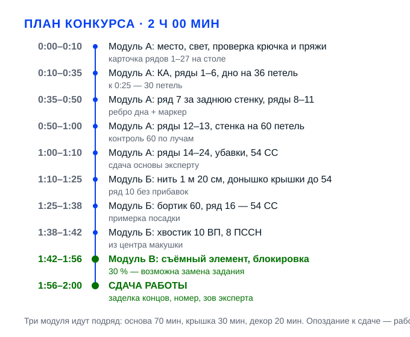
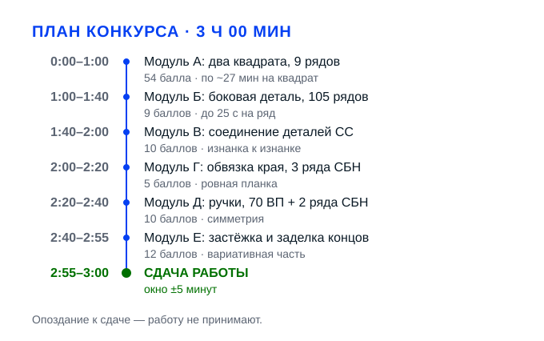
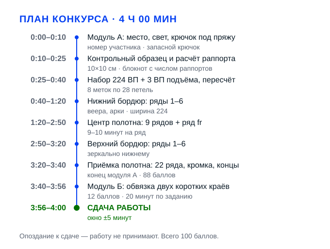

Вязание крючком (Р)
Задания ниже — официальные файлы «Абилимпикс» (источник: abilympics-russia.ru), разложенные по категориям. Решения написаны по тексту задания, регламенту и критериям оценки; в них указано, что именно проверяет эксперт.
Школьник
14–16 лет, базовый уровень заданияВыдержка из официального конкурсного задания: страницы, относящиеся к категории «Школьник» (стр. 4–6 источника).
Пошаговое решение
Разбор по официальному конкурсному заданию категории «Школьники»: за 2 часа нужно вывязать шкатулку-органайзер «Желудь». Работа идёт тремя модулями подряд: модуль А — 1 час 10 минут на основу, единое полотно по спирали техникой «в раскол», 27 рядов от кольца амигуруми до 54 петель бортика; модуль Б — 30 минут на крышку и «хвостик»-ручку, с нитью 1 м 20 см, оставленной в начале работы; модуль В — 20 минут на съёмный декоративный элемент и заделку концов по всему изделию. Баллы распределены жёстко: 51 за основу, 36 за крышку, 13 за декор, всего 100, и все три критерия измеримые — считают петли, ряды и посадку. Региональная часть касается именно третьего модуля: 30 % задания может быть изменено вплоть до конкретного названного элемента, поэтому лист изменений читают до начала работы.

Задача 1. Организовать рабочее место и разобрать описаниеПодготовка · время входит в 2 ч 00 мин
Шкатулка «Желудь» вяжется без швов, по спирали, и ошибка, сделанная в первом ряду, тянется через все двадцать семь. Поэтому первые десять минут уходят не на петли, а на место, материал и чтение: свет слева и спереди, проверенный крючок, пряжа одной партии, маркеры и карточка с контрольными числами. В перечне 2.3.1 организация рабочего места стоит первым пунктом, а уборка и уведомление эксперта — последними, то есть порядок оценивают дважды: на старте и на сдаче.
Действие 1.1. Оборудовать место и убрать риски
Шаг 1.1.1
Садимся так, чтобы спина прижималась к спинке стула, а локти лежали на столе, а не висели: тогда крючок работает кистью, и через сорок минут не начинает ныть плечо. Свет ставим слева и чуть спереди — если вы правша, тень от руки не должна падать на полотно, иначе петли «в раскол» сливаются и крючок идёт не в ножку столбика, а рядом с ней. Клубок кладём слева в коробку или глубокую миску, чтобы он не укатился под стол и не тянул нить через колени.
Рабочее место — первый пункт перечня 2.3.1, его смотрят до старта. Недостаточный свет и неправильная посадка бьют не по одному пункту, а по всем сразу: плотность плывёт, петли считаются с ошибкой, темп падает. Инструкция по охране труда требует, чтобы свет падал спереди или слева, а инструмент держали в 30–45 см от глаз — это не формальность, а условие, при котором 1278 петель модуля А реально связать за 70 минут.
Проверьте тень: положите крючок на стол — она должна уходить вправо, а не на рабочую зону. Клубок не касается пола, локти не висят; если стол низкий, поднимите его или подложите подушку на стул. Проверка занимает минуту и делается до первой петли.
Классика — сесть лицом к окну: кажется, что света больше, но рука закрывает полотно, и через десять минут глаза устают настолько, что ряд из 60 петель вяжется «на автомате» с двумя лишними прибавками. Исправлять роспуском — минус 3–4 минуты из 70.
Эксперт обходит места в первые минуты и смотрит на источник света, посадку и то, лежит ли клубок на столе или на полу; замечание идёт в лист, даже если потом всё связано ровно.
Шаг 1.1.2
Проверяем крючок: головка отшлифована, бородка не заострена в иглу и не имеет заусенца, ручка не шатается. Проводим подушечкой большого пальца по головке — если чувствуется шероховатость или зацеп, крючок откладываем: он будет расслаивать пряжу и цеплять каждую петлю «в раскол». Ножницы кладём справа лезвиями от себя, рядом — гобеленовую иглу с широким ушком для заделки концов и отдельную баночку под обрезки.
Заусенец на головке — не мелочь: при вязании «в раскол» крючок входит в ножку столбика под углом и при выходе цепляет волокна, пряжа распушается, полотно теряет вид, на светлых нитях появляются затяжки. Пункт 6.2 требует проверять инструмент до начала работ именно поэтому, а не для отчёта: испорченное полотно уже не спасти отпариванием.
Проведите крючком по шерстяной нити туда-обратно десять раз — волокна не должны вытягиваться шариком. Ножницы режут нить одним движением, без «жевания»: тупые оставляют лохматый конец, который потом вылезает из-под заделки.
Самая частая ошибка — взять крючок с чуть погнутой бородкой «на один раз»: первые двадцать рядов он вяжет, а на 60 петлях начинает сбрасывать петли, и вы теряете счёт. Второй провал — резать нить зубами или подпиленными ножницами: конец становится рыхлым и выходит из изделия через неделю.
Эксперт проверяет инструмент при осмотре места и отдельно — аккуратность обрезки концов: лохматый срез виден на изнанке и снижает балл за заделку в модуле В.
Шаг 1.1.3
Раскладываем стол на три зоны: слева клубок и рабочая нить, по центру полотно и маркеры, справа ножницы, игла и блокнот со счётом рядов. Обрезки и бумажные ярлыки сразу уходят в баночку, а не на край стола: обрезок, прилипший к полотну, потом уходит внутрь изделия и вылезает в самый неподходящий момент. Сумку и лишние вещи убираем со стола полностью.
Два часа — это 1278 петель модуля А, 678 петель модуля Б и декоративный элемент, и каждая остановка «где ножницы» стоит 10–15 секунд, а их набираются десятки. Порядок в зонах экономит не эстетику, а минуты, которых в модуле Б (30 минут) критически мало. Уборка места отдельно названа в 2.3.1, то есть чистота оценивается и на старте, и на сдаче.
Сядьте, не вытягивая рук: ножницы должны оказаться под правой рукой, маркеры — под левой, блокнот — на виду. Если приходится тянуться или вставать, переложите. Раскладка закончена, когда все три зоны заняты, и ни одна вещь не лежит на пути руки.
Типичный провал — держать маркеры в пакете «чтобы не рассыпались»: чтобы поставить метку, вы каждый раз открываете пакет и теряете нить счёта. Не менее часто клубок оставляют на коленях, и он скатывается на пол на ряду 25, где начинаются убавки.
Эксперт смотрит на зоны и на то, убраны ли обрезки, когда подходит с листом оценки; захламлённый стол читается как неготовность, даже если изделие связано правильно.
Действие 1.2. Проверить материал до первой петли
Шаг 1.2.1
Берём пряжу одной партии и одного оттенка: у клубков с разными номерами партии оттенок отличается на полтона, и на цельном полотне это видно полосой поперёк шкатулки. Разматываем клубок и проверяем нить по всей длине — узелки, утолщения, перебитые участки лучше сразу вывести в начало и отрезать, чем ловить их на сороковой петле. Если пряжа в пасме, сматываем в клубок заранее, до старта: намотка — это отдельные 5–7 минут, которых в бюджете нет.
Шкатулка вяжется без швов, одним полотном по спирали, поэтому смена партии и узел в середине стенки видны и с лица, и с изнанки. Критерий модуля А измеримый: смотрят ровность полотна, отсутствие утолщений и одинаковую плотность по всей высоте, а узел посреди ряда 18 гарантированно снимает часть из 51 балла.
Протяните 2–3 метра нити между пальцами: она идёт ровно, без шишек и резких утонений. Ладонь после протяжки остаётся чистой — если нить линяет, руки испачкаются и полотно получит пятна. Если нить пачкает пальцы, отложите клубок и скажите эксперту до начала работы.
Самый дорогой провал — начать вторым клубком «похожего» цвета, потому что первый закончился: на границе видна ступенька, и убрать её можно только роспуском стенки. Второй — вязать прямо из пасмы, которая путается: вместо вязания вы пятнадцать минут распутываете бороду.
Эксперт осматривает изделие при сдаче модуля А и проверяет полотно на просвет: переход оттенка и узел видны сразу и фиксируются как дефект. Он же смотрит на клубок: лежит ли он в коробке или катается по полу.
Шаг 1.2.2
Подбираем крючок под пряжу и под нужную плотность: для гладкой пряжи средней толщины (около 160 м в 50 г) это чаще всего 2,0–2,5 мм. Проверяем на первых шести петлях: если крючок входит в ножку столбика с усилием и полотно стоит доской, берём на 0,25–0,5 мм толще; если между столбиками видны просветы — тоньше. Решение принимаем до кольца амигуруми и дальше крючок не меняем.
Техника «в раскол» даёт плотное полотно, где столбики стоят близко друг к другу, и ошибка в размере крючка здесь заметнее, чем в обычном вязании: толстый крючок превращает шкатулку в решето, тонкий — в камень, который не держит форму крышки. Менять инструмент в середине нельзя: плотность первых рядов и ряда 20 будет разной, и это видно на просвет.
Свяжите кольцо и два ряда, посмотрите на свет: полотно плотное, но не жёсткое, столбики одинаковой высоты. Если ряд из 12 петель встаёт волной, крючок велик; если круг сворачивается чашей — мал. Проверьте и то, как крючок выходит из петли: с усилием или свободно.
Школьники часто берут крючок «какой был в наборе» и обнаруживают на ряду 12, что дно идёт волной: перевязывать надо с начала, это минус 15 минут из 70. Обратная ошибка — взять толстый крючок «чтобы быстрее»: петель меньше не станет, а изделие потеряет форму и балл за качество.
Эксперт смотрит на дно при сдаче: волна и чаша — признаки неверной плотности, и это первый пункт, по которому снижают измеримый балл модуля А. Плотность он проверяет на ощупь и на просвет, приложив дно к лампе.
Шаг 1.2.3
Готовим счёт: два-три маркера контрастного цвета, блокнот и карандаш. Маркер ставим в первую петлю ряда, а не «где-нибудь», и переставляем каждый раз, когда начинается новый ряд; в блокноте отмечаем номер ряда и число петель — 12, 18, 24, 30, 36 после шестого, 42 после восьмого. Для длинных рядов 14–24 удобно держать на столе бумажку с числами 14…24 и зачёркивать по одному.
Основа вяжется по спирали, без соединительных петель и подъёмов, поэтому «начало ряда» существует только там, где стоит маркер. Без метки счёт сбивается уже на ряду 4–5, дальше вы либо вяжете лишнюю прибавку, либо пропускаете её, и вместо 60 петель в ряду 13 получаете 59 или 61 — вся геометрия шкатулки едет.
Маркер стоит в петле, а не между столбиками, и его видно с рабочей стороны. Последняя запись в блокноте совпадает с тем, что на полотне: пересчитайте петли по кругу, двигаясь от маркера, а не на глаз.
Частая ошибка — считать ряды по памяти и ставить маркер только на каждом пятом: на прямых рядах 14–24, где нет ни прибавок, ни убавок, память отказывает первой, и вы вяжете девять рядов вместо одиннадцати. Это 120 петель разницы по высоте стенки.
Эксперт проверяет высоту стенки и число рядов по кромке; ошибка в два ряда видна как разная высота противоположных сторон шкатулки. Отдельно отмечают, стоит ли маркер в первой петле: без него счёт рядов ничем не подтверждён.
Действие 1.3. Разобрать описание на действия
Шаг 1.3.1
Расшифровываем сокращения на отдельном листе: КА — кольцо амигуруми, ВП — воздушная петля, СБН — столбик без накида, СС — соединительный столбик, ПР — прибавка (два СБН в одну петлю), СБ — сбавка (две петли провязываются одной), ПССН — полустолбик с накидом. Отдельно проговариваем «в раскол»: крючок входит не под обе полупетли сверху, а в ножку столбика предыдущего ряда, по центру.
Половина потерь времени у школьников — не в вязании, а в перечитывании описания: пока вы каждый ряд заново вспоминаете, что значит ПР, вы не вяжете. Кроме того, «в раскол» стоит отдельной строкой перед модулями А и Б, и если вязать обычным способом, полотно получится рыхлым, а дно — с просветами.
Закройте описание и назовите по памяти, что означает каждая из семи аббревиатур и сколько петель даёт ПР. Если хотя бы одна вызывает сомнение, выпишите её крупно и положите перед глазами. Проверить себя можно и так: продиктуйте ряд 25 вслух, не подглядывая.
Типичная ошибка — принять СБ за СБН: обозначения похожи, и в ряду 25 вместо шести убавок появляются шесть обычных столбиков, из-за чего край остаётся на 60 петлях и крышка не садится. Заметить это можно только на примерке, когда перевязывать уже поздно.
Эксперт по ходу работы видит, сверяется ли участник с описанием; грубая ошибка в трактовке сокращений проявляется уже в ряду 25 и стоит части из 51 балла.
Шаг 1.3.2
Переписываем ряды 1–27 в столбик своими словами, с контрольным числом после каждого: 6, 12, 18, 24, 30, 36, 36 за заднюю стенку, 42, 42, 48, 48, 54, 60, дальше одиннадцать рядов по 60, затем 54, 54 и 54 СС. Рядом с рядами 7, 13 и 24 ставим звёздочку — это точки контроля. Такую же карточку делаем для крышки, но короче: шестнадцать рядов и хвостик. Карточка нужна на весь конкурс, а не на первые десять минут.
Когда описание переписано своей рукой, мозг перестаёт тратить силы на разбор формата «(ПР, 5 СБН) х 6 раз» и занимается только вязанием. Контрольные числа — ваш измеримый инструмент: именно по ним эксперт проверяет изделие, и именно они позволяют поймать ошибку на ряду 9, а не на ряду 24, когда перевязывать уже нет времени.
В карточке 27 строк и ни одной строки без числа в скобках. Сверьте с описанием шесть контрольных точек: 12, 36, 60, 54, 60 и 54 — они должны совпадать с оригиналом буквально. Если контрольное число не сходится с описанием, ошибка в переписывании, а не в тексте задания.
Переписывание в общем виде, формулами без чисел, не помогает: на ряду 10 вы всё равно считаете в уме. Вторая ошибка — потерять строку: пропущенный ряд 26 не изменит число петель, но изменит высоту, и крышка ляжет с перекосом.
Карточка лежит на столе во время работы, и эксперт при спорной ситуации сверяется именно с ней и с оригиналом описания, а не с памятью участника. Сверка занимает секунды и снимает все спорные вопросы на месте.
Шаг 1.3.3
Раскладываем два часа по модулям: основа — 70 минут, крышка — 30, декоративный элемент — 20. Внутри основы прикидываем темп: 1278 петель за 70 минут — это около 18 петель в минуту, то есть ряд на 60 петель занимает 3–3,5 минуты. Намечаем три точки контроля времени: к 0:40 связано 42 петли и ребро седьмого ряда, к 1:00 — все 60 петель тринадцатого, к 1:10 основа сдана.
Время здесь жёстче, чем кажется: на крышку отведено 30 минут, а в ней 678 петель плюс хвостик, и если вы пришли к ней в 1:15 вместо 1:10, вы гарантированно не успеваете. Разбивка на контрольные точки позволяет заметить отставание на десять минут раньше, чем оно станет необратимым.
Таймер на столе, а не в телефоне в сумке. В 0:40 посмотрите на полотно: если связано 30 петель вместо 42, вы отстаёте на треть, и надо ускорять темп, а не доводить ровность уже связанного. Сверяйтесь с таймером в трёх точках, а не один раз в конце.
Школьники часто догоняют качество на основе, доводя дно до идеала, и приходят к крышке с опозданием на двадцать минут: крышка остаётся недовязанной, и теряются все 36 баллов модуля, а не часть. Тридцать шесть баллов крышки не стоят трёх лишних минут, выигранных на основе.
Эксперты фиксируют время сдачи каждого модуля; недовязанный модуль оценивается по факту, и арифметика жёсткая — 36 баллов из 100. В листе отмечают и время начала каждого модуля.
Задача 2. Вывязать основу шкатулки «Желудь»Модуль А · 51 балл
Основа — самая дорогая часть задания: 51 балл из 100 и 70 минут из 120. Вяжется она единым полотном по спирали, техникой «в раскол», от кольца амигуруми до верхнего края: шесть клиньев, прибавки до 36 петель, ряд за заднюю стенку как ребро перехода от дна к стенке, расширение до 60, одиннадцать прямых рядов и шесть убавок в двадцать пятом. Ровно 1278 петель, из которых ни одна не является второстепенной: любая ошибка в счёте тянет за собой посадку крышки.
Действие 2.1. Заложить кольцо амигуруми и первые три ряда
Шаг 2.1.1
Нить от клубка кладём на левую ладонь, конец длиной 8–10 см уводим вниз; делаем на пальцах два оборота так, чтобы рабочая нить шла от клубка поверх кольца, а хвост — под ним. Снимаем кольцо с пальцев и придерживаем большим и средним пальцами левой руки, не затягивая: оно должно быть свободным, чтобы в него прошли шесть столбиков, и плотным настолько, чтобы не разъехалось.
Кольцо амигуруми — единственное место, где дно может получиться с дыркой: если затянуть его сразу, крючок не пройдёт под обе нити, и вы начнёте цеплять одну, отчего центр разойдётся. Именно хвост кольца потом стягивает центр до нуля, и от того, насколько аккуратно он выведен, зависит, будет ли видно просвет в дне.
Потяните за хвост — кольцо стягивается, а не развязывается. Внутрь свободно проходят два пальца, но кольцо не разваливается, когда вы его отпускаете. Ещё один признак: кольцо не должно растягиваться, если потянуть его в стороны, — только стягиваться за хвост.
Частая ошибка — сделать виток «в один оборот»: кольцо расползается, и шесть первых столбиков встают не по кругу, а эллипсом, из-за чего дно получается овальным и все прибавки идут с перекосом. Распустить придётся всё, включая первые шесть столбиков.
Эксперт смотрит на центр дна: стянутое кольцо без просвета — признак аккуратной работы и одна из первых вещей, которые видно на сдаче модуля А. Он же смотрит, не расходится ли центр при лёгком натяжении.
Шаг 2.1.2
Вводим крючок под обе нити кольца, вытягиваем рабочую нить, провязываем воздушную петлю — и дальше вяжем шесть СБН прямо в кольцо, а не в петли: крючок каждый раз проходит под кольцо, захватывает нить от клубка и провязывает обе петли на крючке. Считаем вслух: один, два, три, четыре, пять, шесть. Шестой столбик замыкает круг вплотную к первому. Крючок держим под углом к кольцу, а не вертикально.
Шесть столбиков в кольцо — это шесть клиньев, на которых держится геометрия дна: в каждом следующем ряду прибавляется ровно шесть петель, по одной в клин, и если в первом ряду их пять или семь, круг перестаёт быть правильным. Описание модуля А начинается именно с этой цифры, и все контрольные числа — 12, 18, 24 — кратны шести.
Пересчитайте головки столбиков по кругу, не полагаясь на память: их шесть, они стоят плотно, без промежутков. Потяните за рабочую нить — круг стягивается в кольцо, а не в спираль. Головки столбиков должны быть одной высоты: разные по высоте шесть столбиков дают волнистый край.
Ошибка новичка — вязать первые столбики в воздушную петлю, а не в кольцо: вместо круга получается цепочка из шести петель, и вместо дна — узкая полоска, которую придётся распускать. Проверить легко: у правильного начала все шесть столбиков выходят из одного кольца.
Эксперт проверяет число клиньев на дне: шесть радиальных линий прибавок должны расходиться от центра, как спицы, и быть равномерными. Он пересчитывает их по кругу и сравнивает расстояние между лучами.
Шаг 2.1.3
Тянем за хвост кольца и стягиваем центр до нуля — тянем постепенно, распределяя натяжение по кругу, чтобы не порвать нить. Затем вяжем ряд 2: в каждую из шести петель по два СБН «в раскол», крючок вводим в ножку столбика, а не под верхние полупетли. Получаем 12 петель, в первую сразу ставим маркер. Если крючок входит в ножку с трудом, не расширяйте петлю пальцем: смените крючок на 0,25 мм толще, пока связано двенадцать петель.
Прибавка «в раскол» — то, ради чего в описании отдельной строкой указана эта техника: столбик встаёт в ножку предыдущего, полотно становится плотнее, и в дне не остаётся дырочек, через которые видно содержимое шкатулки. Затянутый центр — вторая причина: незатянутое кольцо потом не исправить, не распустив два-три ряда.
Пересчитайте: ровно 12 петель, шесть пар. Центр стянут так, что просвета нет совсем; на свету дно не просвечивает. Приложите дно к лампе: просветы между столбиками второго ряда — признак того, что прибавки сделаны не в ножку, а рядом с ней, и полотно придётся перевязать.
Не затянуть кольцо до конца — самая обидная ошибка: снаружи всё красиво, а на дне остаётся отверстие диаметром с карандаш. Исправить его после шестого ряда невозможно, придётся распускать до кольца. Проверка занимает секунду, перевязка — пятнадцать минут.
Эксперт переворачивает изделие и смотрит дно с изнанки: именно там видно, затянуто ли кольцо и нет ли просветов между столбиками. Отдельно отмечают, стянут ли центр ровно, без перекоса в одну сторону.
Шаг 2.1.4
Ряд 3: (ПР, 1 СБН) шесть раз — то есть прибавка, один столбик, снова прибавка и так по кругу, всего 18 петель. Прибавки распределяем по шести клиньям, чтобы они шли ровными лучами, а не сбивались в кучу на одной стороне. В конце ряда пересчитываем петли и переставляем маркер в первую петлю нового ряда. Первую прибавку делаем в ту же петлю, где стоит маркер, иначе клин сдвинется на один столбик и дальше поедет весь рисунок.
С третьего ряда появляется рисунок прибавок, и дальше он только повторяется со сдвигом: (ПР, 1), (ПР, 2), (ПР, 3) и так до (ПР, 8). Если сбить ритм здесь, дальше вы будете повторять ошибку ещё десять раз, и дно пойдёт волной или восьмёркой. Восьмёрка исправляется только полным роспуском.
18 петель, шесть лучей прибавок, расстояние между ними одинаковое. Круг лежит на столе плоско: не чашей и не волной. Положите круг на стол и накройте ладонью: если край приподнимается с одной стороны, прибавки где-то сдвоены, и это видно уже на восемнадцати петлях.
Прибавки, сделанные в одну и ту же петлю дважды, дают шишку и смещают клин: на глаз это незаметно, но к тринадцатому ряду круг становится не круглым, а шестиугольным с неровными сторонами. Заметно это будет только на готовом дне, когда распускать шесть рядов уже дорого.
Эксперт считает петли по кругу и смотрит на симметрию: шесть лучей должны быть видны без напряжения, как у заводского донышка. Он же смотрит, не смещены ли прибавки к одной стороне круга.
Действие 2.2. Довести дно до 36 петель и заложить ребро
Шаг 2.2.1
Вяжем ряды 4, 5 и 6 по описанию: (ПР, 2 СБН) — 24 петли, (ПР, 3 СБН) — 30, (ПР, 4 СБН) — 36. Каждый ряд заканчиваем пересчётом и переставленным маркером. Между прибавками становится всё больше столбиков, и именно здесь важно не терять ритм: считайте не «до конца ряда», а «до шестой прибавки» — так сбой ловится сразу. Каждую шестую прибавку отмечайте вслух: «шесть», «двенадцать» — это дешевле, чем пересчитывать ряд с начала.
36 петель после шестого ряда — это диаметр дна, от которого зависит, влезет ли в шкатулку то, ради чего её делают. Дальше число петель растёт уже медленнее, и ошибка здесь не компенсируется: если в шестом ряду получилось 35 петель, все последующие контрольные числа поедут на единицу, и тринадцатый ряд даст 59 вместо 60.
36 петель, дно плоское, край не заворачивается вверх и не идёт волной. Положите дно на стол и прижмите ладонью — оно должно лежать всей поверхностью, без горба в центре. Проверьте и высоту: шесть рядов от кольца должны давать дно диаметром примерно с ладонь.
Волна по краю на шестом ряду означает, что прибавок слишком много или крючок велик: если оставить как есть, к тринадцатому ряду волна превратится в сборку и дно перестанет быть дном. Распускать придётся до четвёртого ряда, это 15 минут.
Эксперт кладёт изделие на стол и смотрит на просвет под дном: плоскость — измеримый признак, по которому идёт оценка модуля А. Он же отмечает, нет ли горба в центре: он говорит о том, что кольцо стянуто неравномерно.
Шаг 2.2.2
Ряд 7 провязываем за заднюю стенку: крючок вводим только под дальнюю от вас полупетлю петли предыдущего ряда, а не под обе. Все 36 столбиков идут без прибавок, ровно по кругу. Этот ряд — единственное место в основе, где техника меняется. Перед провязыванием отогните переднюю полупетлю пальцем или крючком, чтобы точно видеть, куда входит головка: ошибка здесь стоит всего ряда, но заметна только на стенке.
Ряд за заднюю стенку даёт рубчик — линию перегиба между дном и стенкой: передние полупетли остаются свободными и образуют чёткий валик, по которому стенка встаёт вертикально, а не разваливается наружу. Без этого ряда шкатулка получится бесформенным мешком с круглым дном, и это видно на сдаче сразу.
По лицевой стороне идёт ровный валик из 36 полупетель, он непрерывен по всему кругу. Дно после этого ряда можно поставить на стол — оно уже держит форму. С изнанки вдоль ребра видны свободные передние полупетли — они образуют дорожку из тридцати шести петель, и она должна быть непрерывной.
Провязать седьмой ряд обычным способом, за обе полупетли, — ошибка, которая не видна на дне, но обнаруживается, когда стенка начинает заваливаться наружу: ребра нет, и шкатулка раскрывается под весом крышки.
Эксперт проводит пальцем по линии перехода дна в стенку: рубчик должен быть одинаковой высоты по всему кругу, без провалов. На просвет рубчик виден как ровная полоса, которая не прерывается ни в одном клине.
Шаг 2.2.3
Сразу после седьмого ряда проверяем ребро и ставим второй маркер — на границе дна и стенки, чтобы потом, на высоте одиннадцати рядов, было видно, где заканчивается плоская часть. Дальше вяжем уже в стенку: крючок идёт в петли седьмого ряда сверху, полотно поднимается вверх. Маркер ребра ставьте в петлю седьмого ряда, а не в только что связанную: иначе он уедет вместе с полотном и перестанет показывать границу.
Метка на ребре — ваш измерительный инструмент на весь модуль: по ней видно высоту стенки и то, ровно ли она идёт вверх, без наклона. При сдаче эксперт смотрит именно посадку крышки на этот край, и если ребро перекошено, крышка сядет с зазором. Без метки высоту стенки не измерить.
Маркер стоит в петле седьмого ряда с рабочей стороны и не мешает вязанию. Ребро по всему кругу на одной высоте — приложите крючок плашмя и сравните. Считайте ряды от ребра вверх по кромке: если над ребром уже четыре ряда, а маркер всё ещё стоит в первом, значит он поставлен не туда.
Потерять метку ребра к четырнадцатому ряду — обычное дело: тогда высоту стенки вы определяете на глаз, а разница в два ряда даёт перекос 3–4 мм, из-за которого крышка садится набок. Проверить перекос можно, поставив изделие на стол и посмотрев на верхний край: он должен быть параллелен столу.
Эксперт при сдаче ставит крышку на основу и смотрит зазор по кругу: он должен быть одинаковым, а это следствие ровного ребра и одинаковой высоты стенки.
Действие 2.3. Поднять стенку до 60 петель
Шаг 2.3.1
Ряд 8: (ПР, 5 СБН) шесть раз — 42 петли. Ряд 9: 42 СБН без прибавок, ровно по кругу, «в раскол». Прибавки восьмого ряда распределяем по тем же шести лучам, что и раньше, чтобы клинья продолжались, а не смещались. На этих рядах удобно держать перед глазами записку с числами 42 и 42 и отмечать ряды карандашом: считать «до шести прибавок» проще, чем пересчитывать весь ряд, а после ряда без прибавок число петель не меняется, и его достаточно проверить один раз.
Чередование ряда с прибавками и ряда без прибавок — это то, что делает стенку не конусом, а плавно расширяющейся книзу формой: шкатулка получается устойчивой, с небольшим расширением к середине. Если вязать прибавки в каждом ряду, стенка пойдёт тазиком, а если пропустить девятый ряд, получится ступенька, видимая на свет.
Восьмой ряд — 42 петли, девятый — тоже 42. На полотне шесть лучей прибавок, между ними по шесть петель в девятом ряду. Стенка поднимается вверх, а не лежит на столе. Пересчитайте петли в девятом ряду: если их 41 или 43, прибавка восьмого ряда потерялась или удвоилась.
Пропустить девятый ряд «чтобы быстрее» — и стенка начнёт заворачиваться наружу, как тарелка: к тринадцатому ряду это уже не исправить, а шкатулка перестанет закрываться крышкой. Перевязать придётся два ряда, а это семь-восемь минут из семидесяти.
Эксперт смотрит на профиль стенки: плавное расширение и ровные лучи прибавок — признак того, что описание читали, а не импровизировали. Он проверяет и то, что ряды без прибавок действительно без прибавок: на свету в них не должно быть расширения.
Шаг 2.3.2
Ряд 10: (ПР, 6 СБН) шесть раз — 48 петель. Ряд 11: 48 СБН без прибавок. Дальше по той же схеме: двенадцатый — (ПР, 7 СБН) — 54, тринадцатый — (ПР, 8 СБН) — 60. Каждый ряд заканчиваем пересчётом; на 48 и 54 петлях считать надо внимательно, потому что сбиться на длинном отрезке между прибавками легче всего. В ряду на 48 петель между прибавками уже шесть столбиков — именно на таких отрезках рука начинает гулять и делает лишний столбик.
60 петель в тринадцатом ряду — ключевое контрольное число: это диаметр, на который потом сядет крышка с её 60 петлями. Ошибка в одну петлю здесь означает, что крышка будет либо болтаться, либо не налезать, и это уже не исправить ничем, кроме перевязывания одного из двух модулей.
В тринадцатом ряду ровно 60 петель — пересчитайте двумя способами: по лучам (десять петель между прибавками) и по кругу от маркера. Оба счёта должны дать 60. Проверьте и то, что стенка после тринадцатого ряда ещё не заворачивается: если край пошёл вверх чашей, прибавки шли слишком часто.
Недовязать или перевязать одну петлю в двенадцатом ряду — типичная ошибка при переходе с 48 на 54: дальнейшие ряды считаются от неверного числа, и в четырнадцатом вместо 60 получается 59, а дальше вся стенка идёт с перекосом в одну петлю.
Эксперт пересчитывает петли по краю при сдаче модуля А, и расхождение с описанием фиксируется как несоответствие — это прямой вычет из 51 балла. Пересчёт делают по кромке, а не по памяти.
Шаг 2.3.3
Проверяем геометрию: кладём шкатулку на стол и смотрим сверху — круг должен быть круглым, а не овальным, шесть лучей прибавок должны расходиться равномерно. Проверяем и высоту: от ребра седьмого ряда до тринадцатого должно быть шесть рядов, и все они одинаковой высоты. Положите изделие на стол и посмотрите на него сбоку на уровне глаз: перекос виден лучше, чем сверху, а исправлять его дешевле сейчас, чем после двадцать четвёртого ряда.
К этому моменту связано 456 петель из 1278 — треть модуля А, и именно здесь дешевле всего обнаружить перекос: распустить шесть рядов стоит 5 минут, а перевязывать всю стенку после двадцать четвёртого — 25 минут, которых нет. Ровный круг в тринадцатом ряду — условие того, что дальше можно вязать без прибавок и не думать о форме.
Положите на шкатулку лист бумаги и обведите край карандашом: контур должен быть кругом, а не эллипсом. Осевые линии через центр должны пересекать одинаковое число петель. Ещё одна проверка: обхватите стенку пальцами — она должна быть одинаково плотной по всему кругу.
Смещение одного клина на две петли делает круг овальным, и дальше это не лечится: прямые ряды 14–24 просто тиражируют перекос на всю высоту, а крышка садится с зазором с одной стороны. Распускать придётся до тринадцатого ряда — это около двадцати минут.
Эксперт смотрит на изделие сверху и сбоку; овальность и перекос видны без измерений и оцениваются как дефект формы. Он же смотрит на дно снизу: если изделие стоит на столе, покачиваясь, значит дно не плоское, а это уже ошибка в прибавках первых шести рядов.
Шаг 2.3.4
Переставляем маркер и записываем в блокнот: «ряд 13 — 60, дальше одиннадцать рядов по 60 без прибавок». Отмечаем время: если сейчас не больше 1:00 от старта, вы в графике; если 1:05 — надо ускорять темп и не отвлекаться на пересчёт каждого ряда. Полезно сразу отложить клубок так, чтобы хватило на все одиннадцать рядов: если пряжа закончится на середине стенки, придётся вводить новую нить и прятать конец внутри полотна.
Дальше идёт самый длинный участок — 660 петель подряд без изменения числа петель, самое монотонное место задания. Записанный план и отметка времени дают ориентир: на прямых рядах легко потерять и ряд, и темп, а модуль Б с его тридцатью минутами уже ждёт.
В блокноте есть запись с числом 60 и планом на одиннадцать рядов, а на полотне — маркер в первой петле. Если запись не сделана, сделайте её сейчас. Проверьте заодно, что маркер стоит в первой петле, а не в последней: от этого зависит, с какого столбика начнётся четырнадцатый ряд.
Начать прямые ряды на память, не отметив номер: через двадцать минут вы не сможете сказать, девять рядов связано или одиннадцать, и придётся пересчитывать все 60 петель по кромке, теряя 4–5 минут. Точка в блокноте занимает секунду, пересчёт кромки — пять минут.
Эксперт по ходу работы оценивает и организацию: аккуратные записи и метки читаются как понимание задания, а не как формальность. Он же замечает, сколько раз участник пересчитывает ряд: редкие проверки читаются как уверенный счёт.
Действие 2.4. Связать стенку и закрыть край
Шаг 2.4.1
Ряды 14–18 вяжем по 60 СБН «в раскол», без прибавок и убавок, по спирали. Держим темп: ряд на 60 петель — это 3–3,5 минуты, пять рядов — около 17 минут. Маркер переставляем в начале каждого ряда, а в блокноте ставим точку после каждого связанного, чтобы не сбиться. На прямых рядах петли одинаковые, и глаз перестаёт их различать: держите ритм «шестьдесят и точка в блокноте», а не «ещё чуть-чуть до конца ряда».
Прямые ряды — это и есть высота шкатулки: с четырнадцатого по двадцать четвёртый стенка поднимается на одиннадцать рядов, и от неё зависит, поместится ли внутрь органайзер и закроется ли крышка. Пять рядов — треть этого участка, и если здесь потерять темп, на убавки в двадцать пятом останется 5 минут вместо 10.
После восемнадцатого ряда в блокноте пять отметок, на полотне пять новых рядов над ребром. Число петель по кругу по-прежнему 60 — проверьте один раз, на восемнадцатом, а не в каждом ряду. Если число петель изменилось, ищите лишнюю прибавку в первых двух рядах участка.
На прямых рядах рука сама делает прибавку в месте, где раньше был луч: полотно начинает расширяться, и к двадцать четвёртому вместо цилиндра получается колокол, который не закрывается крышкой. Заметить это можно только на примерке, когда перевязывать поздно.
Эксперт смотрит на стенку сбоку: она должна идти вертикально, без расширения кверху и без сужения, как стакан. Он проверяет и то, одинаковы ли ряды по высоте: разная высота говорит о том, что в середине участка меняли натяжение нити или крючок.
Шаг 2.4.2
Ряды 19–24 — ещё шесть рядов по 60 петель, тем же способом, без изменений. На двадцать четвёртом ряду стенка заканчивается: от ребра седьмого ряда до верхнего края должно быть ровно одиннадцать рядов. Перед переходом к убавкам пересчитываем петли по всему кругу. Если после пересчёта оказалось 59 или 61, не догоняйте число прибавкой в последнем ряду: лучше найти ошибку и распустить участок, иначе перекос останется на всю высоту.
Одиннадцать прямых рядов дают высоту, при которой шкатулка работает как органайзер, а не как плоская тарелка. Пересчёт перед убавками — последняя возможность поймать ошибку дёшево: на 60 петлях распустить два ряда стоит 7 минут, а после двадцать пятого число петель изменится, и считать станет сложнее.
Одиннадцать рядов над ребром — пересчитайте по кромке, двигаясь от маркера ребра вверх. Петли по кругу — 60; верхний край ровный, не гуляет по высоте. Приложите линейку к стенке по вертикали: край должен идти параллельно ей, без наклона в одну сторону.
Связать двенадцать рядов вместо одиннадцати — ошибка, которая на глаз не видна, но шкатулка становится выше на 5 мм, и крышка садится не до конца: между крышкой и основой остаётся щель по всему кругу.
Эксперт при сдаче ставит крышку и смотрит на щель; лишний ряд — одна из причин, по которой крышка не доходит до бортика. Он же смотрит, не растянут ли верхний край: если он шире середины, стенка вязалась слабее, чем дно.
Шаг 2.4.3
Ряд 25: (СБ, 8 СБН) шесть раз — 54 петли. Сбавку делаем правильно: крючок вводим в первую петлю, вытягиваем нить, затем в следующую петлю вытягиваем нить ещё раз и провязываем все три петли на крючке одной — так убавка получается плоской, без бугорка. Ряд 26 — 54 СБН без изменений. Сбавки распределяем через каждые девять петель: восемь столбиков и убавка, и так шесть раз по кругу, чтобы убавки встали в те же места, где раньше шли лучи прибавок.
Шесть убавок в двадцать пятом ряду стягивают верхний край на шесть петель: это нужно, чтобы край стал чуть уже и крышка садилась на него как колпачок, а не сползала. Плоская сбавка важна потому, что этот ряд виден снаружи — бугорки на нём читаются как небрежность.
В двадцать пятом ряду ровно 54 петли, шесть убавок распределены равномерно по кругу, на лицевой стороне нет бугорков и дырочек. Двадцать шестой ряд идёт ровно, без волны. Проверьте край на просвет: в местах убавок не должно быть отверстий шириной в петлю.
Провязать сбавку так, что остаётся отверстие, — и через него видно содержимое. Вторая ошибка — сделать все шесть убавок подряд в одном месте: край перекосится на одну сторону, и крышка сядет косо. Край виден и снаружи, и изнутри, поэтому все шесть убавок делают одним способом.
Эксперт проводит пальцем по верхнему краю: он должен быть ровным и одинаково плотным; бугры и провалы фиксируются как дефект края. Отдельно он смотрит, не стянут ли край: при 54 петлях он должен свободно пропускать палец.
Шаг 2.4.4
Ряд 27 — 54 соединительных столбика по кругу: крючок вводим в петлю, вытягиваем нить и сразу протягиваем её через петлю на крючке, без накида и без второй протяжки. Вяжем плотно, но не стягивая. В конце обрезаем нить, оставив 8–10 см, вытягиваем конец через петлю и затягиваем — узел не вяжем. Первый соединительный столбик делаем в ту же петлю, где стоит маркер, и ведём ряд по кругу, не пропуская ни одной петли: на 54 петлях легко потерять одну и получить край на 53.
Ряд СС — плотный бортик: он держит форму верхнего края, не даёт ему растягиваться и закручиваться, а крышке даёт ровную площадку для посадки. Узел на конце не делают потому, что он даёт утолщение, которое видно снаружи и мешает крышке сесть ровно; конец прячут внутрь полотна.
Бортик из 54 СС идёт ровной плотной полосой одинаковой ширины, край не закручивается ни внутрь, ни наружу. Нить закреплена, конец не распускается при потягивании. Проверьте и диаметр: положите основу на лист бумаги и обведите — верхний край должен быть на шесть петель меньше самого широкого места стенки.
Провязать СС слишком туго — край стянется, его диаметр станет меньше 54 петель, и крышка, связанная на 60, будет болтаться. Слишком слабо — бортик растянется и потеряет форму уже при первой примерке. Край после этого не исправить без роспуска всего бортика.
Эксперт смотрит на бортик при сдаче модуля А: ровная плотная полоса и аккуратно спрятанный конец — прямой плюс к оценке выполнения основной детали. Бортик он проверяет на ощупь и на просвет.
Задача 3. Вывязать крышку и «хвостик»-ручкуМодуль Б · 36 баллов
Крышка — 36 баллов и всего 30 минут, самый плотный по времени модуль. Она повторяет геометрию основы, но с двумя отличиями, и оба принципиальны: после 54 петель идёт ряд без прибавок, из-за которого макушка получается плоской, а не куполом, и последний ряд из 54 соединительных столбиков стягивает край с 60 петель, чтобы крышка защёлкивалась на бортике основы. Плюс нить 1 м 20 см, оставленная в начале работы, из которой вяжется хвостик-ручка — без неё модуль не засчитывается.
Действие 3.1. Оставить нить на хвостик и связать донышко крышки
Шаг 3.1.1
До первой петли отмеряем от клубка 1 м 20 см и складываем этот отрезок гармошкой или наматываем на палец, чтобы он не путался; отмерять надо именно от клубка, а не отрезать потом. Хвост фиксируем булавкой или зажимом у края стола. Дальше вяжем крышку от кольца амигуруми этим же отрезком, а клубок остаётся висеть на другом его конце. Нить не натягиваем: она должна лежать свободно, иначе первые шесть столбиков выйдут плотнее остальных.
1 м 20 см — не запас, а точная длина под хвостик-ручку: в описании модуля Б она указана отдельной строкой. Если отмерить меньше, на 10 ВП и 8 ПССН не хватит, а если тянуть из клубка, хвостик получится толщиной в две нити и будет отличаться от крышки. Ошибка дорогая: 36 баллов модуля зависят от того, есть ли у крышки ручка.
Отмеренный конец лежит отдельно, его длина от клубка до кольца — не меньше 1 м 20 см, проверьте по крючку или линейке. Он не натянут: крышка должна вязаться свободно. Проверьте и то, что хвост не перекручен вокруг рабочей нити: перекрут даёт узел уже на третьем столбике.
Самая частая и самая дорогая ошибка модуля — начать вязать от клубка, а про хвост вспомнить на десятом ряду: придётся или привязывать нить отдельно, и тогда в центре крышки виден узел, или вязать хвостик из остатков другого цвета.
Эксперт смотрит на центр крышки: хвостик должен выходить из самого центра, одной нитью, без узлов и утолщений. Он же смотрит, не отличается ли хвостик по толщине от полотна: если вязали в две нити, это видно сразу.
Шаг 3.1.2
Кольцо амигуруми делаем так же, как на основе: два оборота, шесть СБН в кольцо, стянуть хвост до нуля. Ряд 2 — шесть ПР «в раскол», 12 петель. Ряд 3 — (ПР, 1 СБН) шесть раз, 18 петель. Сразу ставим маркер в первую петлю второго ряда и дальше переставляем его каждый ряд. Крючок держим так же, как на основе, и натяжение нити не меняем: крышка должна быть связана той же рукой, что и основа, иначе плотности не совпадут.
Крышка должна повторить геометрию основы: то же кольцо, те же шесть клиньев, та же техника «в раскол», иначе плотность двух деталей будет разной, и они будут выглядеть как изделия из разных комплектов. Первые три ряда задают эту плотность, и менять крючок после них нельзя.
12 петель во втором ряду и 18 в третьем — пересчёт после каждого. Центр стянут, просвета нет. Полотно на ощупь совпадает по плотности с основой, если приложить детали друг к другу. Проверьте и цвет: при другом клубке оттенок виден рядом с основой сразу.
Связать крышку тем же крючком, но слабее, чтобы быстрее, — и на примерке выясняется, что она шире основы на 4–5 петель: крышка болтается и спадает. Распускать придётся всю, а в модуле всего 30 минут. Плотность важнее скорости, а перевязка крышки стоит всего модуля.
Эксперт сравнивает две детали рядом: плотность и цвет должны совпадать, а край крышки — повторять линию основы. Он прикладывает детали друг к другу и смотрит на просвет: разная плотность видна как разная ширина столбиков.
Шаг 3.1.3
Ряды 4–6 вяжем по описанию: (ПР, 2 СБН) — 24, (ПР, 3 СБН) — 30, (ПР, 4 СБН) — 36. Ряды 7, 8 и 9 — (ПР, 5) — 42, (ПР, 6) — 48, (ПР, 7) — 54. Прибавки держим по шести лучам, ряд заканчиваем пересчётом, маркер переставляем. Ключевые числа этого участка: 24 после четвёртого ряда, 30 после пятого, 36 после шестого, 42 после седьмого, 48 после восьмого и 54 после девятого; каждое проверяем сразу, потому что пересчитывать весь круг на 54 петлях долго.
Шесть рядов с прибавками дают 54 петли — на шесть меньше, чем у основы на этом же этапе: крышка должна быть чуть меньше, чтобы сесть внутрь бортика. Именно поэтому в описании крышки после 54 идёт ряд без прибавок, а у основы — прибавки до 60. Соблюдение этого различия и есть аккуратность посадки.
После девятого ряда на крышке 54 петли. Положите её на основу: она должна лежать на дне, чуть не доходя до края, — это правильное соотношение диаметров. Проверьте и то, что крышка не выходит за край основы: если выступает, значит прибавок больше, чем нужно.
Механически повторить за основой и довести крышку до 60 петель к девятому ряду — тогда она получится шире основы, и никакая обвязка это не исправит. Сравнивайте число петель с описанием после каждого ряда, а не примерно: расхождение в одну петлю на девятом ряду даёт шесть лишних петель к шестнадцатому.
Эксперт прикладывает крышку к основе уже в процессе, и несоответствие диаметров видно сразу, без измерений. Он же смотрит, не пошла ли крышка волной: волна на девятом ряду означает, что прибавки делали чаще, чем указано.
Шаг 3.1.4
Ряд 10 провязываем без прибавок — 54 СБН. Это единственный плоский ряд в донышке крышки, и он нужен, чтобы между рядами прибавок появился участок ровного полотна: именно он даёт плоскую макушку, а не купол. Дальше ряд 11 — (ПР, 8 СБН), 60 петель. Десятый ряд — самый спокойный в модуле: 54 петли без прибавок, и именно на нём удобно проверить посадку, приложив крышку к основе, пока она ещё не закрыта бортиком.
Ряд без прибавок на 54 — это то, что отличает крышку от полусферы: без него макушка выйдет круглой, и хвостик не встанет ровно по центру. Кроме того, этот ряд задаёт ступеньку, по которой крышка садится на бортик основы. Без него крышка выходит полусферой, и хвостик приходится ставить не по центру, а с наклоном.
После десятого ряда ровно 54 петли, макушка плоская: приложите линейку или крючок плашмя, просвета в центре быть не должно. Проверьте и на ощупь: проведите ладонью по макушке — она должна быть ровной, а не выпуклой, и переход к бортику должен ощущаться как чёткая ступенька.
Пропустить десятый ряд, чтобы выиграть три минуты, — и макушка уходит куполом: хвостик встаёт под углом, а крышка выглядит как шапка, а не как шляпка жёлудя. Исправить купол можно только роспуском до девятого ряда, а это половина модуля и минус время на хвостик.
Эксперт смотрит на профиль крышки: плоская макушка с чётким переходом к бортику — признак точного следования описанию. Он же смотрит на переход от макушки к бортику: он должен быть ровным по всему кругу, без сборки.
Действие 3.2. Довязать крышку и обвязать край
Шаг 3.2.1
Ряды 12–15 вяжем по 60 СБН без прибавок, «в раскол», по спирали: четыре ряда, около 12–14 минут. Пятнадцатый ряд — последний прямой ряд бортика: после него высота крышки должна быть такой, чтобы она закрывала стенку основы на 1,5–2 см, не больше. Ряды 12–15 идут одинаково, и на них легко потерять счёт: отмечайте каждый ряд точкой в блокноте, а не на глаз, потому что лишний ряд бортика виден только на примерке.
Бортик крышки держит её на основе: если он слишком короткий, крышка съезжает при переноске, если слишком длинный — упирается в стенку и не садится до конца. Четыре ряда — расчётная высота по описанию, и добавлять ещё один для надёжности не нужно. Высота бортика считается по описанию, а не по ощущению.
После пятнадцатого ряда наденьте крышку на основу: она садится свободно, без нажима, и держится при лёгком наклоне. Высота бортика одинаковая по всему кругу. Проверьте и то, что бортик не топорщится: если он стоит колом, значит вязали слишком туго и крышка будет сниматься с усилием.
Связать пять рядов вместо четырёх — крышка упирается в ребро основы и садится с зазором 3–4 мм; снять её потом можно, а исправить — только распустив ряд. На глаз лишний ряд не виден, поэтому проверку делают примеркой, а не пересчётом: считают не ряды, а то, как крышка садится.
Эксперт проверяет посадку: крышка должна сниматься и надеваться одной рукой, без усилия, и не спадать при наклоне. Он же смотрит, не перекашивается ли крышка при надевании: перекос говорит о неровном бортике.
Шаг 3.2.2
Ряд 16 — 54 СС по кругу, как на основе, но здесь он играет другую роль: соединительные столбики стягивают край с 60 до 54 петель и образуют плотный валик, который заходит за бортик основы. Вяжем ровно, не стягивая: валик должен быть мягким, иначе крышка не сядет. Соединительные столбики вяжем в каждую петлю предыдущего ряда, без пропусков: пропущенная петля даёт ступеньку, и валик перестаёт стягивать край равномерно.
Именно этот ряд делает крышку защёлкивающейся: 60 петель края стягиваются на 54, и валик повторяет диаметр верхнего края основы, связанного тоже на 54 после двадцать пятого ряда. Без него крышка просто лежит сверху и сваливается при любом движении. Это и есть та самая посадка в натяг, без которой крышка не держится.
Валик идёт ровной полосой, край не закручивается. Наденьте крышку: она садится с лёгким натяжением и держится, а снимается с небольшим усилием. Проверьте и то, что валик не закручивается внутрь: если край подворачивается, СС провязаны слишком туго, и посадка будет тугой.
Провязать СС слишком свободно — валик не стягивает край, и крышка болтается. Слишком туго — край стягивается до пятидесяти петель, и крышка не налезает совсем: 36 баллов модуля под угрозой. Проверять посадку надо сразу после ряда, пока край ещё можно распустить.
Эксперт несколько раз надевает и снимает крышку: посадка с лёгким натяжением — то, что он ищет, и это видно без измерений. Он отмечает и то, одинакова ли плотность валика по кругу: разная плотность даёт перекос при надевании.
Шаг 3.2.3
Проверяем крышку как деталь: кладём её на стол макушкой вверх, смотрим сверху — круг ровный, лучи прибавок симметричны, валик одинаковой ширины. Пересчитываем петли последнего ряда: 54. Ошибки фиксируем сразу, пока не начали хвостик. Сравните крышку с основой по диаметру, приложив её сверху: разница должна быть в шесть петель, и если она больше, ошибка в прибавках, а не в посадке.
Крышка — 36 баллов, самая дорогая деталь после основы, и большинство ошибок здесь ещё исправимы за 2–3 минуты, если поймать их до хвостика. После хвостика любая перевязка означает, что нить на ручку уже израсходована. Проверка занимает полминуты и стоит дешевле, чем перевязка крышки в конце модуля.
54 петли по краю, круг симметричен, валик ровный, макушка плоская. Сравните с основой: детали должны выглядеть как пара. Проверьте и то, что макушка не смещена: центр крышки должен совпадать с центром кольца, а лучи прибавок идти от него равномерно.
Начать хвостик, не проверив крышку, и обнаружить перекос только на сдаче: перевязывать уже нечем, а несоответствие диаметров снимает баллы и за крышку, и за посадку. Перекос в шесть петель виден сразу: крышка садится на основу с зазором с одной стороны и натягом с другой.
Эксперт оценивает крышку как отдельную деталь: форма, плотность, ровность края и совпадение с основой по цвету и толщине. Он же проверяет, нет ли на крышке просветов: на свету они видны как точки между столбиками.
Действие 3.3. Вывязать «хвостик»
Шаг 3.3.1
Берём оставленный конец 1 м 20 см и выводим его на лицевую сторону через центр крышки: крючком цепляем нить с изнанки в центре кольца и вытягиваем петлю наружу. Набираем 10 воздушных петель — цепочка идёт вверх от макушки, как черешок жёлудя. Петли делаем одинаковыми, не затягивая: цепочка должна быть ровной. Крючок при наборе держим так же, как при вязании основания: петли цепочки должны быть одной высоты, иначе черешок пойдёт волной.
Хвостик — ручка шкатулки, и по описанию он вяжется именно из нити, оставленной в начале работы: так он выходит из центра одной нитью, без узла и утолщения. Десять воздушных петель дают длину, за которую удобно брать крышку, и одновременно основание для восьми полустолбиков, из которых складывается черешок.
Цепочка выходит строго из центра макушки, а не сбоку. Все десять петель одинакового размера, цепочка не перекручена. Проверьте и то, что цепочка стоит вертикально: если она сразу заваливается набок, значит нить выведена не из центра, а через боковую петлю кольца.
Вывести нить не в центре, а рядом с ним — хвостик встанет косо, и крышка будет перевешивать на одну сторону. Вторая ошибка — затянуть цепочку: она становится жёсткой и не даёт поставить шкатулку ровно.
Эксперт смотрит на центр крышки: ручка должна выходить из самой макушки и стоять вертикально, не заваливаясь. Он же смотрит, не видно ли на макушке прокола от крючка: нить выводят через центр кольца, а не прокалывая полотно.
Шаг 3.3.2
От края цепочки отступаем 2 воздушные петли — это подъём — и вяжем 8 ПССН обратно по цепочке, вводя крючок в каждую свободную петлю. Полустолбик с накидом: делаем накид, вводим крючок в петлю, вытягиваем нить и провязываем петли на крючке за два приёма. Получается плотный черешок из восьми столбиков. Первый полустолбик вяжем во вторую от крючка петлю цепочки, а не в первую: две петли подъёма уже заняли место, и ошибка здесь укоротит черешок.
Две петли из десяти — подъём, поэтому полустолбиков получается ровно восемь: так расходятся числа в описании, и если связать девять или десять, черешок станет длиннее цепочки и загнётся. ПССН выбран не случайно: он даёт черешку толщину и упругость, которых не даст цепочка из воздушных петель.
На черешке восемь полустолбиков, они стоят плотно, один за другим, без просветов. Черешок держит форму и не разваливается, если провести по нему пальцем. Проверьте и высоту столбиков: они должны быть одинаковыми, иначе черешок выйдет клином и завалится набок.
Провязать ПССН в те же две петли подъёма — черешок получается на два столбика длиннее и загибается крючком; на крышке это выглядит как брак. Ещё одна частая ошибка — вязать СБН вместо ПССН: черешок выходит тонким и не держит вертикаль.
Эксперт считает столбики на черешке и проверяет, держит ли он форму: восемь ПССН и вертикальное положение — то, что указано в описании. Он же проверяет, не перекручен ли черешок у основания.
Шаг 3.3.3
Остаток нити продеваем на изнаночную сторону крышки — крючком или гобеленовой иглой — и закрепляем: три-четыре протяжки под столбиками в разных направлениях, затем обрезаем под самое основание. Кончик не должен выходить на лицевую сторону. После этого расправляем черешок и слегка оттягиваем его вверх, чтобы он встал ровно. Если кончик всё же виден, вытяните его иглой внутрь и повторите протяжку.
Аккуратная заделка концов входит в критерий модуля В отдельной формулировкой и влияет на оценку крышки: торчащий кончик виден на макушке, где всё на виду. Закрепление в разных направлениях нужно потому, что нить скользкая, и при носке обычный узел расползётся.
На лицевой стороне крышки нет ни одного кончика, на изнанке — нет бугра. Потяните черешок вверх: он не вытягивается и не тянет за собой полустолбики. Проверьте и изнанку на просвет: под закреплённой нитью не должно быть бугра, который прощупывается через крышку.
Обрезать нить под корень, не закрепив, — кончик вылезет в первый же день, и на светлой пряже это видно сразу. Узел вместо протяжки даёт утолщение, которое прощупывается через крышку. Проверить заделку можно, потерев изнанку пальцем: бугров быть не должно.
Эксперт проверяет изнанку крышки: аккуратные, коротко обрезанные концы без узлов — прямой плюс к баллам за заделку. Он же смотрит, не вытягивается ли нить при потягивании за черешок: хорошо закреплённый конец держит нагрузку.
Задача 4. Вывязать съёмный декор и сдать изделиеМодуль В · 13 баллов
Третий модуль — 20 минут и 13 баллов, и в нём оценивают не только сам элемент, но и аккуратную заделку пряжи на всём изделии. Ключевое слово в задании — «съёмный»: элемент должен сниматься и ставиться обратно без следов, поэтому крепление продумывается до того, как связан первый столбик. Сюда же входит региональная часть: 30 % задания в этом модуле может быть изменено вплоть до конкретного названного элемента, и это проверяют до начала работы, а не после.
Действие 4.1. Выбрать элемент и уложиться в 20 минут
Шаг 4.1.1
Помним условие: элемент должен быть съёмным, то есть сниматься и ставиться обратно без следов на шкатулке. Самый надёжный вариант за 20 минут — небольшой дубовый лист с семью-девятью зубцами, связанный СБН от центральной жилки, плюс мелкий жёлудь-бусина на том же креплении. Лист читается как часть желудя и одновременно живёт отдельно. Длина 4–5 см — это примерно треть ширины крышки.
Модуль В — 13 баллов, и в нём оценивают и сам элемент, и аккуратную заделку пряжи на всём изделии. Съёмность — не пожелание, а условие задания: пришитый намертво лист превращает органайзер в одну деталь. За двадцать минут реально связать только простую форму, поэтому замысел должен быть маленьким и законченным.
Сформулируйте замысел одной фразой: дубовый лист длиной 4–5 см на булавке. Если формулировка длиннее или в ней два разных элемента, в двадцать минут вы не уложитесь. Проверьте замысел и по пряже: если на него уходит больше пяти граммов, времени не хватит.
Выбрать на этом этапе сложный мотив — розу из лепестков, ягоды, ажурную салфетку — значит не закончить его вовсе: несвязанный модуль оценивают по факту, и 13 баллов превращаются в ноль. Простая форма, сделанная чисто, стоит дороже сложной и брошенной на середине.
Эксперт ждёт от модуля В именно съёмного элемента и смотрит на него как на отдельное изделие: форма, плотность, отсутствие концов. Он же проверяет, снимается ли элемент: это первое, что он делает с декором.
Шаг 4.1.2
Проверяем остатки пряжи: на лист уходит 3–5 граммов, и если клубка осталось меньше, элемент вяжем из той же пряжи, но контрастного оттенка — это допустимо и выглядит намеренно. Крючок берём тот же, что и на шкатулке: другой размер даст другую плотность, и лист будет смотреться чужеродно. Если пряжи осталось мало, отмерьте на элемент отдельный отрезок длиной около метра и вяжите от него: так клубок не размотается в самый неподходящий момент.
Единая плотность и одна пряжа связывают три модуля в одно изделие: элемент, связанный другим крючком, выглядит как аппликация из другого набора. В критериях модуля В отдельно стоит аккуратная заделка пряжи на всём изделии, и элемент из другой пряжи придётся заделывать иначе, чем остальное.
Отложите на элемент небольшой клубочек отдельно, чтобы он не смешался с основным. Крючок в руке тот же, которым связаны основа и крышка. Проверьте и контраст, если берёте другой оттенок: он должен читаться как задумка, а не как нехватка пряжи, поэтому разница в тоне должна быть заметной.
Начать лист крючком на 0,5 мм меньше для плотности — и лист получится мелким и жёстким, а рядом со шкатулкой будет выглядеть как чужая деталь. Проверяйте крючок по маркировке на ручке, а не на глаз: разница в 0,5 мм не видна, но на плотности сказывается сразу.
Эксперт прикладывает элемент к шкатулке: совпадение пряжи и плотности — первое, что видно, и первое, что замечают. Он смотрит и на то, не спорит ли элемент с изделием по цвету: контраст допустим, случайный оттенок — нет.
Шаг 4.1.3
Проверяем региональную часть: в задании указано, что в модуле В на 30 % может быть изменено задание и может быть предложен конкретный декоративный элемент. Значит, перед началом смотрим лист с изменениями, который выдают на площадке, и если элемент назван — вяжем именно его, а свой замысел оставляем в стороне. Если листа изменений нет, работаем по своему замыслу и говорим об этом эксперту до начала модуля, чтобы потом не было споров.
Тридцать процентов изменения — не слух, а пункт 2.4 задания, и он касается именно третьего модуля школьников. Если эксперт назвал, например, жёлудь с шапочкой, а вы вяжете лист, модуль оценивается как несоответствующий заданию, сколько бы баллов ни стоила техника.
Вы точно знаете, есть ли на площадке лист изменений и что в нём написано про третий модуль. Если сомневаетесь — спросите у эксперта до начала модуля, а не после. Проверьте и то, что поняли формулировку одинаково с соседями по площадке: задание одно, и толкование должно быть общим.
Проигнорировать изменения, потому что дома репетировал лист, — самая обидная потеря: работа сделана хорошо, но не по заданию, и 13 баллов уходят почти целиком. Второй провал — услышать про изменение и всё равно доделывать своё: время уходит, а элемент всё равно не засчитывают.
Эксперт сверяет элемент с формулировкой изменённого задания; в спорной ситуации решает главный эксперт, и ссылка на оригинальный текст задания здесь не помогает.
Действие 4.2. Связать лист и посадить его на крышку
Шаг 4.2.1
Набираем цепочку из 9 воздушных петель — это центральная жилка. Дальше вяжем обвязку: цепочку обвязываем СБН с двух сторон, а на вершинах делаем зубцы — в одну петлю провязываем СБН, 1 ВП и СС, затем снова СБН. Зубцов должно быть семь-девять, и расстояние между ними одинаковое. Зубцы распределяем равномерно по длине жилки: если вязать их где придётся, одна сторона листа выйдет зубчатой, а другая гладкой, и симметрии не будет.
Лист вяжется от жилки, потому что так он держит форму: цепочка работает как каркас, а обвязка с двух сторон даёт симметрию. Зубцы — единственное место, где лист может поехать: если их сделать разного размера, форма читается как случайная, хотя техника выполнена верно.
Приложите лист к столу: он лежит плоско, зубцы одинаковой высоты, обе половины симметричны относительно жилки. Длина — 4–5 см, примерно две трети диаметра крышки. Проверьте и то, что лист не сворачивается сразу: лёгкое закручивание краёв снимается блокировкой, сильное — признак слишком тугого вязания.
Вязать зубцы без счёта петель между ними — лист получается перекошенным, с одним большим зубцом сбоку. Перевязывать его в конце модуля уже некогда: остаётся пять минут на заделку. Считайте зубцы вслух и отмечайте каждый провязанный, чтобы не сбиться.
Эксперт смотрит на симметрию и на то, держит ли элемент форму: лист должен лежать плоско и не заворачиваться краями. Он же смотрит на жилку: она должна быть ровной, без талии посередине, которая появляется от неравномерного натяжения.
Шаг 4.2.2
Придаём форму: сбрызгиваем лист водой из пульверизатора, растягиваем на поролоновой подложке или на полотенце булавками по зубцам и оставляем сохнуть 3–4 минуты, пока вяжем крепление. Если время поджимает, проглаживаем через влажную марлю тёплым утюгом, не прижимая, — но только если пряжа это позволяет. Акрил и полушерсть переносят пар спокойно, чистая шерсть требует осторожности, а состав и метраж пряжи лучше уточнить у эксперта до начала работы.
Связанный СБН лист без блокировки заворачивается краями внутрь, и на шкатулке он выглядит смятым. Блокировка — это то, что превращает связанную деталь в изделие, и на 13 баллов модуля В она влияет напрямую: форма входит в оценку. Заблокированный лист держит форму и через час, и на сдаче.
Через 3–4 минуты лист лежит плоско без булавок и не заворачивается. Зубцы держат форму, жилка прямая. Проверьте и то, что лист не растянулся больше нужного: длина осталась в пределах 4–5 см, а зубцы не вытянулись в пальцы — тогда блокировка сделана правильно.
Прижать горячий утюг к акриловой пряже — волокно оплавится, и лист станет плоским и блестящим, как пластик. Второй провал — не блокировать вообще: лист свернётся трубочкой уже к моменту сдачи. Время на блокировку закладывают заранее, иначе она съедает минуты у сдачи.
Эксперт берёт элемент в руки и смотрит на плоскость: заблокированная деталь отличается от неблокированной так же, как отглаженная вещь от мятой. Он проверяет и то, не осталось ли на листе следов булавок.
Шаг 4.2.3
Крепление делаем съёмным: с изнанки листа пришиваем маленькую английскую булавку либо привязываем петлю из 6–8 ВП, которая надевается на пуговицу, заранее пришитую к крышке. Пуговицу подбираем в тон пряжи, диаметром 8–10 мм, и пришиваем её к макушке крышки, отступив от черешка 2–3 см. Если пуговицы нет, годится второй вариант с булавкой: она крепится к изнанке листа за две-три протяжки нити, чтобы не вырвалась при первом же снятии.
Съёмность обеспечивается именно креплением, а не словом в описании: булавка или петля с пуговицей позволяют снять элемент, не распуская шкатулку. Пуговица на крышке при этом остаётся декоративной деталью и не портит вид, даже когда лист снят. Крепление продумывают до вязания элемента, а не после.
Пристегните лист, поднимите шкатулку за крышку и встряхните: элемент держится. Снимите его: на крышке остаётся только пуговица, следов прокола и клея нет. Проверьте и то, что лист не вращается вокруг крепления: он должен сидеть по месту, зубцами вниз или вверх — как задумано.
Приклеить лист к крышке клеевым пистолетом — быстро, но это уже не съёмный элемент: задание не выполнено, и часть из 13 баллов снимается. Пришить намертво — та же ошибка с другим инструментом. Съёмность проверяют до сдачи, а не на сдаче, когда менять что-то поздно.
Эксперт обязательно пробует снять элемент: если он не снимается, модуль В оценивается как невыполненный по условию. Он же смотрит, не осталось ли на крышке следов клея или проколов: они видны на светлой пряже и снимают баллы.
Действие 4.3. Заделать концы, придать форму, сдать изделие
Шаг 4.3.1
Проходим по всему изделию и убираем концы: у основы, у крышки, у черешка и у листа. Каждый конец вдеваем в гобеленовую иглу с широким ушком, протягиваем под 3–4 столбиками в одну сторону, затем разворачиваем и протягиваем под 2–3 столбиками в другую, после чего обрезаем под самое полотно. Узлы не вяжем нигде. На тонкой пряже протяжку делают в три столбика, на плотной — в четыре: главное, чтобы конец не выходил на лицевую сторону.
Аккуратная заделка пряжи на всём изделии прямо названа в критериях модуля В и входит в 13 баллов — это единственный пункт, который оценивают по всем трём модулям сразу. Протяжка в двух направлениях нужна потому, что при натяжении нить идёт по кратчайшему пути: если закрепить только в одну сторону, конец вытянется при первой же переноске.
Переверните изделие: на изнанке нет узлов, бугров и торчащих концов длиннее 2 мм. Потяните каждый конец пинцетом — он не выходит из полотна. Проверьте и то, что концы не вылезают при растяжении: оттяните полотно в стороны и посмотрите на изнанку — торчащие волокна означают, что протяжка короткая.
Обрезать концы под ноль без протяжки — они вылезут через день, и на сдаче это видно как лохматая изнанка. Оставить узелки, чтобы держалось, — они прощупываются снаружи и снимают баллы за аккуратность.
Эксперт выворачивает изделие наизнанку и осматривает его целиком: изнанка — самый честный показатель аккуратности. Он же смотрит на цвет нити в заделке: конец другого оттенка на изнанке виден и читается как небрежность.
Шаг 4.3.2
Отпариваем готовое изделие: основу и крышку ставим на ровную поверхность, накрываем влажной марлей и проходим утюгом на минимальном нагреве без нажима, затем даём высохнуть 2–3 минуты. Крышку ставим на основу, чтобы она высохла в правильной посадке. Черешок расправляем вертикально. Утюг держим на весу, едва касаясь марли: крючковое полотно не любит давления, и от прижима столбики теряют рельеф, ради которого вязались.
Отпаривание выравнивает полотно: после спирального вязания «в раскол» ряды идут чуть по косой, и лёгкая влажно-тепловая обработка возвращает им горизонталь. Это последнее, что можно сделать за оставшиеся минуты, и это заметно улучшает вид изделия на сдаче.
Полотно ровное, ряды идут горизонтально, бортик не закручивается. Крышка сидит на основе без перекоса, щели по кругу нет. Проверьте и то, что после отпаривания не поплыли размеры: диаметр дна остался прежним, а верхний край не растянулся — если растянулся, крышка сядет слабее.
Прижать горячий утюг к связанному крючком полотну — рельеф столбиков расплющится, и вещь потеряет фактуру, ради которой вязалась. Второй провал — сушить крышку отдельно от основы: после сушки она может не сесть.
Эксперт оценивает внешний вид до того, как возьмёт изделие в руки: ровные ряды и аккуратная посадка крышки видны с расстояния метра. Он же проверяет, не осталось ли на полотне следов марли или воды.
Шаг 4.3.3
Прикрепляем номер к изделию: бирку с номером участника закрепляем на черешке или на бортике так, чтобы она не закрывала вязание и не деформировала край, — обычно это петля из нити или булавка сбоку. Номер должен читаться, не снимая изделия со стола. Если бирка на нитке, её длину делают такой, чтобы номер лежал на бортике, а не свисал внутрь шкатулки; если бирка на булавке, булавку крепят к бортику сбоку, а не к макушке.
Прикрепить номер — отдельный пункт перечня 2.3.1, и без него работу могут не идентифицировать при оценке: эксперт оценивает изделия по номерам, а не по лицам. Закрепление на видном месте, но без натяжения — единственный способ не испортить край и не потерять бирку.
Номер виден с рабочей стороны стола, бирка не болтается внутри шкатулки и не заслоняет узор. Край под биркой не стянут. Проверьте и то, что номер не загораживает посадку: крышка должна сниматься, не цепляя бирку, иначе на оценке её снимут вместе с номером.
Приколоть номер булавкой прямо через полотно крышки — останется прокол, а на тонкой пряже затяжка. Оставить бирку лежать рядом с изделием — работу просто не найдут при оценке. Ещё одна ошибка — подписать изделие маркером прямо по полотну: след не смывается.
Эксперт сверяет номер на изделии с номером рабочего места в первый же проход; отсутствие бирки создаёт задержку и лишние вопросы. Он же проверяет, что номер читается без очков и не перевёрнут.
Шаг 4.3.4
Убираем рабочее место: обрезки пряжи в баночку, крючок и ножницы в чехол, клубок смотан, стол протёрт. Ставим изделие на середину стола, крышку — на основу, элемент — на крышке. Затем поднимаем руку или подходим к эксперту и говорим, что работа закончена, — до этого момента время идёт. Перед вызовом ещё раз пройдите глазами по изделию: перекос крышки, торчащий кончик или незакрытая крышка видны именно в этот момент, когда вы смотрите на вещь целиком.
Привести место в порядок и уведомить экспертов — два последних пункта перечня 2.3.1, и они оцениваются как часть организации работы. Кроме того, сдача фиксируется по времени: пока вы не сообщили, работа не считается сданной, а после сигнала добавить что-то будет нельзя.
На столе нет обрезков и инструментов, изделие на виду, номер прикреплён, эксперт уведомлён и время сдачи записано. Сверьтесь с таймером: до 2:00 должно остаться не меньше 2–3 минут. Проверьте и то, что под столом и у стула чисто: обрезки на полу эксперт замечает, обходя зону перед сдачей.
Довязывать последний зубец, когда время вышло, — работа принимается в том виде, в каком её застали: недоделанный элемент оценивают как есть. Уйти со стола, не позвав эксперта, — ещё хуже: сдача не зафиксирована.
Эксперт подходит по вызову и фиксирует время; дальше он оценивает изделие по всем трём модулям и задаёт вопросы по технике, если что-то вызывает сомнение.
Студент
учащиеся колледжей и техникумовВыдержка из официального конкурсного задания: страницы, относящиеся к категории «Студент» (стр. 4–8 источника).
Пошаговое решение
Студенческое задание — сумка-шопер, связанная крючком из двух квадратов и боковой детали. Работа разбита на шесть модулей и укладывается ровно в 3 часа: час на два квадрата (модуль А, 54 балла из 100), 40 минут на боковую деталь в 105 рядов (модуль Б, 9 баллов) и по 20 минут на соединение деталей, обвязку края, ручки и застёжку (модули В, Г, Д и Е — 10, 5, 10 и 12 баллов). Две трети оценки приходится на квадраты, ручки и застёжку, а сборка с обвязкой дают всего 15 баллов: здесь важно не «добрать», а не потерять. Главный риск — геометрия: если квадраты вышли разного размера или перекошены по диагонали, боковина сядет с посадкой, край пойдёт волной, и баллы уйдут сразу в трёх модулях. Помните о вариативной части: 30 % задания в шестом модуле может быть изменено, и вместо свободного замысла эксперты вправе выдать конкретный вариант застёжки — читайте лист с заданием до первого столбика.

Задача 1. Организовать рабочее место и подготовить инструментСтарт · определяет модули А–Е
До старта стол должен быть собран как рабочий верстак: свет слева и спереди, крючок проверен по головке, пряжа одной партии перемотана, схема закреплена так, чтобы её не приходилось искать взглядом. Эти минуты не оплачены баллами напрямую, но они задают плотность полотна и темп: час на два квадрата — это около 27 минут на квадрат вместе со счётом петель, и любая пауза на поиск маркера или распутывание узла вычитается из этого часа.
Действие 1.1. Собрать рабочее место
Шаг 1.1.1
Расчищаем стол 60×120 см: на столешнице остаются клубок, крючок, ножницы, маркеры, сантиметровая лента и распечатка схемы, всё остальное — сумка, телефон, стакан, учебники — уходит в ящик или под стол. Настольную лампу ставим слева и чуть впереди, на 30–40 см от клубка, чтобы тень от правой руки не ложилась на полотно. Стул регулируем по высоте так, чтобы локти лежали на столе, спина прижималась к спинке, а работа находилась в 30–45 см от глаз.
Организация рабочего места прямо прописана в последовательности выполнения задания и в требованиях охраны труда: свет спереди или слева, инструмент в чехле, крючок не ближе 30–45 см от глаз. Баллы начисляются за изделие, но плохой свет бьёт именно по модулю А: на тёмной пряже не видно, куда вводить крючок, столбики выходят разной высоты, и 54 балла основного модуля начинают утекать уже на третьем ряду.
Положите ладонь между лампой и работой: если тень накрывает полотно, лампа стоит не там. Сядьте, не меняя позы, и посмотрите, попадает ли вся ширина квадрата в поле зрения без наклона головы — при стороне около 30 см это обязательное условие.
Самая частая ошибка — сесть «как удобно», положив клубок на колени: он скатывается, нитка идёт рывками, натяжение пляшет, и полотно получается то плотным, то рыхлым. Вторая — работать при верхнем свете, стоящем за спиной: тень от корпуса закрывает именно зону вязания.
Эксперт обходит площадку в первые десять минут и отмечает, насколько рабочее место соответствует требованиям охраны труда; позже он смотрит, остаётся ли стол чистым по ходу работы.
Шаг 1.1.2
Достаём крючок и проверяем головку: проводим подушечкой большого пальца по бородке и по внутренней стороне зацепа. Крючок должен быть отшлифован, головка — не слишком острая, без заусенца и без шероховатости, которая цепляет нить. Ножницы берём с острым режущим полотном и проверяем на обрезке в 10 см, что они режут, а не жуют пряжу. Крючок и ножницы держим в чехле или шкатулке справа, остриём от себя.
Заусенец на головке рвёт пряжу на каждом третьем-четвёртом столбике, и вместо ровного полотна получаются узелки, которые на лицевой стороне видны и практически не маскируются. Ножницы с тупым полотном оставляют на срезе «метёлочку»: конец нити распускается, и заделка держится хуже — а аккуратная заделка пряжи входит в критерий модуля Е, который стоит 12 баллов.
Проведите крючком по белой хлопковой нити двадцать раз туда и обратно: на нити не должно остаться затяжек и волокон. Обрежьте нить ножницами и посмотрите на срез — он должен быть ровным, без распущенных волокон длиннее 2–3 мм.
Классика — взять крючок «на глаз» из пенала, не проверяя головку, и обнаружить заусенец к десятому ряду, когда распускать уже жалко. Вторая ошибка — отрезать нить зубами или подручными ножницами: срез рвётся, и хвост вылезает из полотна после первой же носки.
Эксперт смотрит на инструмент при первом обходе и потом отдельно оценивает срезы нитей и заделку концов — это видимый признак, по которому легко отличить аккуратную работу от спешки.
Шаг 1.1.3
Сверяем номер партии на всех мотках: он напечатан на этикетке рядом с цветом, и если номера разные, мотки нужно развести по разным деталям, а не мешать в одном полотне. Пряжу перематываем в клубок от центра, чтобы нить шла без рывков, и оставляем свободный хвост 15 см. Если мотки лежали в прохладном помещении, даём им 20–30 минут полежать в тепле площадки: холодная нить вяжется жёстче и даёт другое натяжение.
Оттенок в разных партиях отличается на полтона, и на собранной сумке это читается полосой на стыке квадрата и боковины — при равномерном цвете модуль А оценивают целиком, а полоса сразу тянет за собой вопрос ко всем трём деталям. Перемотка в клубок нужна и для темпа: за час на два квадрата некогда разбирать «бороду» из спутанной нити.
Сравните мотки при дневном свете, положив их рядом на белую бумагу: разницы в тоне быть не должно. Клубок должен лежать устойчиво и не подпрыгивать при вытягивании нити — если подпрыгивает, он смотан слишком туго.
Связать первый квадрат одним мотком, а второй — из другой партии, и заметить разницу только при сборке, когда перевязывать уже нечем. Вторая ошибка — вязать прямо из мотка «пассмо»: нить цепляется за соседние витки, натяжение скачет, и сторона квадрата выходит на 1–2 см короче.
Эксперт оценивает равномерность цвета по всей сумке и отдельно смотрит, нет ли утолщений от узлов внутри полотна. Эксперт также прикидывает расход пряжи: на две детали и боковину уходит больше двух мотков, и второй моток лучше отложить заранее.
Действие 1.2. Снять плотность и подобрать крючок
Шаг 1.2.1
Вяжем контрольный образец: набираем 22 ВП, вяжем 12 рядов ССН тем же крючком, которым будем работать, и той же пряжей, что пойдёт в изделие. Образец отпариваем через влажную марлю, даём полностью высохнуть и только потом измеряем: считаем столбики в 10 см по ширине и ряды в 10 см по высоте, отступив от краёв по 2 см. Ряд не поворачиваем, образец вяжем прямыми и обратными рядами, по 3 ВП подъёма в начале каждого.
Схема задаёт число рядов и петель, но не сантиметры: размер квадрата зависит от вашей руки. Ошибка в плотности на 10 % даёт на стороне в 30 см расхождение в 3 см, и два квадрата перестают совпадать — а модуль А, в котором эти квадраты и оценивают, стоит 54 балла из 100.
Для хлопка 50 г/125 м крючком №3 в 10 см обычно укладывается 18–20 ССН и 9–10 рядов. Если у вас 24 столбика — полотно плотнее нужного, крючок мал; если 15 — рыхлое и просвечивает, крючок велик. Запишите свои цифры на полях схемы, чтобы не считать заново перед вторым квадратом.
Образец не вяжут вовсе, «потому что и так знаю», и получают квадрат на 4 см меньше расчётного: боковина в 105 рядов оказывается длиннее обвязки, её приходится припосаживать, и по шву идёт волна, которая не разглаживается утюгом.
Эксперт редко видит сам образец, но видит его следствие — ровные одинаковые квадраты и одинаковую высоту столбиков по всей площади. Отдельно он смотрит, не вязался ли образец крючком другого номера, чем сама сумка.
Шаг 1.2.2
Считаем, сколько групп по 3 ССН должно уложиться в сторону квадрата при вашей плотности, и сверяем с тем, что даёт схема девятого ряда: там по стороне идёт 28 ССН между углами. При 19 столбиках в 10 см сторона выходит около 30 см, то есть сумка получается примерно 30×30 см плюс боковина — это рабочий размер шопера под А4 и ноутбук. Если ваша цифра уводит сторону к 24 см, крючок меняем сразу, а не после первого квадрата.
Размер стороны — это не эстетика, а условие сборки: боковая деталь вяжется под конкретную длину трёх сторон квадрата, и пересчитывать её на ходу, за 40 минут модуля Б, почти невозможно. Один раз посчитанная сторона экономит потом двадцать минут на перевязывание.
Разложите связанный образец на столе, приложите сантиметровую ленту и проверьте сторону по двум осям: расхождение больше 0,5 см означает, что полотно косится и крючок надо заменить на полразмера в меньшую сторону.
Подбирать крючок «под пряжу по этикетке», не проверив руку: на этикетке указан диапазон, но ваша манера вязания может быть заметно плотнее или свободнее средней. Третья — взять крючок на полразмера больше «чтобы быстрее»: сторона уходит к 34 см, и боковина в 105 рядов перестаёт соответствовать длине трёх сторон.
Эксперт сравнивает два квадрата между собой на просвет и по диагоналям — при разной плотности это видно сразу. Перед сборкой он ещё раз прикладывает ленту к квадратам и сверяет результат с протоколом размеров.
Шаг 1.2.3
Маркируем образец и пряжу: на бирку клубка пишем номер крючка и свою плотность, на схему ставим точки у тех рядов, где нужно менять счёт. Рядом с рабочим местом ставим коробочку под обрезки нитей не короче 10 см — они пойдут на заделку концов и на застёжку, а короткие обрезки сразу в мусор, чтобы не путались в полотне. Если схема напечатана мелко, увеличьте её до половины листа А4 — при взгляде с 30–45 см это единственный способ не путать значки столбика с накидом и без.
Записи снимают необходимость держать в голове числа посреди счёта петель: в модуле А на квадрат приходится девять рядов с прибавками, и сбиться на счёте — самая дорогая ошибка, потому что распускать приходится целыми рядами. Кроме того, записи позволяют вернуться к счёту после вынужденной паузы, не распуская целый ряд.
Проверьте, что подписанный клубок лежит отдельно от запаса, а схема закреплена на столе скотчем или стоит в подставке: если она ездит, вы теряете место в схеме после каждого поворота работы. Если схема закреплена, а клубок подписан, вы не тратите ни секунды на выяснение, чем именно вязали предыдущий ряд.
Держать схему в телефоне: экран гаснет, масштаб сбивается, и на поиск нужного ряда уходит по минуте — за час это десять минут из модуля А. Третья — записывать цифры на клочке, который уезжает под полотно: через двадцать минут участник ищет его по всему столу, теряя темп.
Эксперт оценивает, насколько участник управляет своим процессом: наличие размеченной схемы и записанных цифр он отмечает как признак планирования. Размеченная схема с отметками рядов для него — прямой признак того, что участник умеет читать условные обозначения.
Действие 1.3. Разложить порядок работы и закрепить номер
Шаг 1.3.1
Закрепляем номер участника на изделии так, как требует задание: бирку с номером пришиваем или прикалываем к углу квадрата с изнаночной стороны, не прокалывая лицевую гладь полотна. Если номер выдают на булавке, булавку вводим в кромочную петлю и застёгиваем, а не прокалываем середину мотива. До сдачи бирка остаётся на изделии, снимать её нельзя. Если бирка на нитке, нитку завязываем на кромке двойным узлом и оплавляем кончик, чтобы он не распушился.
Номер — это идентификация работы: без него изделие на столе экспертов обезличено, и при спорной оценке доказать авторство невозможно. Кроме того, крепление номера входит в обязательный перечень действий участника, и его отсутствие фиксируют отдельно.
Проверьте, что бирка держится при встряхивании и не закрывает угол квадрата: эксперту нужно видеть и номер, и сам угол, чтобы оценить ровность. Проверьте также, что бирка не закрывает угол: эксперту нужно видеть кромку целиком, чтобы оценить ровность ряда.
Приколоть номер к лицевой стороне по центру мотива: дырка от булавки останется на самом видном месте и уже не закроется. Вторая — приколоть бирку к полотну насквозь в двух местах: дырки от булавки на столбиках с накидом не зарастают и на светлой пряже видны как две точки.
Эксперт сверяет номер с протоколом в момент сдачи, а до этого проверяет, не перепутаны ли работы на соседних местах. На сдаче он сверяет номер на бирке с номером рабочего места и подписывает протокол только после этого.
Шаг 1.3.2
Раскладываем последовательность по времени: на модуль А — 60 минут, то есть по 27–28 минут на квадрат и 5 минут запаса; на модуль Б — 40 минут на 105 рядов, это меньше 25 секунд на ряд; на модуль В — 20 минут, на Г — 20, на Д — 20, на Е — 20. Пишем эти окна на листке и кладём его на стол так, чтобы он был виден, а не лежал под схемой. Контрольные точки ставим две: первый квадрат к 30-й минуте, второй — к 57-й, чтобы осталось три минуты на обработку.
Тайминг здесь работает как страховка: 105 рядов боковины при потере темпа съедают чужое время, и самый частый сценарий провала — красивые квадраты и недоделанная застёжка, которая стоит 12 баллов. Видя окна, вы замечаете отставание на пятой минуте, а не на сороковой.
Сверьте часы на площадке со своими: расхождение больше двух минут означает, что ориентироваться нужно на площадочные, а не на телефон. Отметьте время старта и время, когда должен быть готов первый квадрат.
Планировать «успею, там видно будет»: без контрольных точек первый квадрат съедает 40 минут, и второй вяжется в спешке, из-за чего стороны расходятся на 2 см. Вторая — считать, что 105 рядов боковины можно вязать «между делом», уже после того, как время модуля Б вышло.
Эксперт видит планирование по темпу: участник, у которого к 30-й минуте готов первый квадрат, спокойно идёт дальше, и это заметно по обходу площадки. Если участник к середине модуля А отстаёт, эксперт это видит, но не подсказывает: время — часть задания.
Шаг 1.3.3
Готовим вспомогательный набор: два-три маркера контрастного цвета для углов и начала ряда, сантиметровую ленту, штопальную иглу с широким ушком для заделки концов и булавки для скалывания при сборке. Всё это укладываем в одну коробочку справа, чтобы не искать по столу в момент, когда руки заняты полотном. Отдельно кладём лист с перечнем модулей и баллов, чтобы перед сдачей пройти по нему и проверить, всё ли сделано.
Маркеры углов — не украшение: в квадрате угловая арка из 2 ВП повторяется четыре раза в каждом ряду, и без метки прибавку легко сделать не в тот угол, отчего квадрат превращается в трапецию. Игла и булавки понадобятся в модулях В и Е, где 22 балла зависят от аккуратности сборки и заделки.
Проверьте, что маркеры цепляются за петлю, а не за нить между столбиками, и что их видно на пряже: на тёмной пряже берите светлые, на светлой — цветные. Проверьте, что маркеры не оставляют затяжек: дешёвые пластиковые застёжки цепляют хлопок и вытягивают петлю.
Ставить маркеры только в начале ряда: углы остаются без меток, и на седьмом ряду участник уже не помнит, где именно была прибавка в предыдущем. Вторая — держать булавки открытыми на столе: при повороте полотна рука цепляет остриё, и вместо баллов получается травма.
Эксперт обращает внимание на аккуратность вспомогательных приспособлений: булавки, оставленные в полотне при сдаче, считаются недоделкой. Он также отмечает, убраны ли обрезки пряжи со стола — это входит в требование привести рабочее место в порядок.
Задача 2. Вывязать два квадрата — основу сумкиМодуль А · 54 балла
Модуль А — это два одинаковых квадратных мотива, связанных по схеме из семи рядов с продолжением в восьмом и девятом ряду. Здесь лежит 54 балла из 100, то есть больше половины оценки, и берутся они не за сложность узора, а за повторяемость: оба квадрата должны совпасть по стороне, по диагоналям и по плотности, углы должны быть прямыми, а прибавки — точно в тех же местах. Час на модуль делится примерно на 27 минут на квадрат, и в эти минуты входит всё: набор, девять рядов и влажно-тепловая обработка.
Действие 2.1. Связать мотив до седьмого ряда
Шаг 2.1.1
Начинаем с кольца: набираем 4 ВП и замыкаем их в круг соединительным столбиком либо делаем кольцо амигуруми, если так удобнее держать натяжение. В кольцо вяжем первый ряд: 3 ВП подъёма, 2 ССН, 2 ВП, затем три раза по 3 ССН и 2 ВП, и закрываем ряд соединительным столбиком в третью петлю подъёма — получается четыре угловые группы и четыре арки по 2 ВП между ними.
Первый ряд задаёт всю геометрию: четыре угла — это четыре будущих прямых угла квадрата, и если один угол сместится на группу, мотив перестанет быть квадратом, а сборка по трём сторонам даст перекос. Кольцо из 4 ВП предпочтительнее тугого амигуруми: в нём проще провязывать столбики первого ряда, не растягивая центр.
Проверьте кольцо на просвет: отверстие в центре должно быть не больше 5 мм, иначе в центре мотива останется дырка, которая на сумке читается как дефект. Угловые группы должны стоять на равных расстояниях — их легко пересчитать: ровно четыре, по три столбика в каждой.
Слишком туго затянуть кольцо амигуруми: в первый ряд невозможно ввести крючок, участник растягивает центр, и мотив идёт волной от середины к краям — выправить это влажно-тепловой обработкой не получится.
Эксперт смотрит центр мотива в первую очередь: именно там видно, умеет ли участник держать натяжение, и по центру он прогнозирует, каким выйдет весь квадрат.
Шаг 2.1.2
Вяжем второй, третий и четвёртый ряды по одной логике: 3 ВП подъёма, в каждую угловую арку по 3 ССН, 2 ВП и ещё 3 ССН, а в промежутки между группами предыдущего ряда — по 3 ССН. Каждый ряд закрываем соединительным столбиком в третью петлю подъёма и сразу переходим подъёмными петлями в следующую угловую арку. После четвёртого ряда сторона мотива вырастает примерно до 12–13 см.
Прибавка в углу двойной группой — единственный способ держать прямой угол: если в угол провязать одну группу, мотив начнёт заворачиваться и через два ряда превратится в круг с волнистым краем. Ровные углы напрямую влияют на модуль В, где детали соединяются по трём сторонам квадрата.
Положите мотив на стол после четвёртого ряда: он должен лежать плоско, без купола. Если центр поднимается — вяжете слишком туго, если края волнистят — слишком свободно. Проверьте, что все четыре угла прямые, приложив угол линейки или сложив мотив по диагонали.
Забыть про подъёмные петли и начать ряд с первого столбика: в месте стыка образуется ступенька, которая при сборке попадает точно в шов и делает его кривым на вид. Вторая — пропустить петлю подъёма и начать ряд со второго столбика: сторона за девять рядов укорачивается на девять петель, то есть почти на 4 см.
Эксперт проверяет углы и стык ряда: место соединения начала и конца ряда он осматривает отдельно, потому что там чаще всего видна небрежность. Он же смотрит на высоту подъёма: три воздушные петли должны быть не выше столбика с накидом, иначе по стыку идёт гребешок.
Шаг 2.1.3
Довязываем пятый, шестой и седьмой ряды тем же ритмом, добавляя по одной группе на каждой стороне за ряд. На седьмом ряду вяжем уже по три группы между углами с каждой стороны, и сторона мотива подходит к 21–22 см. Седьмой ряд закрываем соединительным столбиком, нить не обрезаем: восьмой ряд продолжает ту же деталь. На седьмом ряду удобно проверить сторону лентой: 21–22 см означают, что восьмой ряд ляжет по описанию без пересчёта.
Схема в задании дана на семь рядов, и именно седьмой ряд — база для филейной сетки восьмого: число групп по стороне определяет число арок. Если на седьмом ряду групп меньше, восьмой ряд физически не ляжет по описанию, и участник начинает импровизировать, теряя симметрию.
Пересчитайте группы по каждой стороне: их должно быть одинаково, обычно по три между углами. Сторона мотива на этом этапе — 21–22 см, диагональ — около 30 см; если диагонали различаются больше чем на 1 см, мотив ромбом, и его надо распустить до четвёртого ряда.
Тянуть полотно и «выравнивать» его руками: петли растягиваются неравномерно, и после влажно-тепловой обработки квадрат садится обратно, но уже с перекосом по диагонали. Вторая — довязывать седьмой ряд «до конца стороны», не проверив число групп: на восьмом ряду сетка не сходится с описанием, и участник начинает импровизировать.
Эксперт прикидывает сторону мотива на глаз относительно стола 60×120 см — и сразу видит, попал ли участник в размер или ушёл в «мини-сумку». Он прикладывает мотив к столу и оценивает, лежит ли он плоско: купол в центре он считает дефектом плотности.
Действие 2.2. Выполнить восьмой ряд — филейную сетку
Шаг 2.2.1
Разбираем запись восьмого ряда по частям, прежде чем брать крючок: 3 ВП подъёма, затем чередование «столбик — воздушная петля с пропуском одного ССН предыдущего ряда», в каждом углу по 3 ССН, 2 ВП и 3 ССН. Описание в задании читается как непрерывный путь по периметру, поэтому числа «х2», «х10», «х11», «х6» относятся к отрезкам между углами, а не к сторонам целиком. Разметьте маркерами четыре угловые арки седьмого ряда — по ним вы будете сверять путь.
Восьмой ряд — единственный ряд с пропусками петель, и именно он чаще всего сбивает счёт: пропустив лишний ССН, участник получает не сетку, а сжатую сторону, и мотив теряет квадратность. Понимание того, что запись описывает непрерывный обход, снимает половину ошибок ещё до первой петли.
Сверьте план с рисунком схемы: у каждой стороны должно получиться одинаковое число арок из 1 ВП. Если по вашей разметке числа не сходятся, значит маркеры стоят не в углах — переставьте их до начала ряда.
Начать вязать восьмой ряд, не разобрав запись: через десять петель участник теряет место в описании, начинает вязать «на глаз» и получает разное число арок по сторонам. Вторая — пропускать два столбика вместо одного «для ажура»: сетка становится крупнее, число арок не совпадает, и девятый ряд не даёт нужную сторону.
Эксперт смотрит на восьмой ряд как на переход: ровная сетка с одинаковыми квадратными ячейками — признак того, что участник читает схему, а не повторяет заученный ритм.
Шаг 2.2.2
Вяжем по стороне: 1 ССН, 1 ВП с пропуском одного столбика предыдущего ряда, и так до угловой арки. В углу — 3 ССН под арку, 2 ВП, ещё 3 ССН в ту же арку, после чего переходим на следующую сторону. Столбики вяжем в тело столбика предыдущего ряда, а не под воздушную петлю, чтобы ячейки сетки стояли строго друг над другом. Пропущенный столбик оставляем под арку, не подхватывая его.
Угловая группа из шести столбиков с аркой посередине — это запас ширины: сетка почти не тянется, а угол должен остаться прямым после сборки, когда к нему пришьётся боковина. Столбики «в тело», а не «под арку» дают ту ровную геометрию ячеек, по которой эксперту видно качество полотна.
После каждой стороны откладывайте мотив на стол и проверяйте, что арки идут ровной лесенкой, а не смещаются на полстолбика. Число законченных ячеек на каждой стороне должно быть одинаковым — пересчитайте их по готовым сторонам.
Вязать столбики под воздушные петли предыдущего ряда: ячейки съезжают, сетка идёт по спирали, и в собранной сумке это выглядит как перекошенный рисунок. Вторая — вязать угол одной группой: угол скругляется, и при сборке боковина не садится в него без складки.
Эксперт проверяет симметрию углов: все четыре угла должны быть одинаковыми по форме и плотности, иначе квадрат «поведёт» при обвязке. Отдельно он смотрит на ячейки на просвет: при ровной сетке они одинаковые по всей площади квадрата.
Шаг 2.2.3
Закрываем восьмой ряд соединительным столбиком в третью петлю подъёма, затягиваем рабочую петлю и переставляем маркеры: теперь они стоят в четырёх угловых арках из 2 ВП. Проверяем, что последний отрезок ряда сошёлся с началом без лишних петель — в описании он обозначен отдельно, шестью повторами, и это как раз тот участок, где чаще всего остаётся «хвост» из двух-трёх петель.
Сомкнутый ряд без лишних петель — условие того, что девятый ряд, самый длинный в модуле, ляжет ровно: в нём по стороне идёт 28 ССН, и ошибка в одну петлю на восьмом ряду превращается в ошибку в три столбика на девятом. Маркеры в углах нужны, чтобы не считать углы заново на каждом повороте.
Проведите пальцем по периметру: полотно должно лежать плоско, без «пузыря» в одном из углов. Пересчитайте арки из 1 ВП по каждой стороне — их количество обязано совпадать, обычно одиннадцать. Если арки совпали, но полотно стоит «лодочкой», проверьте натяжение: скорее всего, последние ряды связаны туже первых.
Оставить в конце ряда лишние петли и «спрятать» их соединительным столбиком: на этом месте в полотне образуется утолщение, которое после сборки приходится на угол сумки и видно снаружи. Вторая — закрепить ряд узелком на лицевой стороне: узел виден, и убрать его без следа уже нельзя.
Эксперт осматривает место соединения ряда и проверяет, что маркировка углов совпадает с фактическими арками. Он проверяет, совпадает ли число арок с рисунком схемы: расхождение в одну арку на сторону означает, что ряд провязан не по описанию.
Действие 2.3. Выполнить девятый ряд и проверить квадрат
Шаг 2.3.1
Девятый ряд начинаем с 3 ВП подъёма и десяти ССН подряд, провязывая их в каждый столбик и в каждую воздушную петлю предыдущего ряда, — так закрывается участок сетки до первого угла. В угловую арку вяжем 3 ССН, 2 ВП и ещё 3 ССН. Дальше идём по стороне сплошными столбиками с накидом, не пропуская ни одной петли основания. Важно не пропустить воздушные петли восьмого ряда: каждая из них тоже провязывается столбиком, иначе край пойдёт волной.
Сплошной ряд поверх сетки нужен, чтобы выровнять край: он даёт плотную кромку, за которую в модуле В будет цепляться соединительный шов. Если кромка рыхлая, соединение пойдёт «по косой» и шов получится волнистым, а модуль В стоит 10 баллов и оценивается именно по ровности шва.
После первых десяти столбиков и угла остановитесь и пересчитайте: до угла должно быть ровно десять столбиков, иначе вы начали ряд не с той петли. Отметьте угол маркером — дальше по стороне идёт ровно 28 столбиков.
Вязать девятый ряд «на глаз», без пересчёта углов: сторона перекашивается, и разница между сторонами доходит до 2 см, что для сборки критично. Вторая — вязать девятый ряд без маркеров в углах: на стороне в 28 столбиков участник теряет угол и добавляет лишнюю группу.
Эксперт смотрит на кромку девятого ряда: ровная, плотная, без «ступенек» на стыках — по ней он оценивает готовность детали к сборке. Он прикладывает ленту к стороне сразу после девятого ряда: 30 см — размер, под который рассчитана боковина.
Шаг 2.3.2
По каждой стороне провязываем по 28 ССН между угловыми группами, в каждом углу повторяя 3 ССН, 2 ВП, 3 ССН. В описании задания последний угол записан как «3 ССН, 2 ВП» без второй группы — это опечатка набора, вторые 3 ССН довязываем симметрично остальным углам, иначе угол выйдет на группу меньше. Ряд закрываем соединительным столбиком в третью петлю подъёма и обрезаем нить, оставив хвост 12–15 см.
Симметрия углов — это то, что отличает квадрат от почти-квадрата: три угла с шестью столбиками и один с тремя дают перекос всей детали, который потом не исправить обвязкой. Хвост 12–15 см нужен для заделки: короткий конец не удержится в полотне и вылезет после первой стирки, а аккуратная заделка пряжи входит в критерий модуля Е.
Пересчитайте стороны: каждая должна дать одинаковое число столбиков между углами. Сложите квадрат по диагонали — углы должны совпасть, расхождение допускается не больше 0,5–1 см. Диагонали проверяются ниткой: натяните её из угла в угол и сравните со второй диагональю, разница допустима до 1 см.
Оставить последний угол недовязанным «как в описании»: деталь получает заметную асимметрию, и при соединении с боковиной именно этот угол садится с посадкой. Вторая — оставить хвост 5 см «чтобы не мешал»: такой конец невозможно заделать иглой, и он вылезет после первой носки.
Эксперт пересчитывает столбики по стороне и проверяет углы — это самый быстрый способ убедиться, что деталь связана по схеме, а не «примерно». Он также смотрит, ровно ли лежат столбики девятого ряда: разная высота выдаёт смену крючка посреди детали.
Шаг 2.3.3
Отпариваем квадрат через влажную марлю, не прижимая утюг, и даём полностью высохнуть на ровной поверхности, приколов углы булавками по размеру. Затем измеряем сторону по двум осям и обе диагонали, записываем цифры на бирку. Намечаем булавкой сторону, которая станет верхом сумки, — та, что останется незашитой при сборке. Булавки вводим в кромку, а не в тело столбика, и ставим их по углам, растянув квадрат до нужного размера.
Влажно-тепловая обработка выравнивает полотно и фиксирует размер: после неё квадрат уже не «поплывёт» и его можно сравнивать со вторым. Отметка верхней стороны экономит время в модуле В: соединение идёт по трём сторонам, и если верх перепутать, придётся распускать шов, а это минус время у модуля Г.
Сторона после обработки должна быть 30±1 см, диагонали — равны между собой. Если после отпаривания квадрат не лёг плоско, значит плотность в рядах разная, и второй квадрат надо вязать с поправкой на крючок.
Прижимать утюг с паром прямо по полотну: столбики с накидом расплющиваются, рельеф схемы пропадает, и квадрат теряет упругость, которая нужна сумке. Вторая — сушить квадрат на весу: под собственным весом он вытягивается в ромб, и диагонали расходятся на 2 см.
Эксперт оценивает форму детали после обработки: плоский квадрат с прямыми углами и одинаковыми сторонами — это и есть «вывязаны два квадрата по схеме».
Действие 2.4. Связать второй квадрат и сверить пару
Шаг 2.4.1
Второй квадрат вяжем тем же крючком, из того же мотка и с той же посадкой рук, что и первый, — не меняем ни инструмент, ни манеру. Счёт ведём по своим записям с полей схемы: число групп по стороне после седьмого ряда, число арок после восьмого, число столбиков между углами после девятого. Начинаем сразу после обработки первого квадрата, пока ритм ряда ещё в руках.
Пара одинаковых квадратов — главный критерий модуля А: если один на 2 см больше, боковина не сядет ровно ни к одному из них, и участник начинает припосаживать полотно, теряя и вид, и время. Второй квадрат вяжется быстрее первого на 3–4 минуты именно потому, что счёт уже известен.
После третьего ряда приложите второй квадрат к первому: сторона должна совпадать с точностью до 5 мм. Если расхождение больше, проверьте крючок и натяжение сразу, а не на девятом ряду. Если расхождение больше, проверьте, тот ли крючок в руках: смена номера на полразмера даёт 3 см на стороне.
Взять второй моток из другой партии или другой крючок «потому что этот потерялся»: квадраты выйдут разного оттенка и разной плотности, и на собранной сумке это видно как разные половины. Вторая — вязать второй квадрат после перерыва, «на свежую голову», забыв записанный счёт групп: ритм ряда восстанавливается не сразу.
Эксперт сравнивает квадраты, положив их рядом: разница в оттенке и в размере заметна сразу, и именно по ней он судит о повторяемости работы. Он откладывает оба квадрата рядом и сравнивает рисунок: сетка восьмого ряда должна читаться одинаково.
Шаг 2.4.2
Доводим второй квадрат до девятого ряда, отмечая маркером каждый пройденный ряд на кромке — маленькой булавкой или переставленным маркером. На восьмом и девятом рядах контролируем симметрию углов так же, как на первом: 3 ССН, 2 ВП, 3 ССН в каждую угловую арку, включая последнюю. Обрезаем нить с хвостом 12–15 см. На девятом ряду пересчитываем столбики по стороне вслух: 28 между углами, и ни одного пропуска.
Отметка рядов на кромке — простой способ не сбиться, когда работаешь по памяти: на девятом ряду в 123 столбика одна потерянная группа угла стоит двадцати минут перевязывания, а до сдачи остаётся меньше половины времени. Контроль углов на втором квадрате обязателен: именно здесь чаще всего «дотягивают» ряд, добавляя лишний столбик у угла.
Число столбиков по стороне второго квадрата должно совпасть с первым до единицы. Углы проверяются сложением по диагонали: полотно должно лечь ровно, без расхождения в центре. Если второй квадрат вышел на 1 см меньше, проверьте высоту подъёма: три воздушные петли дают ровно высоту столбика с накидом.
Довязать девятый ряд «до конца стороны», не проверив угол: квадрат получается с растянутым углом, и при сборке шов идёт по дуге, а не по прямой. Вторая — не считать группы на восьмом ряду: сетка съезжает на полстолбика, и на собранной сумке рисунок половин не совпадает.
Эксперт осматривает второй квадрат так же внимательно, как первый, и отдельно сравнивает узор: рисунок должен читаться одинаково на обеих деталях. Он сравнивает не только размер, но и плотность: второй квадрат не должен быть рыхлее первого.
Шаг 2.4.3
Отпариваем второй квадрат вместе с первым, положив их рядом на ровную поверхность и приколов углы так, чтобы стороны совпали. Сверяем четыре параметра: сторона, обе диагонали, оттенок и высота столбиков на просвет. На бирках обоих квадратов пишем номер, размер стороны и отмечаем верхнюю сторону булавкой. Записываем итог на бирку каждого квадрата: номер участника, размер стороны, номер крючка и номер партии пряжи.
Совместная обработка — единственный способ увидеть пару как пару: по отдельности каждый квадрат выглядит нормально, а рядом проявляется разница в 1–2 см, которая и определяет, сядет ли боковина без посадки. Это последняя точка, где расхождение ещё можно исправить, не перевязывая весь модуль.
Квадраты, положенные друг на друга, должны совпасть по всем четырём углам без натяжения. Оттенок проверяется на дневном свету, столбики — на просвет: рисунок сетки должен быть одинаковым. Если квадраты совпали по всем четырём параметрам, деталь готова к модулю В, и время на примерку не уйдёт.
Оставить квадраты необработанными до сборки: в модуле В полотно поведёт, и шов придётся переделывать, а времени на это в двадцатиминутном модуле нет. Вторая — обрабатывать квадраты по отдельности и в разное время: пар и давление утюга действуют на них по-разному, и размеры расходятся.
Эксперт в конце модуля А смотрит именно на пару: одинаковые квадраты — это 54 балла, разные — минус баллы и за детали, и за последующую сборку. Он смотрит на пару как на единую деталь: одинаковые квадраты — это и есть 54 балла модуля А.
Задача 3. Вывязать боковую деталь изделияМодуль Б · 9 баллов
Боковая деталь — это длинная полоса, которая идёт по трём сторонам квадратов: вниз по одному боку, через дно и вверх по другому боку. Её ширина задаёт глубину сумки, а длина должна равняться трём сторонам квадрата, то есть при стороне 30 см — примерно 90 см. По заданию деталь вяжется из 105 рядов, и на неё отведено 40 минут: это короткие ряды по 22–26 петель, меньше 25 секунд на ряд, и весь запас времени уходит на два контрольных замера — на середине и перед сдачей модуля.
Действие 3.1. Рассчитать и начать полотно
Шаг 3.1.1
Считаем размеры до первой петли: ширина полосы — это глубина сумки, обычно 10–12 см, то есть при плотности 19 столбиков на 10 см это 20–23 петли набора; длина — три стороны квадрата, при стороне 30 см это 90 см плюс 2 см на посадку по швам. По схеме деталь вяжется 105 рядов, значит один ряд по высоте даёт около 0,85–0,9 см, и эти 105 рядов как раз укладываются в 90 см.
Ширина детали — это не вкусовое решение, а параметр сборки: слишком узкая полоса не даст сумке объёма, слишком широкая пойдёт фалдить по дну. Длина жёстко связана с модулем В: если полоса короче трёх сторон квадрата, её придётся растягивать при соединении, и шов пойдёт волной — а модуль В оценивают именно по ровности соединения.
Запишите на бирке три числа: ширину в петлях, длину в сантиметрах и число рядов. Приложите сантиметровую ленту к связанному квадрату и отмерьте три его стороны по периметру — полученная цифра и есть целевая длина боковины.
Вязать боковину «по числу рядов», не проверив длину: 105 рядов при свободной вязке дают 100 см вместо 90, и лишние 10 см приходится припосаживать по дну, отчего сумка теряет форму. Вторая — вязать боковину шире глубины «для объёма»: полоса идёт фалдой по дну, и сумка теряет устойчивость.
Эксперт сверяет ширину боковины с глубиной сумки и прикидывает длину по отношению к квадрату — несоответствие видно ещё до сборки. Отдельно он проверяет, совпадает ли ширина полосы с расстоянием между квадратами в собранном виде.
Шаг 3.1.2
Набираем цепочку воздушных петель на 20–23 петли, считая каждую петлю вслух и проверяя число по счётчику или по маркерам, поставленным через каждые десять петель. Цепочку кладём на стол и расправляем: она не должна перекручиваться в жгут, все петли должны лежать лицевой стороной вверх. Последнюю петлю набора отмечаем маркером — это ориентир для первого ряда.
Ровный набор — половина ровной кромки: перекрученная цепочка даёт первый ряд с петлями разной высоты, и дальше полотно идёт с перекосом, который невозможно выправить. Считать петли вслух или по маркерам нужно потому, что при ширине в 20 петель ошибка на одну петлю даёт 5 % ширины — этого достаточно, чтобы боковина не совпала с разметкой на квадрате.
Пересчитайте петли набора дважды: один раз при наборе, второй — проложив ленту по цепочке. Ширина цепочки должна дать 10–12 см после первого ряда, то есть цепочка набирается чуть туже, чем будет полотно.
Набрать цепочку «примерно» и выяснить на первом ряду, что петель 26 вместо 22: боковина выходит шире глубины сумки, и её приходится перевязывать целиком, теряя 10–12 минут из сорока. Вторая — набирать цепочку крючком большего номера: петли набора выходят крупными, и первый ряд оказывается шире полотна.
Эксперт смотрит набор с изнанки: перекрут цепочки виден как валик по нижнему краю детали, и он остаётся в готовом изделии. Он просит показать начало детали: ровный набор с одинаковыми петлями — признак того, что натяжение под контролем.
Шаг 3.1.3
Первый ряд вяжем по схеме боковой детали, провязывая столбики в каждую петлю цепочки: при СБН крючок вводим под обе полупетли, при ССН — в тело петли, не растягивая её. Ряд заканчиваем подъёмными петлями по схеме и сразу ставим маркер в первую петлю второго ряда. Первый ряд задаёт ширину, поэтому его проверяем лентой, не откладывая крючок. Если ширина ушла на 1 см, лучше перевязать первый ряд сразу, чем вести 105 рядов под неверный размер.
Первый ряд — эталон плотности для всех 105: если он лёг на 9 см вместо 11, дальше полотно пойдёт узким и его придётся перевязывать, а если на 13 — боковина станет мешком. Маркер в начале ряда нужен, чтобы не сбиться при счёте рядов: 105 рядов участник считает в течение сорока минут и почти всегда сбивается хотя бы раз.
Ширина после первого ряда должна попасть в 10–12 см. Проверьте, что кромка ровная, без «ступеньки» на конце ряда, и что последний столбик провязан в последнюю петлю набора, а не пропущен. Проверьте также, что первый столбик ряда стоит над первым столбиком набора, а не смещён на петлю в сторону.
Провязать первый ряд, не считая петель: ширина уходит на 2–3 см, и вся деталь вяжется уже под другой размер, а обнаружение приходит на сборке. Вторая — начинать первый ряд со второй петли набора: край получается на один столбик короче, и полоса идёт клином.
Эксперт осматривает начало детали: ровный набор и одинаковые столбики первого ряда он считает базовым признаком качества. Он смотрит на кромку в начале детали: рваный край набора он относит к дефектам, даже если полотно в середине ровное.
Действие 3.2. Провязать 105 рядов и выдержать длину
Шаг 3.2.1
Вяжем ряды один за другим по схеме, держа темп около 20–25 секунд на ряд: 40 минут на 105 рядов не оставляют времени на паузы, но и спешка здесь опаснее — короткий ряд легко провязать дважды или пропустить. Каждые десять рядов переставляем маркер и записываем число на бирке: 10, 20, 30 и так далее. На сороковом, семидесятом и сотом ряду проверяем длину лентой.
Счёт по десяткам — единственный способ удержать 105 рядов без потерь: при счёте по одному участник сбивается на 60-х и вяжет лишние 15 рядов, а это минус 6 минут из модуля и лишние 12 см длины. Контроль длины по ходу нужен потому, что число рядов и длина совпадают только при вашей плотности.
К десятому ряду полотно должно быть шириной 10–12 см и длиной около 9 см, к сороковому — около 35 см, к сотому — около 86 см. Если длина бежит впереди, проверьте, не вяжете ли вы свободнее, чем в образце.
Вязать «пока не кончится время», не считая рядов: деталь выходит длиннее на 15–20 см, и её приходится укорачивать, распуская готовое полотно. Вторая — вязать «до конца мотка»: расход пряжи не совпадает с расчётом, и на последние ряды нити не хватает.
Эксперт в середине модуля проходит и смотрит на длину детали относительно квадрата — по ней видно, попадёт ли участник в сборку. Он сверяет длину полосы с тремя сторонами квадрата: расхождение больше 1,5 см означает, что сборка пойдёт с посадкой.
Шаг 3.2.2
Следим за кромкой: первый столбик ряда вяжем в ту же петлю, что и подъём, а последний — строго в последнюю петлю предыдущего ряда, не пропуская её. Кромочные петли не затягиваем: они должны быть такой же высоты, как остальные столбики, иначе по краю пойдёт стянутая полоса. Подъёмные петли в конце ряда не считаем столбиками и не провязываем в следующем ряду.
Кромка боковины — это линия шва: в модуле В крючок идёт именно по косичке края квадрата и по краю полосы, и если кромка стянута, шов получается волнистым и стягивает изделие. Ровная кромка одинаковой высоты — залог того, что 105 рядов превратятся в прямую полосу, а не в дугу.
Положите деталь на стол и посмотрите вдоль кромки: линия должна быть прямой, без «пилы» из чередующихся высоких и низких петель. Проверьте ширину в трёх местах — в начале, середине и конце: расхождение больше 0,5 см означает, что натяжение плывёт.
Пропускать последний столбик ряда: деталь сужается к концу на 2–3 петли, и это видно как клин, а шов по такой кромке идёт с посадкой. Вторая — затягивать кромочные петли: край стягивается в дугу, и полоса не ложится по прямой линии шва.
Эксперт проводит пальцем по кромке: ступеньки и стянутые петли он отмечает как дефект кромки, даже если полотно в середине ровное. Он проводит по кромке линейкой: линия должна быть прямой, без волны и без клина на конце.
Шаг 3.2.3
Заканчиваем 105-й ряд, закрепляем петлю и обрезаем нить с хвостом 12–15 см. Отпариваем полосу через влажную марлю, не растягивая её в длину, и даём высохнуть на ровной поверхности. Затем измеряем длину по обоим краям и ширину в трёх местах, сверяем с тремя сторонами квадрата: разница не должна превышать 1–1,5 см, которые уйдут в посадку при соединении.
Отпаривание фиксирует длину и распрямляет полотно, а замер по двум краям показывает, не повело ли деталь серпом — при перекосе один край будет длиннее другого, и при соединении это даст диагональную волну по дну сумки. Допуск в 1–1,5 см нужен потому, что шов соединительными столбиками слегка садит край.
Длина полосы должна равняться трём сторонам квадрата с точностью до 1,5 см, ширина — совпадать с расчётной глубиной. Приложите полосу к квадрату по трём сторонам прямо на столе: концы должны сойтись у верхних углов.
Растягивать полосу при отпаривании: она вытягивается неравномерно и после сборки садится, стягивая дно сумки в сторону. Вторая — измерять длину только по одному краю: если полотно повело серпом, второй край окажется короче на 2–3 см.
Эксперт в конце модуля Б проверяет именно соотношение длины боковины и стороны квадрата — это измеримый признак, по которому выставляют 9 баллов. Он сверяет ширину полосы в трёх местах: разная ширина выдаёт сбитое натяжение.
Задача 4. Соединить детали и обвязать верхний крайМодуль В + Г · 15 баллов
Сборка идёт по изнаночной стороне: детали складываются изнанка к изнанке, а шов провязывается соединительными столбиками за заднюю полупетлю косички края квадрата — так он остаётся плоским и не выступает гребнем внутри сумки. Соединение выполняется с трёх сторон квадрата, четвёртая сторона остаётся открытой: это вход в сумку, и именно её обвязывают СБН в три ряда. На два модуля отведено 40 минут, и в них входит примерка, скалывание, два шва и обвязка по кругу.
Действие 4.1. Разложить и сколоть детали
Шаг 4.1.1
Раскладываем на столе квадрат лицевой стороной вниз, поверх него — боковую полосу, а сверху второй квадрат лицевой стороной вверх: получается «бутерброд», в котором изнанки квадратов смотрят друг на друга, а полоса лежит между ними. Совмещаем нижние углы квадратов и проверяем, что полоса идёт по трём сторонам, а её концы выходят к незашитой верхней стороне.
Порядок слоёв задан в задании прямо: детали складываются изнаночной стороной друг к другу, и шов идёт по изнанке. Если перепутать и сложить лицом к лицу, шов окажется снаружи и работа потеряет те 10 баллов модуля В, которые даются за правильную сборку, а не за её наличие.
Проверьте, что полоса не перекручена: её кромки должны идти параллельно краям квадратов по всей длине. Углы квадратов обязаны совпасть между собой — если один выступает на 1 см, разница уйдёт в шов. Булавки вводим в кромку, а не в тело столбика, чтобы не растянуть петли шва.
Сложить детали лицом к лицу «так удобнее»: шов вывернется наружу, и на лицевой стороне появится рубец, который уже не спрятать. Вторая — положить полосу поверх обоих квадратов, не завернув её между ними: шов идёт по верхнему краю, а дно остаётся открытым.
Эксперт смотрит, как разложены детали до начала шва, и отмечает, понял ли участник схему сборки. Он смотрит на порядок слоёв до начала шва: изнанка к изнанке — это условие модуля В, и перепутать его нельзя.
Шаг 4.1.2
Скалываем булавками по центрам сторон: сначала отмечаем середину нижней стороны квадрата и середину соответствующего участка полосы, совмещаем их и закалываем, затем так же сводим оба нижних угла. Дальше закалываем через каждые 4–5 см, двигаясь от центра к углам, и только после этого переходим на боковые стороны. Верхние концы полосы оставляем свободными на 2–3 см, их закрепим в последнюю очередь.
Скалывание от центра к краям не даёт посадить лишнюю длину в один угол: если начать с углов, вся разница соберётся посередине стороны, и там пойдёт волна. Шаг в 4–5 см держит края ровно под крючком и позволяет вязать шов без остановок на поправки, а времени в модуле В всего 20 минут.
Сложите сколотые детали пополам и посмотрите на просвет: края должны совпадать по всей длине, без «кармана» из лишней полосы. Проверьте, что булавки не попали в те петли, куда будет вводиться крючок. Если между булавками видна слабина, переколите этот участок до начала шва.
Скалывать редко, через 10–12 см: между булавками полотно расходится, и шов идёт с перекосом на 2–3 петли. Вторая — скалывать с углов: вся разница длин собирается в середину стороны, и там образуется складка, которую шов только закрепит.
Эксперт оценивает ровность подготовленного края: булавки, поставленные с шагом и по центрам, он видит как признак аккуратной сборки. Он проверяет шаг булавок: частое скалывание говорит о том, что участник собирается вязать шов без остановок.
Шаг 4.1.3
Проверяем ориентацию до первого столбика: верхняя сторона с отметкой-булавкой должна остаться незашитой на обоих квадратах, а боковая полоса должна подходить к ней вплотную, без зазора. Ещё раз сверяем, что оба квадрата лежат лицевой стороной наружу, а изнанки смотрят внутрь. Рабочую нить выводим на изнаночную сторону у нижнего угла. Если метка верхней стороны потерялась, ориентируйтесь по концам полосы: они всегда выходят к незашитой стороне.
Проверка ориентации занимает полминуты и спасает от самой обидной ошибки модуля: зашить верх вместо дна означает, что распускать придётся два шва по 30 см, а это 12–15 минут из двадцати. Нить, выведенная на изнанку, потом прячется в шов и не оставляет узелка снаружи.
Поднимите изделие за верхние углы: оно должно раскрыться как карман, а не сложиться пополам. Если раскрывается плохо — полоса где-то перекручена, и это надо исправить до шва. Проверьте также, что полоса не выглядывает за край квадрата: выступ больше 3 мм даст неровный шов.
Начать шов, не проверив, какая сторона верхняя: половина участников, потерявших баллы в модуле В, зашили именно верх. Вторая — начинать шов от верхнего угла: от угла дна полотно садится ровнее, а обратное направление тянет кромку.
Эксперт проверяет ориентацию изделия в момент, когда участник берётся за крючок для шва, — это точка, где ошибку ещё видно. Он смотрит, как участник держит изделие: сложенные детали должны лежать на столе, а не висеть на весу.
Действие 4.2. Провязать соединительный шов
Шаг 4.2.1
Вводим крючок одновременно в заднюю полупетлю косички края квадрата и в соответствующую петлю края полосы, захватываем рабочую нить и протягиваем её через обе петли и петлю на крючке — это и есть соединительный столбик. Вяжем с изнаночной стороны, держа изделие так, чтобы косичка края была сверху. Первый столбик ставим в угол, отмеченный булавкой. Первый столбик шва закрепляет нить, поэтому его провязываем дважды в одну точку.
Задняя полупетля косички выбрана не случайно: шов, провязанный за неё, ложится плоско и уходит на изнанку, а лицевая сторона остаётся чистой, с ровной линией кромки. Именно этот способ прописан в задании, и отступление от него видно как выступающий рубец — а модуль В оценивают по аккуратности соединения.
После первых десяти столбиков отогните край: шов должен лежать ровной линией без стяжки, полотно по обе стороны — без сборок. Число столбиков шва на сторону должно совпадать с числом петель кромки. Если шов виден с лица как цепочка, крючок шёл за обе полупетли, а не за заднюю.
Вводить крючок за обе полупетли: шов получается толстым, кромка квадрата деформируется, и по лицевой стороне идёт цепочка утолщений. Вторая — вязать шов за переднюю полупетлю: косичка выворачивается на лицо, и по кромке идёт заметный валик.
Эксперт осматривает шов с лицевой стороны: при правильной технике его почти не видно, видна только аккуратная линия соединения. Он переворачивает деталь и смотрит на лицевую сторону: правильный шов почти не виден.
Шаг 4.2.2
Ведём шов по трём сторонам без пропусков, подхватывая каждую петлю кромки и каждый участок полосы, и на углах провязываем по два соединительных столбика в одну точку — это даёт прямой угол без дырки. Натяжение держим ровным: нить не затягиваем, но и не оставляем свободной. Дойдя до верхнего угла, закрепляем нить и переходим на второй квадрат. На сторону квадрата в 30 см уходит примерно 60 соединительных столбиков, и это стоит держать в голове.
Два столбика в углу закрывают неизбежное расхождение длин: полоса на углу идёт по диагонали, и без дополнительной петли в углу остаётся отверстие, через которое видна изнанка. Ровное натяжение важно потому, что шов соединительными столбиками почти не тянется: перетянутый участок стягивает сумку и перекашивает дно.
Проведите рукой по шву с обеих сторон: не должно быть ни стянутых «ямок», ни свободных петель. Углы проверяются на просвет — дырок быть не должно, угол должен быть прямым, а не скруглённым. Проверьте длину шва: она должна совпасть со стороной квадрата без растяжения.
Тянуть нить при каждом столбике: шов собирается в гармошку, сторона квадрата укорачивается на 1–2 см, и дно сумки идёт волной. Вторая — пропускать петли на углу: там остаётся дырка, через которую видна изнанка и набивка.
Эксперт считает пропущенные петли: даже два-три пропуска на стороне он фиксирует как дефект соединения. Он проверяет углы отдельно: два столбика в одной точке дают прямой угол, один — скруглённый.
Шаг 4.2.3
Выполняем соединение со второй стороны теми же действиями: складываем детали изнанка к изнанке, скалываем от центров, провязываем шов по трём сторонам второго квадрата. Заканчиваем у верхнего угла, закрепляем петлю, обрезаем нить с хвостом 15 см и сразу убираем булавки. Изделие выворачиваем на лицевую сторону и расправляем углы изнутри пальцем. Перед выворачиванием проверьте шов на просвет: все пропуски видны именно с изнанки.
Второй шов выполняется по той же схеме, что и первый, поэтому его надо делать сразу, пока техника в руках: на него уходит 6–8 минут из двадцати. Хвост 15 см нужен, чтобы заделать конец в шов иглой — это входит в общую аккуратность изделия, за которую дают баллы в модуле Е.
Изделие должно стоять на дне самостоятельно, углы — быть прямыми, квадраты — одинаково натянутыми. Проверьте, что верхние края обоих квадратов находятся на одной высоте: расхождение больше 0,5 см означает, что один шов сел сильнее.
Оставить булавки в изделии и «убрать потом»: они попадут под обвязку, и вытащить их без повреждения края уже не получится. Вторая — вывернуть изделие до того, как закреплена нить: петля уходит, и шов распускается на 3–4 столбика.
Эксперт переворачивает изделие и смотрит дно: ровное дно с прямыми углами — главный признак правильной сборки. Он ставит изделие на стол: дно должно держать форму без поддержки, иначе модуль В теряет баллы.
Действие 4.3. Обвязать верхний край
Шаг 4.3.1
Присоединяем нить у бокового шва верхнего края и вяжем первый ряд обвязки СБН по кругу: крючок вводим в каждую петлю кромки квадрата и в каждую петлю верхнего края боковины, по одному СБН. На стыке квадрата и боковины провязываем два СБН в одну точку, чтобы не образовалось отверстие. Ряд замыкаем соединительным столбиком в первый СБН. Если нить присоединяем у шва, хвост потом уйдёт в планку, и узелка на виду не будет.
Обвязка закрывает необработанный край и одновременно выравнивает его: после двух швов верхние кромки почти всегда чуть расходятся, и первый ряд СБН собирает их в одну линию. Модуль Г стоит 5 баллов и оценивается по ровности края, поэтому стыки — самое важное место.
Край после первого ряда должен быть ровным, без фалд и без стянутых участков. Проверьте, что число столбиков по периметру делится на четыре части примерно поровну — это понадобится для симметричной разметки ручек.
Вязать обвязку с пропусками петель: край стягивается, и вход в сумку получается уже, чем сама сумка. Вторая — вязать обвязку за заднюю стенку: планка отходит от полотна, и между ней и квадратом появляется щель.
Эксперт смотрит на переход от квадрата к боковине: аккуратный стык без дырки он отмечает как качественную обвязку. Он смотрит на стыки квадрата и боковины: два СБН в одной точке закрывают отверстие.
Шаг 4.3.2
Вяжем второй и третий ряды СБН так же по кругу, без прибавок, с одной подъёмной петлёй в начале ряда и соединительным столбиком в конце. Каждый ряд начинаем с одного и того же места, чтобы стык рядов шёл вертикальной линией у бокового шва. Высоту держим одинаковой: три ряда СБН дают планку шириной около 2–2,5 см. Подъём делаем одной воздушной петлёй, потому что СБН ниже столбика с накидом — иначе планка пойдёт ступенькой.
Три ряда — это заданная высота обвязки, и она даёт плотную планку, которая держит форму входа и не растягивается под весом содержимого. Одинаковое место стыка рядов нужно, чтобы переход не «полз» по кругу: на светлой пряже смещённый стык читается как диагональная ступенька.
Планка должна лежать ровно, не заворачиваясь внутрь и не отходя наружу. Проверьте высоту в четырёх местах: расхождение больше одного столбика означает, что в одном месте вы провязали лишний ряд. Стык рядов должен идти вертикально у бокового шва, не смещаясь по кругу.
Вязать обвязку с прибавками «для объёма»: край пойдёт волной, и верх сумки будет стоять колом, а не лежать по фигуре. Вторая — вязать ряды по спирали, без соединительного столбика: стык «ползёт» по кругу и на светлой пряже виден как диагональ.
Эксперт измеряет высоту планки и смотрит на симметрию: три ряда должны быть видны одинаково по всему периметру. Он считает ряды планки: ровно три, а не два и не четыре — высота входит в критерий модуля Г.
Шаг 4.3.3
Замыкаем третий ряд, закрепляем нить и прячем хвост в планку с изнаночной стороны. Отпариваем верхний край через влажную марлю, слегка прижимая утюг, и ставим изделие на ровную поверхность сохнуть. Отмечаем булавками середины сторон — они понадобятся для разметки ручек в следующем модуле. Если после отпаривания планка всё ещё стянута, пройдитесь паром ещё раз, но не касаясь полотна утюгом.
Отпаривание ставит планку на место: после трёх рядов СБН край слегка стянут, и пар возвращает ему форму. Отмеченные середины сторон экономят время в модуле Д, где ручки нужно поставить симметрично: от этих точек откладываются равные расстояния до боковых швов.
Периметр входа должен быть ровным, углы — прямыми, планка — одинаковой ширины. Проверьте, что изделие стоит на дне, а вход не перекошен в сторону одного из квадратов. Проверьте, что ширина планки одинакова по всему периметру: 2–2,5 см — рабочий диапазон.
Оставить хвост нити неубранным «на потом»: к моменту сдачи он вылезет из планки, и это увидят при оценке аккуратности. Вторая — оставить булавки в планке после разметки: они попадут под обвязку следующего модуля и оставят следы.
Эксперт в конце модуля Г проверяет периметр рукой и смотрит, держится ли форма входа, — это и есть 5 баллов за обвязку. Он осматривает вход в сумку на просвет: ровная линия без волны — это и есть 5 баллов модуля Г.
Задача 5. Выполнить ручки и застёжку, сдать работуМодуль Д + Е · 22 балла
На ручки и застёжку отведено по 20 минут, и вместе они стоят 22 балла — больше, чем сборка и обвязка вместе взятые. Ручка вяжется просто: 70 воздушных петель и два ряда СБН, — но проверяют её на симметрию и на одинаковую длину, потому что перекошенные ручки сразу выдают небрежность. Застёжка выполняется по художественному замыслу, однако 30 % задания в шестом модуле могут быть изменены: эксперты вправе выдать конкретный вариант, и тогда отступать от него нельзя. Заканчивается всё заделкой концов, формовкой и уведомлением эксперта об окончании работы.
Действие 5.1. Разметить места ручек
Шаг 5.1.1
Берём отметки середин сторон, поставленные в конце модуля Г, и откладываем от боковых швов одинаковые расстояния — при стороне 30 см это по 8–9 см от каждого бокового шва к центру. Ставим булавки на обоих квадратах: четыре метки, по две на каждой стороне. Расстояние между внутренними метками одной стороны должно получиться 12–14 см, и его мы записываем на бирке.
Симметрия ручек — отдельный пункт критерия модуля Д, и проверяется он простым сложением изделия пополам. Смещение на 1 см уже заметно, а на 3 см выглядит как брак, хотя связано всё правильно. Отметки от боковых швов, а не от центра, нужны потому, что центр квадрата при сборке может сместиться на 0,5–1 см.
Сложите сумку пополам, совместив боковые швы, и посмотрите на булавки: они должны совпасть попарно. Расхождение больше 0,5 см исправляем сразу, перенося метку, а не «на глаз при пришивании». Булавки должны стоять на планке обвязки, а не ниже — иначе ручка пришьётся к тонкому полотну.
Размечать ручки от центра квадрата: при разной посадке швов одна ручка уходит к боку, и сумка висит криво. Вторая — размечать по линейке, приложенной к краю: край полотна слегка волнит, и метки уходят от швов на разное расстояние.
Эксперт проверяет симметрию, складывая изделие и сравнивая расстояния от боковых швов, — это самая быстрая его проверка в модуле Д. Он сверяет расстояния с точностью до сантиметра: разница больше 1 см видна на готовом изделии.
Шаг 5.1.2
Проверяем разметку на самом изделии: ставим сумку на стол, расправляем, прикладываем сантиметровую ленту от левой метки к правой по верхнему краю и записываем число. Затем то же самое делаем со второй стороной и сравниваем: разница не должна превышать 0,5 см. Отмечаем на бирке, какая сторона будет передней, — это пригодится при пришивании застёжки.
Замер по готовому изделию, а не по расчёту, ловит перекос, который появился при сборке: полоса могла сесть на 1 см, и метки, поставленные по расчёту, уже не симметричны. Передняя и задняя стороны нужны потому, что застёжка всегда крепится на одной стороне, и её петля должна попадать на пуговицу без натяжения.
Расстояния между метками на двух сторонах должны совпадать, а сами метки — стоять на одной высоте от края, то есть на планке обвязки, а не ниже неё. Отметьте на бирке числа замеров — при сдаче вы сможете назвать их эксперту, если он спросит.
Пропустить замер и пришивать ручки «по булавкам»: булавки могли сдвинуться при примерке, и изделие получает перекос в 2 см. Вторая — ориентироваться на рисунок квадрата: сетка восьмого ряда не совпадает с метками, и ручки встают по рисунку, а не по размеру.
Эксперт прикладывает ленту к верхнему краю и сравнивает два расстояния — цифры он записывает в протокол. Он сравнивает переднюю и заднюю стороны: застёжка крепится на одной, и её петля должна попадать на пуговицу без натяжения.
Шаг 5.1.3
Считаем длину ручки: по заданию набирается 70 воздушных петель, что при плотности 19 петель на 10 см даёт около 37 см в цепочке и 35–36 см в готовом виде после двух рядов СБН. Проверяем на себе: приложите связанный образец или ленту длиной 36 см к плечу — ручка должна позволять надеть сумку на плечо в куртке, не натягиваясь. Если 70 петель дают меньше 32 см, вяжите свободнее, а не добавляйте петли: число петель задано описанием.
Длина ручки — это функциональность: слишком короткая не даёт надеть сумку на плечо, слишком длинная тянет изделие вниз и деформирует планку. Число петель в описании фиксировано, поэтому регулировать надо плотность, а не количество: отклонение от описания эксперты видят по числу петель в кромке.
Свяжите контрольный отрезок из 70 ВП и измерьте его лентой до первого ряда: цепочка должна дать 36–40 см. После первого ряда СБН длина уменьшится на 1–2 см, это нормально. Если контрольный отрезок короче 36 см, вяжите цепочку свободнее, а не добавляйте петли.
Набрать 70 петель слишком туго: ручка выходит 30 см, сумка надевается только в руку, и функциональность изделия оценивают ниже. Вторая — увеличить число петель «для длины»: описание задаёт 70, и отклонение видно по кромке ручки.
Эксперт измеряет готовые ручки и сравнивает их между собой и с описанием — число петель в наборе он проверяет по кромке. Он измеряет ручки после формовки: под весом изделия они вытягиваются на 1–2 см, и это норма.
Действие 5.2. Связать и закрепить ручки
Шаг 5.2.1
Набираем 70 воздушных петель, считая их по десяткам с маркерами, и вяжем первый ряд СБН: одну петлю подъёма, затем по одному СБН в каждую петлю цепочки, крючок вводим под обе полупетли, чтобы кромка была плотной. В конце ряда получается 70 столбиков. Ряд не поворачиваем до конца работы: ручка вяжется прямо-обратными рядами по узкой стороне. Крючок держим так же, как при вязании квадратов: смена хвата меняет плотность и ширину полосы.
Плотный первый ряд нужен потому, что ручка несёт всю нагрузку: если вязать под одну полупетлю, кромка растянется под весом содержимого и ручка вытянется в тонкую полоску. Счёт по десяткам держит число петель: ошибка в наборе на 5 петель даёт 2,5 см разницы между ручками, а модуль Д оценивают именно за одинаковость.
Число столбиков в первом ряду должно быть ровно 70. Проверьте, что цепочка не перекручена и ручка лежит прямой полосой без дуги. Если столбиков 69 или 71, пересчитайте набор: при 70 петлях ручка выходит 36 см, при 65 — на 2,5 см короче.
Провязывать первый ряд «через петлю» для скорости: кромка получается рыхлой, и ручка растягивается уже при первой примерке. Вторая — набирать цепочку слишком свободно: кромка ручки растягивается под весом сумки уже в первые дни носки.
Эксперт осматривает ручку на просвет: плотность первого ряда он проверяет, растягивая полосу руками. Он растягивает полосу руками: плотный первый ряд почти не тянется, рыхлый вытягивается в два раза.
Шаг 5.2.2
Поворачиваем работу, вяжем одну петлю подъёма и второй ряд СБН по одному столбику в каждую петлю предыдущего ряда, всего 70 столбиков. Заканчиваем ряд, закрепляем петлю и обрезаем нить с хвостом 20–25 см — его хватит и на заделку, и на прикрепление ручки к изделию. Второй ряд вяжем чуть свободнее первого, чтобы полоса не скручивалась в трубочку. Второй ряд вяжем от того же края, что и первый, чтобы кромка полосы была ровной с обеих сторон.
Два ряда СБН дают полосу шириной около 1,5 см — она держит форму и не режет руку. Хвост 20–25 см нужен для двух задач сразу: пришить ручку к планке и спрятать конец в полотно, не наращивая нить. Если второй ряд затянуть, полоса скрутится, и ручка будет выглядеть как шнур, а не как тесьма.
Полоса должна лежать плоско, не скручиваясь; длина — 35–36 см, ширина — одинаковая по всей длине. Проверьте, что оба края ровные и число столбиков во втором ряду тоже 70. Полоса должна лежать плоско: если она скручивается в трубочку, второй ряд связан туже первого.
Скрутить полосу при вязании второго ряда: ручка идёт жгутом, и распрямить её после отпаривания удаётся не всегда. Вторая — обрезать нить без хвоста, оставив 3 см: пришить ручку нечем, и приходится присоединять новую нить с узлом на виду.
Эксперт проверяет ширину полосы в трёх местах и её поведение при растяжении. Он осматривает ручку на просвет: плотность должна быть одинаковой по всей длине, без утолщений на стыках рядов.
Шаг 5.2.3
Вяжем вторую ручку точно так же: 70 ВП, два ряда СБН, тот же крючок и та же манера. Кладём обе ручки рядом на стол и сравниваем длину и ширину, приложив их друг к другу кромками. Затем прикалываем ручки булавками к меткам на планке, прикладывая конец полосы к изнаночной стороне, и пришиваем иглой с той же пряжей швом «через край» по всему торцу, проходя дважды для прочности.
Одинаковая длина ручек — измеримый критерий модуля Д: разница больше 1 см видна на готовом изделии как перекос, потому что одна ручка натягивается сильнее. Пришивание двойным проходом нужно из-за нагрузки: одиночный шов по торцу ручки расходится после нескольких подъёмов, а переделывать на чемпионате нечем.
Проверьте ручки, подвесив сумку за них и слегка потянув: шов не должен расходиться, а планка — деформироваться. Расстояние между ручками на изделии должно совпасть с разметкой на обоих квадратах. Расстояние между ручками на изделии должно совпасть с разметкой на обоих квадратах.
Пришить ручку только за планку, не захватывая тело квадрата: под нагрузкой планка отрывается вместе с частью обвязки. Вторая — пришить ручку за кромку планки, не захватывая полотно квадрата: при подъёме планка отрывается вместе с обвязкой.
Эксперт тянет за ручки и смотрит крепление: именно здесь видно, думал ли участник о том, что сумкой будут пользоваться. Он подвешивает сумку за ручки и следит, не деформируется ли верхний край под нагрузкой.
Действие 5.3. Выполнить застёжку
Шаг 5.3.1
До первой петли уточняем формулировку задания на площадке: в шестом модуле предусмотрена вариативная часть, и вместо свободного замысла может быть выдан конкретный вариант застёжки — например, петля с пуговицей заданного размера или завязки. Если вариант задан, выполняем именно его, а не свой; если нет — выбираем решение, которое реально довязать за 20 минут: воздушная петля с обвязкой и пуговица проще и надёжнее, чем молния или кнопка.
Вариативная часть — это 30 % задания, и она меняет требования, не меняя баллов: модуль Е стоит 12 баллов и оценивается по двум признакам — вывязан декоративный элемент и аккуратно заделана пряжа на всём изделии. Выбор слишком сложной застёжки — самая частая причина, по которой участник не успевает закрыть модуль и теряет все 12 баллов.
Выбранный вариант должен закрывать сумку без натяжения полотна и открываться одной рукой. Проверьте это на сухой примерке: приложите петлю к планке и посмотрите, хватает ли длины. Петля должна закрывать сумку без натяжения полотна и открываться одной рукой.
Придумывать застёжку на ходу, уже после ручек: на 20 минут остаётся вязка петли, обвязка, пуговица и заделка, и любая импровизация съедает время. Вторая — браться за молнию или кнопку на двадцати минутах: времени хватает только на петлю с пуговицей или завязки.
Эксперт сверяет выполненную застёжку с выданным вариантом задания — несоответствие снижает баллы за модуль целиком. Он сверяет выполненное с листом задания: если вариант выдан, свободный замысел не принимается.
Шаг 5.3.2
Вяжем петлю: набираем цепочку из 8–10 воздушных петель (под диаметр пуговицы плюс 2 петли), замыкаем её в кольцо и обвязываем по кругу 12–14 СБН, провязывая столбики под обе полупетли цепочки. Прикладываем петлю к планке на передней стороне, совместив её центр с меткой середины, и пришиваем торцы петли к планке той же нитью, проходя швом дважды. Нить для обвязки берём ту же, что и на изделии: другой оттенок сразу заметен на планке.
Кольцо, обвязанное по кругу, не растягивается при расстёгивании — в отличие от простой цепочки, которая после десятка открываний вытягивается в овал. Крепление к планке, а не к квадрату, распределяет нагрузку по обвязке: планка в три ряда СБН держит петлю лучше, чем одиночное полотно.
Петля должна быть ровной, одинаковой толщины по всему кольцу и сидеть на планке без перекоса. Проверьте, что она не задевает верхний край и не выворачивается наизнанку при закрывании. Проверьте, что петля не задевает верхний край и не выворачивается при закрывании.
Пришить петлю за одну точку: она проворачивается вокруг крепления, и застёжка перестаёт держать. Вторая — пришить петлю за одну точку: она проворачивается вокруг крепления, застёжка не держит, и сумка открывается сама.
Эксперт проверяет застёжку в работе — открывает и закрывает её, смотрит на посадку петли и ровность обвязки. Он открывает и закрывает застёжку несколько раз: петля не должна растягиваться от первого же движения.
Шаг 5.3.3
Пришиваем пуговицу на второй стороне точно напротив петли: складываем сумку, совмещаем верхние края и накалываем булавкой точку, куда попала петля. Пришиваем пуговицу той же нитью в два сложения, делая 4–6 стежков через отверстия и оставляя под пуговицей «ножку» из 2–3 витков нити. Проверяем застёжку несколько раз подряд. Если пуговица крупная, ножку делаем из 3–4 витков, иначе планка собирается в складку под ней.
Пуговица, пришитая без ножки, зажимает планку и деформирует край. Точка крепления, найденная складыванием, гарантирует, что при закрывании полотно не тянет: расхождение даже на 5 мм заставляет подтягивать край руками. Модуль Е оценивают и за декоративный элемент, и за аккуратность — кривая пуговица видна первой.
Застёжка должна закрываться и открываться без усилия, полотно не должно сборить у пуговицы. Проверьте, что нитки крепления не видны с лицевой стороны и что пуговица не болтается. Проверьте, что нитки крепления не видны с лицевой стороны и пуговица не болтается.
Пришить пуговицу «на глаз» напротив петли: смещение на 1 см приводит к тому, что край сумки идёт волной в закрытом виде. Вторая — пришить пуговицу, не проверив, попадает ли она в петлю: половина застёжек на чемпионате просто не работает.
Эксперт закрывает застёжку на изделии и смотрит на линию края: ровная линия без натяжения — признак правильно расположенной фурнитуры. Он застёгивает изделие и смотрит на линию верхнего края: она должна остаться ровной.
Действие 5.4. Заделать концы, отформировать и сдать изделие
Шаг 5.4.1
Убираем все концы нитей на изделии: вдеваем хвост в штопальную иглу с широким ушком и проводим его в толщу столбиков на 5–7 см, сначала в одну сторону, затем, не выходя на лицо, разворачиваем и проходим ещё 3–4 см в обратную. Обрезаем нить под самое полотно, не оставляя пенька. Так проходим по всем хвостам: от квадратов, от боковины, от ручек, от застёжки.
Аккуратная заделка пряжи на всём изделии — вторая половина критерия модуля Е и один из 12 баллов, которые легко потерять: торчащие концы видны на лицевой стороне и сразу снижают оценку всей работы. Заделка в двух направлениях нужна потому, что при носке и стирке полотно двигается, и конец, проведённый в одну сторону, выходит наружу через несколько недель.
Проведите ладонью по изнанке: не должно быть уплотнений и узлов, а на лицевой стороне — ни одной нитки другого направления. Подёргайте каждый заделанный конец: он должен сидеть в полотне без движения.
Обрезать хвост коротко, у самой петли: через десять минут он вылезет, и придётся искать его иглой на готовом изделии. Вторая — оставить концы в 2 см и спрятать их под обвязку: при носке они выходят наружу, и работа теряет баллы за аккуратность.
Эксперт осматривает изделие с изнанки — заделка концов входит в критерий модуля Е и проверяется на всей сумке, включая ручки и застёжку. Он выворачивает изделие и осматривает изнанку целиком: узлов и уплотнений быть не должно.
Шаг 5.4.2
Отпариваем изделие целиком через влажную марлю, не прижимая утюг: сначала планку и ручки, потом квадраты и дно. Вкладываем внутрь сложенное полотенце или подушку, чтобы сумка держала форму, расправляем углы и оставляем сохнуть на ровной поверхности при комнатной температуре. Ручки укладываем так, как они будут висеть, — без заломов. Утюг держим на весу в 1–2 см от марли: хлопок быстро теряет объём от давления.
Формовка на объёме возвращает изделию форму после швов и обвязки: полотно садится на подложку ровно, дно распрямляется, углы становятся прямыми. Без подложки мокрая сумка ложится плоско, и после высыхания дно остаётся с помятыми углами, что видно при оценке.
Изделие должно стоять на дне, вход — быть ровным, ручки — висеть параллельно друг другу на одной высоте. Углы квадратов — прямые, швы не стянуты, застёжка закрывается без натяжения. Проверьте, что ручки висят параллельно и на одной высоте от края.
Сушить на батарее или феном: полотно садится неравномерно, и разница между квадратами возвращается уже после того, как всё было выровнено. Вторая — сушить изделие на плечиках: под весом воды полотно вытягивается, и сумка становится длиннее на 3–4 см.
Эксперт осматривает изделие после формовки: расправленные углы и ровный верхний край он отдельно отмечает в протоколе. Он смотрит на углы квадратов: после правильной формовки они прямые, а не скруглённые.
Шаг 5.4.3
Проверяем изделие по чек-листу перед сдачей: номер на месте, концы заделаны, застёжка работает, ручки симметричны, на столе не осталось обрезков и булавок. Убираем рабочее место: пряжу и инструмент в чехол, обрезки в мусор, стол протираем. Складываем изделие так, как просит эксперт, и уведомляем его об окончании работы, называя свой номер участника.
Порядок на рабочем месте и уведомление эксперта — обязательные пункты последовательности выполнения задания: без уведомления работа может остаться неоценённой, а время, потраченное на уборку после сигнала, считается просроченным. Сдача идёт в общее окно трёх часов, и лучше сдать за 5 минут до сигнала, чем полировать изделие в последнюю минуту.
Пройдите по столу взглядом с уровня стойки: не осталось ли под столом обрезков пряжи и не лежит ли на столе чужая вещь. Ещё раз проверьте, что бирка с номером читается и не закрыта ручкой. Проверьте, что бирка читается и не закрыта ручкой, а инструмент убран в чехол.
Уйти со сдачи, не позвав эксперта: работа без уведомления фиксируется как незавершённая, и баллы за модули Е и Д могут не проставить. Вторая — сдавать работу молча, надеясь, что эксперт заметит: незафиксированная сдача тянет за собой спор о времени.
Эксперт принимает работу и осматривает её целиком в присутствии участника — это последняя возможность обратить внимание на спорный момент. Он осматривает изделие в присутствии участника и задаёт вопросы по технологии — отвечать нужно спокойно и по делу.
Специалист
работающие профессионалыВыдержка из официального конкурсного задания: страницы, относящиеся к категории «Специалист» (стр. 4–5, 8–12 источника).
Пошаговое решение
Категория «Специалисты» — ажурный шарф крючком: четыре часа, двести двадцать четыре воздушные петли набора и сто баллов, из которых восемьдесят восемь дают за основное полотно и двенадцать — за обвязку коротких краёв. Модуль А идёт 3 часа 40 минут и заканчивается сданным полотном из двадцати двух рядов: нижний бордюр, центр и верхний бордюр по схеме. Модуль Б занимает последние 20 минут и отводится на обвязку двух коротких краёв по своему замыслу, с оговоркой: в 30 % случаев предлагают конкретный вариант обвязки, и отступать от него нельзя. Сложность не в отдельных приёмах — веера, арки и листики с общей вершиной знакомы любому, кто вязал ажур, — а в выносливости и счёте: двести двадцать четыре петли в каждом ряду и любая потерянная петля тянется через всё полотно до короткого края, который оценивают отдельно. Ниже — по шагам, от организации места до последней минуты сдачи.

Задача 1. Обустроить место, подобрать крючок, набрать цепочкуМодуль А · 88 баллов · организация и набор
Первые сорок минут модуля А не дают ни одного балла напрямую, но определяют всё остальное: четыре часа работы с одним крючком держатся на свете, посадке и подобранном инструменте, а ширина полотна задаётся наборной цепочкой, которую уже не исправить. Здесь же вяжется контрольный образец — единственный способ узнать плотность до того, как связаны 224 петли, — и делается пересчёт, по которому вы будете проверять каждый ряд.
Действие 1.1. Приготовить стол, свет и посадку
Шаг 1.1.1
Освобождаем стол полностью: на рабочей поверхности остаются только крючок, ножницы, маркеры, блокнот и схема, всё остальное — сумка, телефон, чехол, стакан — уходит в сторону. Свет ставим слева и чуть спереди от полотна, лампу — на 40–50 см от рук, так, чтобы тень от кисти не падала на вязание: на ажурном узоре тень читается как лишняя петля, и ряд приходится распускать. Клубок кладём в невысокую корзинку справа на уровне стола, чтобы он не катился по полу и не тянул нить вниз, а схему закрепляем на подставке или магнитами на доске прямо перед глазами.
Организация рабочего места прямо названа в перечне того, что участник обязан сделать по заданию, и оценивается внутри модуля А, где на кону 88 баллов из 100. Практическая сторона важнее формальной: на полотне шириной 224 петли один пропущенный столбик виден только при хорошем свете, а клубок, ушедший под стол, заставляет вставать и терять натяжение нити — после этого первые петли ряда всегда выходят туже остальных.
Проверьте себя по трём признакам: на столе нет ничего, кроме инструмента и схемы; ваша тень не ложится на место вязания; клубок лежит в корзинке и нить идёт к руке без натяжения. Схема должна быть видна целиком, без наклона головы — если приходится вглядываться, добавьте свет сейчас, а не на пятнадцатом ряду.
Типичная ошибка — вязать при верхнем свете из-за спины: полотно блестит, а арочки из воздушных петель сливаются в сплошное пятно, и вместо схемы участник начинает вязать «по памяти». Вторая — оставить клубок на коленях: нить натягивается рывками, полотно идёт волной, а к концу модуля А это уже не исправить без роспуска нескольких рядов.
Эксперт обходит площадку в первые минуты модуля и отмечает, готово ли место: свет, расположение клубка, наличие маркеров и ножниц под рукой. Дальше он возвращается к этому же вопросу, если видит, что участник постоянно встаёт или ищет инструмент.
Шаг 1.1.2
Садимся так, чтобы спина касалась спинки стула, а столешница была на уровне локтя или чуть ниже: тогда предплечья лежат на столе, а работают только кисть и пальцы. Полотно держим в 30–40 см от глаз, чуть ниже уровня груди, левой рукой придерживаем край на весу, не прижимая его к столу — прижатое полотно тянется, и кромка уходит в сторону. Каждые 40–45 минут останавливаемся на две-три минуты, разминаем кисть и смотрим в дальнюю точку зала: это не отдых, а способ дотянуть до двадцатого ряда с той же плотностью, с какой связан первый.
Модуль А идёт 3 часа 40 минут без перерыва на «пересидеть», и именно усталость даёт тот самый перекос, за который снимают баллы: к концу полотна столбики становятся выше, арочки шире, ширина уползает. Ровность и равномерность полотна — это часть оценки за вывязанное основное полотно, то есть внутри 88 баллов модуля А, и они набираются не рывком, а посадкой и ритмом.
Признак правильной посадки простой: через двадцать минут работы не болят шея и правое плечо, кисть не «зажата», а полотно лежит ровно, без натяжения по кромке. Если приходится поднимать плечо, чтобы дотянуться до схемы, — схема стоит слишком далеко, подвиньте её.
Ошибка новичка — вязать, положив полотно на колени и наклонив голову: шея устаёт за час, а к четвёртому часу темп падает вдвое. Вторая — держать крючок в кулаке и работать всей рукой: на 224 петлях в ряду это лишние сотни движений, и к концу модуля кисть перестаёт чувствовать натяжение нити.
Эксперт смотрит на посадку и на то, как участник держит крючок, в начале модуля и ближе к концу: наклон спины и высота плеч для него — маркер того, что работа идёт ровно и в темпе. Отдельно он отмечает, делает ли участник короткие паузы или вяжет четыре часа подряд без остановки.
Шаг 1.1.3
Прикрепляем номер участника к изделию сразу, как только появилось полотно размером с ладонь: булавкой за кромку с изнаночной стороны, чтобы номер не закрывал узор и не цеплялся за нить. Рядом с рабочим местом оставляем только то, что понадобится: ножницы, маркеры, блокнот для счёта рядов и запасной крючок того же номера. Мусор — обрезки нити, бумажки, упаковку — складываем в отдельный пакет, а не сдвигаем на край стола: по правилам участник обязан и организовать место, и привести его в порядок в конце.
Номер — это идентификация работы: без него изделие на приёмке просто не опознают, а спорные ситуации на чемпионате решаются только по номеру. Порядок на столе влияет и на ажур: обрезок нити, прилипший к полотну, уходит в следующий ряд и потом торчит из узора, а за аккуратность изделия целиком отвечает отдельный критерий модуля Б.
Номер закреплён и виден, но не мешает вязать; на столе нет обрезков; блокнот открыт на странице, где вы отмечаете ряды. Проверьте, что булавка не расщепила нить в кромке и не оставила затяжку — на ажуре такая затяжка читается как дефект.
Частая ошибка — приколоть номер в последние минуты, когда полотно уже готово: булавка цепляет арочки, и участник либо мнёт узор, либо колет номер в первое попавшееся место, портя кромку. Вторая — держать обрезки на столе «потом уберу»: они попадают в вязание, и вытащить их из готового полотна уже нельзя.
Эксперт проверяет наличие номера на изделии при приёмке работы, сверяя его со списком участников. Заодно он смотрит на стол: порядок в начале модуля и порядок в конце для него — одна и та же характеристика работы, а обрезки нити рядом с полотном он отмечает как небрежность.
Действие 1.2. Подобрать крючок и связать контрольный образец
Шаг 1.2.1
Берём крючок и проверяем его на пряже: головка должна входить в петлю набора без нажима, а нить — ложиться в бородку целиком, не расщепляясь на волокна. Для пряжи 300–400 м в 100 г рабочий диапазон — 2–2,5 мм, для более толстой, около 250 м, — 3 мм; точный номер всё равно определяется образцом, а не надписью на этикетке. Второй крючок того же номера сразу кладём рядом с первым: потерянный или погнутый крючок в середине модуля А означает остановку на десять минут и сбитый темп на два ряда.
Крючок задаёт плотность полотна, а плотность в ажурном узоре — это и геометрия, и расход пряжи. Тонким крючком полотно получается плотным и жёстким, веера теряют воздушность; толстым — рыхлым, и вместо узора выходит сетка с провалами. Именно поэтому первым делом вяжется образец: он показывает, как ведёт себя пряжа, задолго до того, как связаны 224 петли набора. Плотность входит в оценку за полотно — 88 баллов модуля А.
Признак верного крючка — петли ложатся ровно, столбики одинаковой высоты, нить не расслаивается и не «пищит» под крючком. Если приходится проталкивать головку — крючок тонок; если полотно явно просвечивает в плотных рядах — толст. Проверяется это на десяти петлях, а не на целом полотне.
Самая дорогая ошибка — начать сразу с набора 224 петель, не связав образец: если плотность не та, выяснится это на третьем ряду, когда первый бордюр уже связан, и вся работа уйдёт в роспуск. Вторая — взять крючок «какой есть», не проверив, как он работает с этой пряжей: расщепление нити на ажуре выглядит как мохнатые столбики и не исправляется.
Эксперт обращает внимание на инструмент в начале работы: подобран ли крючок под пряжу, есть ли запасной. Для него это первый признак того, что участник работал с этой пряжей раньше, а не впервые.
Шаг 1.2.2
Вяжем контрольный образец: набираем 30 воздушных петель и провязываем по схеме два-три раппорта в ширину и четыре-пять рядов в высоту — этого хватает, чтобы увидеть и веера, и арочки, и то, как ведёт себя кромка. Образец вяжем тем же крючком и той же нитью, что и изделие, с той же посадкой рук: если вязать его «на весу», плотность получится другой. Готовый образец кладём на ровную поверхность и не растягиваем — ажурное полотно само покажет свой размер через пять минут.
Образец — это единственный способ увидеть узор до начала работы и понять, как читается схема: где веер, где листик из трёх столбиков с общей вершиной, где арка. На нём же проверяется, что обозначения схемы поняты правильно — ошибка в чтении одного знака, повторённая 224 раза, обойдётся в весь модуль А стоимостью 88 баллов.
На образце видно три вещи: узор читается так, как на фотографии изделия; полотно лежит плоско, без волны и без стянутых краёв; арочки круглые, а не вытянутые щели. Если веера «стоят» и не заваливаются, техника верная.
Ошибка — связать три петли «для проверки» и бросить: на трёх петлях не видно ни раппорта, ни поведения кромки. Вторая — связать образец и потом вязать изделие с другим натяжением, «свободнее»: тогда все расчёты по образцу не имеют смысла.
Эксперт может подойти и посмотреть образец, сравнив его со схемой: ему важно, что участник проверил плотность и разобрался в условных обозначениях до набора цепочки, а не после. Такой подход виден сразу — по тому, как уверенно вяжется первый ряд и не сверяется ли участник со схемой на каждой петле.
Шаг 1.2.3
Измеряем образец линейкой: считаем, сколько петель и столбиков приходится на 10 см, и записываем в блокнот два числа — ширину одного раппорта и высоту одного ряда. Дальше считаем главное: сколько раппортов укладывается в 224 петли набора и сколько рядов даст нужную длину полотна при 22 рядах по схеме. Число полных раппортов записываем крупно на первой странице и держим перед глазами весь модуль А.
224 петли — это фиксированная ширина, заданная в задании, и она не подгоняется по ходу: если раппорт не укладывается в неё целиком, значит, ошибка в чтении схемы или в счёте набора, и её надо найти сейчас. Заранее посчитанное число раппортов превращает вязание в проверяемую арифметику: в каждом ряду вы знаете, сколько вееров должно быть, и видите сбой сразу, а не через десять рядов. Это часть соответствия описанию: 88 из 100.
Записаны оба числа, и по ним сходится ширина: 224 петли дают полотно, которое по образцу ложится в ожидаемую ширину шарфа. Проверьте арифметику дважды — один раз по петлям, второй раз по столбикам первого ряда: если числа не сходятся, считайте ещё раз.
Ошибка — считать «на глаз» и надеяться, что в процессе разберётесь: на ажурном полотне сбитый раппорт замечают только по косой кромке, когда распускать приходится пять-шесть рядов. Вторая — не записать расчёт и каждый ряд пересчитывать заново, теряя по минуте на ряд.
Эксперт смотрит на блокнот и на то, сверяется ли участник с расчётом по ходу работы, а не только в начале. Записанное число раппортов и время начала рядов — для него признак того, что участник управляет процессом и знает, где находится по плану в любой момент модуля.
Действие 1.3. Выполнить набор и разметить петли
Шаг 1.3.1
Начинаем с петли на крючке: делаем скользящую петлю, затягиваем её на крючке и провязываем первые десять воздушных петель, не торопясь и следя за тем, чтобы все они были одинаковыми — цепочка из одинаковых овалов, а не из чередования тугих и свободных. Нить держим на указательном пальце левой руки, клубок не подтягиваем: он лежит в корзинке и идёт сам. Первые десять петель задают ритм, и дальше рука просто повторяет его двести четырнадцать раз.
Ровная цепочка набора — это ровный первый ряд: если десятая петля туже первой, то и столбики первого бордюра встанут с разной высотой, а на ажурном полотне это видно как «ступенька». Кроме того, слишком тугой набор не даёт полотну лечь плоско — шарф будет тянуть по нижнему краю, и этот дефект останется в готовом изделии. Ровный набор — первое, что проверяют при оценке полотна на 88 баллов.
Проверьте первые петли на ощупь и на глаз: они одинакового размера, крючок входит в них с лёгким усилием, цепочка лежит ровной полосой, не скручивается в спираль. Если цепочка закручивается — вы проворачиваете крючок при вывязывании, разверните его бородкой к себе.
Ошибка — набрать первые петли туго, «чтобы держалось»: именно они дают затянутый нижний край, и потом его приходится растягивать на ровной поверхности, рискуя порвать нить. Вторая — держать клубок на весу: натяжение скачет, и цепочка выходит разной плотности.
Эксперт смотрит на набор в первые минуты: ровная ли цепочка, одинаковы ли петли по размеру, не затянут ли край. По первым десяти петлям он довольно точно предсказывает, как ляжет первый ряд, и запоминает, у кого набор уже пошёл волной, — к таким местам он вернётся на приёмке полотна.
Шаг 1.3.2
Набираем остальные петли с контрольными точками: каждые 28 петель ставим маркер — маленькую булавку или контрастную нить — в последнюю петлю отрезка. Восемь таких меток делят 224 петли на восемь равных частей, и это главное удобство всей работы: считать до двадцати восьми легко, сбиться почти невозможно, а проверить готовую цепочку можно за минуту, пересчитав метки. Маркеры снимаем только после первого ряда, когда они уже не нужны.
Считать 224 петли подряд — верный способ ошибиться: на сотой петле счёт сбивается, и никто этого не замечает до первого ряда. Метки превращают один длинный счёт в восемь коротких, и если в конце оказалось семь отрезков вместо восьми, ошибка найдена сразу, а не после трёх рядов бордюра. Именно так теряются баллы за соответствие описанию — а их в модуле А большинство из 88.
Восемь меток на месте, между соседними ровно по 28 петель, последняя метка стоит в 224-й петле. Пересчитайте один отрезок вслух, отдельно от остальных: этого достаточно, чтобы убедиться, что ритм не сбился на середине.
Ошибка — поставить метки «примерно», не считая: тогда они не помогают, а мешают, потому что создают ложное чувство порядка. Вторая — снимать маркеры по одному в процессе набора: снятый маркер уже не вернуть в нужное место, и контроль теряется.
Эксперт отмечает, размечено ли полотно: на длинных рядах это признак опытной работы, и по нему видно, что участник не будет пересчитывать каждый ряд заново.
Шаг 1.3.3
Добрав последние петли, провязываем ещё три воздушные петли подъёма — они заменяют первый столбик с накидом в первом ряду. Крючок разворачиваем так, чтобы цепочка лежала лицевой стороной к вам и не была перекручена: положите её на стол, расправьте и убедитесь, что все овалы смотрят в одну сторону. Три петли подъёма — это не часть набора, они не входят в 224, и в счёте первого ряда их учитывают отдельно.
Путаница между 224 петлями набора и тремя подъёмными — самая частая арифметическая ошибка в этой работе: если провязать первый столбик в четвёртую петлю, считая три подъёмные частью цепочки, ряд получится на три петли короче, и весь раппорт поедет. Три подъёмные петли не создают ширины, они создают высоту — это разные вещи, и в схеме они нарисованы отдельно. Ошибка в три петли — минус баллы за соответствие описанию.
Проверьте: на цепочке 224 петли плюс три подъёмные, цепочка лежит без перекрута, крючок смотрит в четвёртую петлю от себя. Отсчитайте от крючка четыре петли и мысленно отметьте пятую — именно с неё начнётся первый ряд.
Ошибка — перекрутить цепочку при развороте: полотно потом ложится винтом, и первый бордюр идёт по косой. Вторая — забыть про подъёмные петли и начать ряд сразу со столбика: кромка получается заниженной, и в следующих рядах она «уползает» на одну петлю за ряд.
Эксперт проверяет начало первого ряда: в какую петлю вошёл крючок, есть ли подъём над кромкой, не перекручен ли набор. Это занимает у него несколько секунд, но именно здесь он видит, понимает ли участник разницу между петлями набора и петлями подъёма, — а на этой разнице держится вся ширина полотна.
Действие 1.4. Пересчитать и зафиксировать счёт
Шаг 1.4.1
Пересчитываем цепочку по меткам, а не по одной петле: восемь отрезков по 28 — это и есть 224. Если один отрезок получился на две-три петли короче, добавляем петли в этом месте или, что честнее, распускаем до предыдущей метки и набираем заново — ажур не прощает разницы в ширине раппорта, и потом она вылезет на коротком крае, который обвязывают отдельно. Результат записываем в блокнот тремя цифрами: «224 + 3, метки 8». Туда же вписываем длину цепочки в сантиметрах, измеренную по столу, чтобы было с чем сравнивать первый ряд.
Пересчёт занимает минуту и стоит дешевле любого другого контроля: ошибка в наборе обнаруживается на первом ряду как нехватка или излишек петель в конце, а к этому моменту уже связан целый ряд и его приходится распускать. Запись в блокноте нужна не для отчёта, а для себя: через два часа, на пятнадцатом ряду, вы будете сверяться именно с ней. Контроль входит в организацию работы, которую тоже оценивают в модуле А.
Все восемь меток на месте, счёт сходится, запись сделана. Дополнительно проверьте длину цепочки линейкой или сантиметровой лентой: она должна совпадать с расчётной шириной полотна, которую вы получили по контрольному образцу.
Ошибка — «добрать» недостающие петли в конце цепочки, чтобы вышло 224: фактически вы добавляете их после последней метки, и раппорт не укладывается. Вторая — пересчитывать всю цепочку подряд, сбиваясь и начиная заново: на это уходит десять минут из 220.
Эксперт может попросить показать набор: для него важны и метки, и то, что участник называет точное число петель, не заглядывая в схему. Если на вопрос «сколько петель в наборе» следует «кажется, двести с чем-то», он отметит слабый контроль — и на приёмке первым делом пересчитает ширину.
Шаг 1.4.2
Перед первым рядом ещё раз раскладываем цепочку на столе и проверяем направление: она должна лежать ровной полосой, все петли лицевой стороной вверх, крючок — справа, если вы вяжете правой рукой. Первый столбик всегда идёт в четвёртую петлю от крючка, дальше — по одной в каждую петлю цепочки, и это правило держится до конца ряда без исключений. Вводим крючок под верхнюю дугу петли, а не под две нити сразу, и провязываем первый столбик медленно, сверяя его высоту с тем, что показывал контрольный образец.
Первый ряд — самый неудобный: петли цепочки мелкие, крючок идёт по верхней дуге, и если начать не с той петли, весь ряд сместится на один столбик. Ошибка в один столбик на первом ряду не видна глазом, но она ломает симметрию бордюра: с одной стороны веер начнётся на петлю раньше, и на коротком крае это будет заметно при обвязке в модуле Б.
Цепочка лежит ровно, крючок введён в четвёртую петлю, первый столбик провязан и держит форму. Отсчитайте от него три петли назад — это и есть ваши подъёмные, они остались свободными и в ширину не входят.
Ошибка — начать первый ряд с первой петли от крючка: край получается с наклоном, а полотно короче на три столбика. Вторая — вязать первый ряд по нижней дуге цепочки: тогда кромка выходит «зубчатой» и потом не даёт ровной обвязки.
Эксперт смотрит на первый ряд внимательно: ровность кромки и место входа крючка — первые признаки аккуратной работы. Он сравнивает высоту первых столбиков с последними в ряду: если ряд начинается с низких и заканчивается высокими, значит, натяжение ушло, и дальше полотно будет «вести».
Задача 2. Связать нижний бордюр и центр полотнаМодуль А · 88 баллов · основное полотно
Сердце задания: шестнадцать рядов из двадцати двух — нижний бордюр и центр по схеме, — и именно здесь проходит большая часть из 3 часов 40 минут модуля А. Ряды однообразны, и вся сложность в том, чтобы двести двадцать четвёртая петля последнего ряда выглядела так же, как первая петля первого. Ниже — от входного ряда по цепочке до ряда fr, с разбором раппорта и расчётом темпа.
Действие 2.1. Провязать первый ряд по цепочке
Шаг 2.1.1
Первый ряд бордюра вяжем плотными столбиками с накидом: накид, крючок в следующую петлю цепочки, рабочая нить протягивается, затем две пары петель провязываются по очереди. Вводим крючок под верхнюю дугу петли набора, а не под две нити сразу, — так кромка получается ровной и обвязка в модуле Б потом ляжет без бугров. Считаем вслух или по меткам: первый ряд короткий по времени, но длинный по числу петель, и именно в нём теряется счёт.
Первый ряд задаёт ширину всего полотна: 224 столбика — это те же 224 петли, только переведённые в высоту. Если в ряду окажется на два столбика меньше, дальше это уже не исправить: ажурный раппорт не даёт «добрать» петли незаметно, и на готовом шарфе одна сторона будет на сантиметр короче. Соответствие описанию и ровность края входят в те 88 баллов, которые набираются за основное полотно.
Проверьте ряд по трём признакам: столбики одинаковой высоты, кромка идёт ровной линией без волны, в конце ряда последний столбик провязан в последнюю петлю цепочки. Пересчитайте ряд по меткам — должно выйти 224, а метки приходятся на каждый 28-й столбик.
Ошибка — вязать первый ряд по двум дугам петли набора: кромка получается утолщённой и волнистой, а при обвязке короткого края в неё трудно попасть ровно. Вторая — потерять счёт после сотой петли и «догнать» его в конце, добавив лишние столбики: ширина уезжает, и веера верхнего бордюра не совпадут с нижними.
Эксперт смотрит на первый ряд с расстояния вытянутой руки: ровность линии, одинаковая высота столбиков, отсутствие дыр у кромки. Это первое, что он видит на полотне.
Шаг 2.1.2
Кромку держим по правилу: в начале каждого ряда — три воздушные петли подъёма вместо первого столбика, в конце ряда — последний столбик в третью петлю подъёма предыдущего ряда. Петли подъёма провязываем чуть свободнее рабочих столбиков, а сам край не затягиваем: кромка — это те две линии, по которым потом пойдёт обвязка коротких краёв, и затянутый край обвязать ровно невозможно.
Кромка — самая уязвимая часть ажурного полотна: если в каждом ряду терять по одной петле, за двадцать два ряда край уползёт на двадцать две петли, и шарф получится трапецией. Заметно это станет только на десятом ряду, когда распускать уже дорого. Аккуратная заделка и ровный край прямо влияют на оценку модуля Б, где за обвязку и аккуратность изделия целиком дают 12 баллов.
Проверьте кромку, положив полотно на стол и приложив линейку: линия края прямая, без ступенек и без «талии» посередине. Потяните край в ширину — он должен тянуться равномерно, не образуя узкого места.
Ошибка — недовязывать последний столбик в петлю подъёма: край теряет по петле в каждом ряду, и это самая незаметная ошибка из всех. Вторая — затягивать три петли подъёма: в этом месте кромка стягивается, и по ней идёт волна, которая на готовом шарфе читается как дефект.
Эксперт проверяет кромку, взяв полотно за угол и дав ему повиснуть: ровный край висит прямой линией, а сбой виден сразу — в месте потери петли образуется ступенька. Такой осмотр он делает при каждом подходе к рабочему месту, потому что кромка портится постепенно и незаметно для самого участника.
Шаг 2.1.3
Закончив первый ряд, сверяем ширину с расчётом по образцу: измеряем полотно от кромки до кромки и сравниваем с числом из блокнота. Если ширина совпала, вязание идёт по плану; если разница больше двух сантиметров, лучше распустить ряд и пересмотреть крючок или натяжение сейчас, на первом ряду, а не на двенадцатом. Результат измерения записываем рядом с расчётом — по этой цифре вы будете проверять полотно каждые три ряда.
Первый ряд — последняя точка, где ошибка плотности стоит дешево. Дальше каждый ряд добавляет к распуску минуты, а на ажурном узоре распускать приходится до последнего целого раппорта, иначе рисунок не соберётся. Контроль ширины — это не формальность, а способ не потерять весь модуль А из-за неверно подобранного крючка.
Ширина первого ряда совпадает с расчётной с точностью до сантиметра, полотно лежит плоско и не закручивается по краям. Если край подворачивается — полотно связано слишком туго, если идёт волной — слишком свободно.
Ошибка — увидеть расхождение в три сантиметра и решить, что «на готовом растянется»: ажурное полотно не растягивается равномерно, оно деформируется в одном месте. Вторая — мерить полотно на весу, держа его за один край: так измерения всегда получаются короче реальных.
Эксперт при обходе может попросить показать связанное: для него важна не только ширина, но и то, лежит ли полотно плоско. Он кладёт ладонь на середину — если полотно «пузырится» под рукой, значит, плотность неоднородная, и это он отметит при оценке ровности основного полотна.
Действие 2.2. Связать ряды со второго по шестой
Шаг 2.2.1
Второй ряд вяжем арочками: над столбиками предыдущего ряда идут цепочки из воздушных петель, и именно они дают ажуру воздух. Провязываем цепочку нужной длины по схеме, закрепляем её столбиком без накида или соединительным столбиком в нужную петлю основания, и так по всему ряду. Воздушные петли арки провязываем одинаково свободно, не подтягивая: арка должна быть круглой, как маленькое колечко, а не вытянутой щелью.
Арки — несущая конструкция узора: на них держатся веера следующего ряда, и если арка затянута, веер ляжет скученно и «сядет». На ажурном шарфе ширина полотна держится именно равномерностью арок, а не количеством петель: 224 петли можно связать так, что полотно будет уже на пять сантиметров, если все арки подтянуты. Арки — часть узора, за который дают 88 баллов.
Арки одинаковой высоты и ширины, полотно лежит без стянутых мест. Проверьте, приложив полотно к столу: если между арками и столом есть просвет, значит, полотно идёт волной — вы перетягиваете или неверно читаете шаг.
Ошибка — вязать арки «на глаз», не считая воздушные петли: одна арка из четырёх петель вместо трёх ломает весь раппорт, и в следующем ряду веер не встанет на место. Вторая — закреплять арку в произвольную петлю основания, а не в ту, что указана на схеме: узор смещается, и через ряд это видно.
Эксперт смотрит на арочки вблизи: одинаковые ли они, круглые ли, нет ли вытянутых и провисших. Ему достаточно одного ряда, чтобы понять, держит ли участник натяжение: на ровных арках видно, что рука работает одинаково на всей длине ряда в 224 петли, а не только на первых двадцати.
Шаг 2.2.2
Третий и четвёртый ряды — веера: из одной петли основания вывязываем несколько столбиков с накидом подряд, и они расходятся веером. Провязываем первый столбик, затем, не закрепляя, вводим крючок в ту же петлю и вяжем следующий, и так все столбики веера; последний столбик закрепляем в петлю по схеме. Все столбики веера должны быть одной высоты — иначе веер заваливается набок, и это видно на готовом полотне как «причёсанный на одну сторону» узор.
Веера — главный декоративный элемент бордюра, и по ним эксперт судит о технике: ровный веер говорит о правильном натяжении и о том, что участник умеет вязать несколько столбиков из одной точки, не растягивая её. Растянутая петля основания превращается в дыру, и ажур получает не предусмотренный схемой просвет — это уже отклонение от описания. Веера — тоже часть критерия соответствия схеме.
Веера стоят ровно, столбики в них одинаковой высоты, петля основания не разболтана. Проверьте первый веер пальцем: он должен быть плотным у основания и расходиться кверху, как настоящий веер. Затем отойдите на шаг и посмотрите на ряд целиком: веера должны идти на одном уровне, без «провалов» через каждые пять-шесть штук.
Ошибка — вывязывать веер из протяжки между столбиками, а не из петли: дыра получается большой, и узор теряет плотность. Вторая — вязать столбики веера с разным натяжением, первый туго, последний свободно: веер клонится, и на длинном ряду это даёт волну по всему краю.
Эксперт может посчитать столбики в первом веере и сравнить со схемой: количество и высота — то, что проверяется быстрее всего. Дальше он смотрит на ряд целиком с расстояния: если веера идут волной, он понимает, что дело не в схеме, а в натяжении, и на приёмке будет смотреть полотно на просвет.
Шаг 2.2.3
Пятый и шестой ряды закрывают бордюр: здесь веера чередуются с арками, а по краям добавляются столбики, которые выравнивают кромку. В конце шестого ряда проверяем, что полотно вышло на ту же ширину, с которой начинали, и что последний ряд даёт ровную линию для перехода в центр. Нить не обрываем: центр вяжется сразу, следующий ряд — его первый ряд. Перед началом седьмого ряда пробегаем глазами схему центра и отмечаем маркером петлю, с которой начинается первый раппорт, чтобы не искать её на ощупь.
Бордюр должен закончиться на той же ширине, на которой начался, иначе центр ляжет несимметрично: с одной стороны полотна окажется на полраппорта больше, и это будет видно на готовом шарфе при складывании пополам. Шестой ряд — последняя возможность исправить перекос дешево, до начала центра. Ширина и симметрия — прямые пункты оценки полотна, 88 баллов.
Ширина полотна вернулась к 224 столбикам, кромка ровная, последний ряд лежит плоско. Проверьте симметрию: сложите полотно пополам по ширине — узор с обеих сторон должен совпасть зеркально, а веера встать друг напротив друга. Если половинки расходятся на один-два элемента, ищите потерянную петлю в третьем или четвёртом ряду.
Ошибка — оборвать нить после бордюра «чтобы передохнуть»: каждый обрыв — это два кончика, которые потом надо прятать, а аккуратность заделки пряжи оценивается отдельно. Вторая — не проверить ширину и уйти в центр с перекосом в три петли, который потом никак не выправить.
Эксперт сравнивает бордюр с образцом и со схемой: число рядов, чередование вееров и арок, ровность края. Шесть рядов он считает по кромке — это быстрее, чем читать узор, — и если рядов пять, он сразу спрашивает, где шестой, а не ищет его самостоятельно.
Действие 2.3. Разобрать раппорт и рассчитать темп
Шаг 2.3.1
Прежде чем вязать, разбираем центральную часть схемы по вертикали: смотрим, какие элементы повторяются из ряда в ряд и в каком месте рисунок меняется. В центре появляются листики — три столбика с накидом, провязанные вместе, с общей вершиной: они дают характерные «зубчики» между веерами. Отмечаем на схеме карандашом первую петлю каждого раппорта — это те точки, по которым вы будете сверяться в каждом ряду.
Центр — не повтор бордюра: здесь другой ритм и другие элементы, и попытка вязать «как шло» приводит к тому, что листики превращаются в обычные столбики, а узор теряет рисунок. Отметки на схеме экономят время: сверяться с отметкой быстрее, чем каждый раз искать место в схеме заново, а на девяти рядах по 224 петли это десятки минут. Разбор схемы экономит время, а время здесь и есть баллы.
На схеме отмечены начала раппортов, и их число совпадает с тем, что вы посчитали по образцу. Проверьте себя: назовите вслух, из каких элементов состоит ряд — если вы не можете описать ряд словами, вы его не разобрали.
Ошибка — вязать центр по памяти, «как в прошлый раз»: схема с листиками и веерами читается похоже, но порядок элементов в ряду другой, и ошибка обнаруживается через три ряда, когда распускать уже жалко.
Эксперт смотрит, работает ли участник по схеме: отмеченные раппорты, карандашные пометки, линейка у схемы — признаки серьёзной подготовки. Если схема лежит в стороне и участник вяжет «из головы», он обязательно сверит рисунок на полотне со схемой на приёмке.
Шаг 2.3.2
Считаем темп заранее: на центр по плану уходит около полутора часов, то есть примерно девять-десять минут на ряд. Значит, за одну минуту нужно провязывать около двадцати пяти петель — это спокойный, ровный темп без рывков. Записываем на блокноте время начала каждого ряда: если ряд занял пятнадцать минут, вы отстаёте и это надо догонять не спешкой, а сокращением пауз.
Арифметика темпа — единственный способ не оказаться в конце модуля А с недовязанным верхним бордюром. Модуль идёт 3 часа 40 минут, и в них входят набор, два бордюра и центр; если центр съест лишние двадцать минут, их придётся отнимать у верхнего бордюра, а он стоит столько же, сколько нижний, — и недовязанный край обнулит часть из 88 баллов.
В блокноте есть время начала каждого ряда, и по нему видно, идёте вы по плану или отстаёте. Проверка простая: через час после начала центра должно быть связано не меньше пяти рядов, а к концу второго часа — все девять. Если отставание больше двух рядов, сокращайте паузы, но не число столбиков в веере и не длину арок.
Ошибка — вязать первый ряд центра сорок минут, «входя в узор»: потом темпа не хватает, и последние ряды делаются наспех, с потерей петель. Вторая — гнать в ущерб счёту: быстрый ряд с ошибкой стоит дороже медленного ровного, потому что распуск съедает выигранное время вдвое.
Эксперт обходит площадку по часам и представляет, на каком ряду должен быть участник к этому моменту: к третьему часу модуля А полотно, как правило, уже закрыто и начинается верхний бордюр. Отставание он отмечает не как ошибку, а как риск не успеть, и потом проверяет, чем оно закончилось.
Шаг 2.3.3
Ставим маркер в начало первого раппорта центра и в середину полотна — на 112-ю петлю: середина нужна, чтобы ловить смещение сразу, а не на готовом шарфе. Маркеры на ажурном полотне ставятся в петлю, а не на нить между столбиками, и после провязывания ряда их переносят в тот же по счёту столбик нового ряда. Третий маркер ставим в последнюю петлю ряда — по нему видно, что ряд довязан до конца, а не оборван на предпоследнем элементе.
Маркер в середине — это контроль симметрии: если узор съехал на одну петлю, слева и справа от середины окажется разное число элементов, и вы увидите это на первом же ряду после сбоя. Без такой метки смещение накапливается незаметно, и обнаруживается только при обвязке короткого края, когда исправлять уже нечего. Симметрия — пункт оценки, где на кону 88 из 100.
Маркеры стоят в начале раппорта, на середине и в конце ряда, и при переносе они не теряют место. Проверьте на первом же ряду центра: до маркера и после него одинаковое число вееров, а последний элемент ряда приходится точно на третий маркер.
Ошибка — ставить маркер на нить между столбиками: при переносе он уезжает на петлю, и контроль врёт. Вторая — снять маркеры «чтобы не мешали»: на девятом ряду центра без них уже не найти начало раппорта.
Эксперт отмечает, размечено ли полотно: на длинных ажурных рядах это вопрос не удобства, а точности, и он видит разницу между работой с маркерами и работой, где участник постоянно пересчитывает петли с начала ряда, теряя по минуте на каждые двадцать петель.
Действие 2.4. Вязать веера, листики и арки
Шаг 2.4.1
Веера в центре вяжем по тому же принципу, что в бордюре, но здесь они выше и шире: несколько столбиков с накидом из одной петли, и число их указано на схеме. Перед каждым веером проверяем, в какую петлю основания он входит: на ажуре соседние арки похожи, и ошибка на одну петлю сдвигает веер под арку, а не между ними. Столбики веера провязываем один за другим, не отпуская петлю основания, и последний закрепляем в петлю по схеме, иначе веер разваливается на отдельные столбики.
В центре плотность веера важнее, чем в бордюре: здесь веера образуют вертикальные дорожки, которые видны на готовом изделии как рёбра. Если веер сдвинут на петлю, дорожка ломается, и на фотографии образца такие сломы читаются как небрежность — а небрежность полотна прямо снижает оценку за основное изделие. Всё это входит в 88 баллов за основное полотно.
Веера идут ровными вертикальными дорожками: приложите линейку вдоль полотна — центры вееров в разных рядах должны лежать на одной линии. Если линия ломается, ищите сдвиг на петлю. Полезно посчитать веера в одном ряду и сравнить с расчётным числом: на 224 петлях расхождение в один веер видно не сразу, а на десяти рядах оно уже даёт перекос.
Ошибка — вязать веер в арку предыдущего ряда, а не в столбик под ней: узор начинает «ехать» по диагонали, и через три ряда полотно перекошено. Вторая — уменьшать число столбиков в веере, чтобы уложиться в темп: рисунок мельчает, и это отклонение от схемы.
Эксперт проверяет вертикали: ровные дорожки вееров — самый быстрый способ оценить, держит ли участник узор. Он отходит на два шага и смотрит на полотно целиком: вертикальные линии читаются издалека, и по ним сразу видно, где рисунок сбился, не разбирая отдельные элементы.
Шаг 2.4.2
Листик вяжем так: три столбика с накидом начинаем в разных петлях основания, но не довязываем каждый до конца — на крючке остаются петли, — и затем провязываем все петли одной петлёй. Получается элемент с общей вершиной и тремя «лучами». Затягиваем вершину плотно, но не до звона: если перетянуть, листик соберётся в комок, если недотянуть — останется дырка.
Листики — то, что отличает центр от бордюра, и они самые заметные элементы узора: именно по ним видно, правильно ли прочитана схема. Общая вершина — технический приём, который проверяется в первую очередь: если столбики провязаны по отдельности, вместо листика получается три столбика, и узор перестаёт соответствовать описанию. Соответствие схеме — основной критерий модуля А.
Листик плотный, вершина одна, три столбика расходятся из неё веером. Проверьте пальцем: вершина не разъезжается, а сами столбики лежат плоско, не топорщась над полотном. На просвет у листика должен остаться просвет между лучами — если его нет, вы провязали столбики слишком плотно и листик превратился в шишечку.
Ошибка — довязывать каждый столбик до конца, а потом «сшивать» их крючком: получается грубый узел, и листик выступает над полотном бугром. Вторая — перетянуть вершину: листик сжимается, и ажур в этом месте теряет просвет.
Эксперт ищет листики глазами первым делом: они читаются как рисунок, и по ним сразу видно, правильно ли выполнена техника. Он может попросить показать изнанку в этом месте: у правильно связанного листика с общей вершиной изнанка такая же плоская, как лицо, без узла и без стянутой точки.
Шаг 2.4.3
Между веерами и листиками идут арки из воздушных петель — от двух до четырёх по схеме. Провязываем их ровно, закрепляя столбиком без накида в нужную петлю, и следим, чтобы число петель в арке совпадало со схемой во всех раппортах ряда. Арки — это «воздух» узора, и именно они дают тому просвету, который виден на фотографии готового шарфа. Петли в арке провязываем на одном дыхании, не подтягивая каждую отдельно: так они выходят одинаковыми.
Арки держат геометрию всего узора: веера и листики стоят на них, как на каркасе. Одна арка из трёх петель вместо четырёх стягивает участок полотна, и по нему идёт поперечная волна, которая потом не разглаживается. На ажуре волна — это уже не «почти хорошо», а дефект, за который снимают баллы за ровность.
Арки одинаковой длины по всему ряду, полотно лежит плоско, без поперечных волн. Проверьте, разложив полотно на столе: просвет между полотном и столом не должен появляться полосами. Второй признак — ширина: после ряда с арками она не должна отличаться от предыдущей больше чем на полсантиметра.
Ошибка — растягивать арки, чтобы «было ажурнее»: полотно становится шире схемы, и верхний бордюр не сойдётся с нижним по числу петель. Вторая — вязать арки из одного и того же места, не считая петли: узор съезжает, и листики встают не между веерами, а под ними.
Эксперт смотрит на просветы: ровные, одинаковые арки — признак того, что участник держит натяжение на всей длине ряда. Он поднимает полотно к свету: при ровных арках просвет идёт полосами одинаковой ширины, а при сбитом натяжении одна сторона светится сильнее другой.
Действие 2.5. Держать ритм, ширину и кромку
Шаг 2.5.1
Вяжем ряд за рядом, отмечая каждый законченный ряд в схеме галочкой, а в блокноте — время. Перед началом каждого ряда пробегаем глазами его схему целиком, а не по одному элементу: так видно, где в ряду меняется ритм и где нужно быть внимательнее. Однообразные ряды центра вяжем без пауз, но с обязательной сверкой с маркером на середине и в конце ряда.
Галочка в схеме — не педантизм: на девятом ряду однообразного узора память перестаёт различать, какой ряд связан, а какой нет, и участник либо вяжет ряд дважды, либо пропускает. И то и другое видно на готовом полотне как горизонтальная полоса другой плотности, и это прямая потеря баллов за соответствие описанию.
В схеме отмечены все связанные ряды, число совпадает с планом, полотно на середине сходится с маркером. Проверьте высоту: к концу центра полотно должно быть примерно вдвое выше бордюра — если ниже, вы потеряли ряд.
Ошибка — вязать «пока не кончится ряд» и не отмечать: через два ряда вы уже не помните, был ли провязан ряд с листиками. Вторая — сверять только начало ряда и не смотреть на середину: сдвиг на петлю копится к концу ряда.
Эксперт по ходу модуля смотрит на схему участника: галочки и пометки показывают, контролирует ли он процесс. Отдельно он отмечает, сверяется ли участник с маркером на середине ряда: на девяти однообразных рядах именно середина показывает, сбился ли счёт, — конец ряда уже поздно проверять.
Шаг 2.5.2
Каждые три ряда снимаем полотно со стола, раскладываем на ровной поверхности и измеряем ширину по кромкам. Допуск — сантиметр-полтора: ажурное полотно слегка гуляет, но систематическое расширение или сужение означает, что натяжение ушло. Если ширина поплыла, не пытайтесь «вытянуть» её следующим рядом — проверьте, все ли арки одинаковые и не потерян ли столбик на кромке.
Ширина — единственный объективный признак того, что полотно вяжется правильно: 224 петли и одинаковый раппорт должны давать одну и ту же ширину в каждом ряду. Когда ширина уходит, дело почти всегда не в крючке, а в потерянном или добавленном столбике, и найти его дешевле на третьем ряду, чем на приёмке. Ширина — прямой критерий оценки полотна, 88 баллов.
Измерения записаны, разница между рядами не больше полутора сантиметров, полотно ложится плоско. Если измерения «пляшут» на три сантиметра, ищите ошибку в кромке, а не в узоре: чаще всего в одном ряду недовязан последний столбик в петлю подъёма. Проверьте также, что оба края полотна параллельны — приложите линейку к кромке на просвет.
Ошибка — измерять полотно на весу или растягивая его руками: результат всегда завышен, и участник успокаивается, когда проблема уже есть. Вторая — увидеть сужение и начать вязать свободнее: полотно получает полосу другой плотности.
Эксперт может подойти с линейкой: замер ширины по ходу работы — обычная практика на приёмке, и он делает его в двух-трёх местах, а не в одном. Если ширина в середине полотна отличается от ширины по краям, для него это признак неравномерного натяжения, и он смотрит изделие на просвет.
Шаг 2.5.3
Кромку в центре держим так же, как в бордюре: три петли подъёма в начале, последний столбик в петлю подъёма в конце, край не затягиваем. Отдельно следим за первым и последним элементом ряда: если по схеме ряд начинается с веера, то первый веер вяжется сразу после подъёма, без пропуска петли, — именно здесь чаще всего теряется столбик. Петли подъёма провязываем чуть свободнее рабочих столбиков и не поворачиваем полотно рывком: от этого зависит, ляжет ли кромка прямой линией.
Кромка — то место, которое увидят все: короткие края обвязываются в модуле Б, и обвязка идёт прямо по этим кромкам. Затянутый или волнистый край нельзя обвязать ровно: обвязка повторит все его дефекты, а за неё дают 12 баллов из 100. Плюс к этому ровный край — признак того, что полотно связано с одинаковым натяжением по всей длине, а это уже оценка за основное полотно в модуле А, где на кону 88 баллов.
Кромка прямая по всей длине, без ступенек, петли подъёма не выделяются высотой. Проведите пальцем вдоль края: он должен идти как туго натянутая нить, без провалов. Положите полотно на стол и приложите линейку к кромке на просвет: щель между линейкой и краем не должна быть шире двух-трёх миллиметров на всей длине.
Ошибка — вязать первый элемент ряда в первую петлю основания, пропустив подъём: край заваливается внутрь, и полотно сужается кверху. Вторая — затягивать последний столбик: на кромке появляются «зубцы», которые потом не спрятать под обвязку.
Эксперт проверяет кромку по всей длине, когда полотно уже связано: ровный край виден на просвет. Он проводит по нему пальцем, а не смотрит глазами, — на ажуре так быстрее найти затянутое место, которое потом не даст лечь обвязке.
Шаг 2.5.4
Последний ряд центра на схеме обозначен как fr — это переходный ряд, который выравнивает полотно перед верхним бордюром и задаёт ему ту же ширину, что была у нижнего. Вяжем его особенно внимательно: здесь число элементов должно точно совпасть со схемой, потому что верхний бордюр начнётся с этих петель. После него ещё раз пересчитываем ширину и только потом переходим к бордюру.
Переходный ряд — стык двух частей узора, и ошибка в нём не исправляется потом никак: верхний бордюр просто не встанет на место, и придётся распускать его целиком. Именно на стыках теряется больше всего времени у тех, кто вяжет быстро, но не проверяет число петель на переходах. Стык — часть оценки соответствия схеме: те же 88 баллов.
Ширина после fr-ряда совпадает с шириной после нижнего бордюра, кромка ровная, число элементов соответствует схеме. Сложите полотно пополам — рисунок должен совпасть с обеих сторон. Заодно пересчитайте ряды по кромке: шесть рядов бордюра, девять центра и fr; если меньше, вы потеряли ряд.
Ошибка — пропустить fr-ряд, решив, что он «служебный»: без него верхний бордюр начнётся с неверного числа петель, и полотно пойдёт трапецией. Вторая — связать его наспех, в конце времени, когда внимание уже ушло на часы.
Эксперт смотрит на переход от центра к бордюру: ровная линия стыка — признак аккуратной работы. Он сравнивает число элементов в последнем ряду центра с первым рядом верхнего бордюра: если числа не сходятся, значит, ряд fr связан неправильно, и это он отмечает как отклонение от схемы.
Задача 3. Связать верхний бордюр и принять полотноМодуль А · 88 баллов · верхний бордюр
Верхний бордюр — зеркало нижнего: те же шесть рядов на другом конце полотна. Именно здесь чаще всего выясняется, что темп был взят слишком спокойно: до конца модуля А остаётся мало времени, а работа ещё не закончена. Поэтому бордюр вяжем по плану, а сразу после него проверяем посадку и приводим полотно в порядок: заделка концов и форма входят в оценку, а перекос, найденный до обвязки, ещё можно исправить.
Действие 3.1. Провязать шесть рядов верхнего бордюра
Шаг 3.1.1
Начинаем верхний бордюр с того же приёма, что и нижний: три петли подъёма и первый ряд по рисунку схемы. Сверяем первый ряд с нижним бордюром по числу вееров: их должно быть столько же, сколько в первом ряду нижнего бордюра. Полотно к этому моменту уже тяжёлое, поэтому держим его на столе, а не на весу, и подворачиваем связанную часть валиком, чтобы она не мешала.
Симметрия бордюров — то, что видно на готовом шарфе с первого взгляда: если верхний бордюр на веер шире или уже нижнего, изделие выглядит перекошенным. Сравнение по числу вееров делается за минуту и заменяет пересчёт всех петель: веера — самый крупный элемент, и по ним расхождение видно сразу. Симметрия краёв — пункт оценки полотна на 88 баллов.
Число вееров в первом ряду верхнего бордюра совпадает с нижним, ширина полотна не изменилась. Проверьте, приложив полотно к столу и сравнив оба края: они должны лежать параллельно, а расстояние между ними — совпадать с тем, что вы записали после нижнего бордюра, с точностью до сантиметра.
Ошибка — начать верхний бордюр, не проверив ширину после центра: если в центре потеряно две петли, бордюр не сойдётся, и обнаружите вы это на четвёртом ряду. Вторая — держать тяжёлое полотно на весу: кромка тянется вниз, и крайние веера выходят выше остальных.
Эксперт сравнивает верхний и нижний бордюр, когда полотно сдано: симметрия — один из первых пунктов осмотра. Он складывает шарф пополам поперёк, и если края не совпадают по рисунку, отмечает это как отклонение от схемы, даже когда каждый бордюр по отдельности связан верно.
Шаг 3.1.2
Ряды со второго по пятый вяжем по схеме, повторяя чередование вееров и арок нижнего бордюра, но в зеркальном порядке. Здесь важно не спешить и не «догонять» темп за счёт узора: каждый веер вяжется тем же числом столбиков, что и внизу, а арки — той же длины. Если время поджимает, сокращайте паузы, а не элементы. Перед каждым рядом сверяемся с нижним бордюром, приложив полотно рядом: зеркальные ряды читаются легче, когда перед глазами уже связанный образец.
Бордюр — украшение шарфа, и он же — самая заметная часть работы: эксперты и зрители видят именно края. Упрощённый верхний бордюр при полноценном нижнем сразу читается как компромисс, а соответствие описанию и схеме — основная часть оценки за 88 баллов модуля А.
Веера верхнего бордюра такие же по числу столбиков и высоте, как внизу, арки такой же длины. Сложите полотно пополам по длине — ряды должны совпасть по рисунку. Проверьте и ширину: к пятому ряду она обязана остаться прежней, потому что верхний бордюр не добавляет и не убирает петель, а только повторяет нижний.
Ошибка — вязать верхний бордюр «попроще», чтобы успеть: разница видна и на фотографии, и на осмотре. Вторая — не считать воздушные петли в арках, когда торопишься: арки выходят короче, и полотно стягивается кверху.
Эксперт просматривает оба бордюра подряд: одинаковый ритм узора — то, что он ищет. Он считает веера в одном и том же ряду сверху и снизу: расхождение в один веер означает, что при переходе через центр потеряна петля, и он будет искать её по кромке.
Шаг 3.1.3
Шестой ряд закрывает полотно: провязываем его до конца, закрепляем последнюю петлю, но нить пока не обрезаем — оставляем конец сантиметров пятнадцать, чтобы заделать его в полотно. Если по схеме последний ряд заканчивается соединительным столбиком, провязываем его и только потом обрезаем нить. Последнюю петлю затягиваем не туго: слишком затянутый узел стянет угол, и обвязка короткого края в этом месте пойдёт волной.
Длина оставленного конца — вопрос аккуратности: конец в пятнадцать сантиметров прячется в полотно надёжно, а обрезанный под корень вылезет после первой же носки. Аккуратная заделка пряжи на всём изделии прямо названа в критериях модуля Б, где за неё вместе с обвязкой дают 12 баллов из 100.
Последний ряд закончен, петля закреплена, конец нити не короче десяти сантиметров. Полотно лежит ровно, ширина совпадает с нижним краем, последний ряд не стянут. Проверьте угол: он должен остаться прямым, а не закруглиться в месте закрепления нити.
Ошибка — обрезать нить под корень и «прижечь» спичкой: на акриле это даёт твёрдый комок, который чувствуется пальцем и виден на ажуре. Вторая — закрепить последнюю петлю слишком туго: угол полотна стягивается, и обвязка не ляжет ровно.
Эксперт осматривает углы полотна: именно там видно, умеет ли участник закреплять нить. Он смотрит, не прижжён ли конец и не завязан ли узел, и отдельно отмечает длину оставленного хвоста — короткий хвост означает, что заделка будет ненадёжной.
Действие 3.2. Проверить посадку полотна
Шаг 3.2.1
Раскладываем готовое полотно на столе и поднимаем за короткий край — или вешаем на манекен, если он стоит на площадке. Смотрим три вещи: одинакова ли ширина по всей длине, симметричны ли бордюры относительно центра, ровно ли лежат оба коротких края. Затем проверяем, как полотно драпируется: ажурный шарф должен ложиться мягкой волной, а не стоять коробом и не закручиваться в трубку — последнее бывает, если кромка затянута или обвязка ещё не сделана.
Посадка — это то, что эксперт видит на приёмке раньше, чем узор: шарф носят на шее, и перекошенный бордюр или разная ширина по длине читаются сразу, с расстояния в два шага. Основное полотно оценивают в 88 баллов из 100, и форма входит в эту оценку наравне с рисунком: даже правильно связанный узор при перекошенной геометрии теряет баллы.
Полотно висит ровно, оба коротких края на одной высоте, бордюры симметричны относительно центра. Проверьте ширину в трёх местах — у нижнего края, в середине и у верхнего: расхождение больше полутора сантиметров означает перекос, который придётся исправлять до обвязки, пока край ещё можно расправить.
Ошибка — не проверять посадку вовсе и узнать о перекосе на приёмке, когда исправлять уже нельзя: обвязка коротких краёв закрепит перекос и сделает его заметнее. Вторая — растягивать полотно руками, чтобы «выровнять»: после первой же носки оно вернётся в прежнюю форму, а кромка останется деформированной.
Эксперт смотрит на изделие поднятым за короткий край: так видно и симметрию бордюров, и ровность кромки, и то, как полотно держит форму без груза. Этот осмотр он делает на приёмке модуля А, до того как участник перейдёт к обвязке.
Шаг 3.2.2
Складываем полотно пополам поперёк и проверяем, что бордюры совпали по рисунку, а короткие края легли друг на друга. Потом раскладываем работу на столе лицевой стороной вверх: инструмент убираем в сторону, обрезки — в пакет, схему сдвигаем к краю стола, чтобы она не мешала осмотру. Место для модуля Б готовим заранее, чтобы двадцать минут обвязки не начинались с поиска крючка.
Сложенное пополам изделие — самый быстрый способ проверить симметрию: расхождение в один элемент на таком сравнении видно сразу, а на разложенном полотне его приходится искать. Порядок на столе нужен и практически: модуль Б идёт всего 20 минут, и первые две из них легко потерять на уборку, а потом не хватить времени на второй край.
Бордюры при складывании совпадают по рисунку, короткие края лежат ровно, изделие на столе расправлено и видно целиком. Проверьте, что крючок, ножницы и маркеры лежат под рукой, а не в сумке: для обвязки понадобятся все три.
Ошибка — оставить полотно свёрнутым «чтобы не помялось»: ажурное полотно в складке держит залом, и на приёмке его видно как полосу другой плотности. Вторая — начинать модуль Б, не приготовив место: на поиск инструмента уходит время, которого на два края и так в обрез.
Эксперт подходит к столу перед модулем Б и смотрит, готова ли работа к обвязке: расправлено ли полотно, размечено ли, где начинается короткий край. По этому он понимает, продуман ли переход между модулями, а не только сама вязка.
Действие 3.3. Привести полотно в порядок
Шаг 3.3.1
Раскладываем готовое полотно на ровной поверхности, расправляем веера и арки руками, выравниваем кромки и оставляем на несколько минут. Затем измеряем: ширина по короткому краю и длина по длинному. Если полотно связано из натуральной нити, можно слегка отпарить его через влажную ткань, не касаясь утюгом узора; если из акрила — только увлажнить и дать высохнуть в расправленном виде.
Форма — часть оценки: ажурное полотно после вязания всегда немного стянуто, и расправленное изделие выглядит совсем иначе. Отпаривание через ткань раскрывает узор, но горячий утюг на акриле убивает объём вееров навсегда, поэтому способ обработки зависит от пряжи, и решать это надо не в последние пять минут. Форма и посадка входят в 88 баллов за полотно.
Полотно лежит плоско, углы прямые, ширина и длина совпадают с расчётом по образцу. Проверьте на просвет: узор должен читаться одинаково по всей длине, без забитых участков. Заодно пройдитесь глазами по кромкам — после расправления на них видны все затянутые места, которые до этого скрывались в складках.
Ошибка — гладить ажур горячим утюгом: веера сплющиваются, и полотно превращается в плотное плоское кружево, потеряв весь объём. Вторая — растягивать полотно силой, чтобы «дотянуть» до размера: кромка деформируется, а обвязка потом пойдёт волной.
Эксперт оценивает изделие в расправленном виде на столе: форма и посадка видны сразу. Он смотрит, лежит ли полотно плоско без груза, и сравнивает длину и ширину с ожидаемыми — сильно растянутое полотно он отмечает как потерю формы.
Шаг 3.3.2
Заделываем все концы нитей на полотне: начальный конец от набора, концы от каждого соединения, конец последнего ряда. Каждый конец протягиваем крючком в три-четыре петли с изнаночной стороны, меняя направление, и обрезаем, оставив два-три миллиметра. Узлов не делаем: узел на ажуре — это бугор, который видно на просвет. Протягивать конец лучше по столбикам, а не по арочкам: в арке нить не держится и выходит после первой стирки.
Заделка пряжи — отдельный пункт критериев: в модуле Б за аккуратную заделку пряжи на всём изделии и обвязку края вместе дают 12 баллов. Торчащий конец или узел уменьшает эту оценку независимо от того, как красиво связан узор: эксперты смотрят изделие с изнанки так же внимательно, как с лица.
С изнанки не видно ни одного свободного конца, полотно на просвет не имеет утолщений. Проведите ладонью по изнанке: она должна быть гладкой, без бугров и узелков. Отдельно проверьте место, где заделан начальный конец набора — там чаще всего остаётся короткий хвост, который вылезает при растяжении.
Ошибка — завязывать концы узлом и обрезать: узел расходится после стирки, и вещь начинает распускаться. Вторая — протягивать конец по лицевой стороне «чтобы не мучиться»: на ажуре это видно как цветная нитка в просвете узора.
Эксперт выворачивает изделие и смотрит изнанку: это стандартный приём приёмки вязаных работ. Он ищет узлы, прижжённые концы и протяжки на лицевую сторону, и каждая находка уменьшает оценку за аккуратность, которая в модуле Б идёт вместе с обвязкой края.
Шаг 3.3.3
Проверяем полотно по чек-листу перед сдачей модуля: ширина 224 петли по кромкам, двадцать два ряда по схеме, оба бордюра одинаковые, кромки ровные, концы заделаны. Раскладываем работу на столе так, чтобы её было видно эксперту целиком, и убираем с края стола всё лишнее: крючок, клубок, обрезки. Номер участника прикрепляем позже, при уборке перед сдачей, — на приёмке модуля А его ещё нет, и это нормально.
Приёмка модуля А — это момент, когда 88 баллов из 100 либо набраны, либо нет: дальше остаётся только обвязка коротких краёв на 12 баллов. Чек-лист из пяти пунктов занимает две минуты и закрывает вопросы, которые эксперт всё равно задаст: число рядов, симметрия, кромка, концы.
Все пять пунктов чек-листа выполнены, полотно разложено и видно целиком. Если что-то не сходится, лучше признать это сразу и исправить, чем надеяться, что не заметят. Отдельно пересчитайте ряды по кромке: шесть, девять, fr и шесть — всего двадцать два.
Ошибка — сдать полотно, не проверив число рядов: недовязанный ряд обнаруживается на осмотре, и восстановить его уже нельзя — модуль закрыт. Вторая — оставить работу свёрнутой в клубок: эксперт оценивает изделие в расправленном виде, а смятое полотно выглядит хуже, чем есть.
Эксперт принимает полотно по этим признакам: число рядов, ширина, симметрия бордюров, качество кромки и заделки. Он делает это при участнике, и спорные моменты решаются на месте, поэтому изделие должно лежать расправленным, а не свёрнутым.
Задача 4. Обвязать короткие края и сдать работуМодуль Б · 12 баллов · сдача
Последние двадцать минут и двенадцать баллов: обвязка двух коротких краёв по собственному замыслу и сдача работы. Обвязка закрывает полотно — кромки из двадцати двух рядов превращаются в аккуратный край, который держит форму, — и здесь же проверяется, прочитана ли вариативная часть задания: в 30 % случаев предлагают конкретный вариант обвязки, и тогда «по своему замыслу» уже не работает. Заканчивается всё уборкой места и уведомлением эксперта в окно времени.
Действие 4.1. Выбрать обвязку и рассчитать шаг
Шаг 4.1.1
Первым делом читаем лист с изменением задания: в региональной части по компетенции предусмотрено изменение модуля Б в 30 % случаев — может быть предложен конкретный вариант обвязки изделия. Если вариант предложен, вяжем именно его и ничего не добавляем от себя; если нет — выбираем простую обвязку, которую успеваем сделать ровно за двадцать минут на двух краях. Выбранный вариант проговариваем про себя целиком: вход в угол, раппорт по краю, выход на второй угол.
Двенадцать баллов модуля Б складываются из двух вещей: обвязанного короткого края и аккуратной заделки пряжи на всём изделии. Если обвязка не соответствует предложенному варианту, она не считается выполненной, даже если связана красиво, — это самая обидная потеря баллов на конкурсе, потому что работа сделана, а условие не выполнено.
Вариант обвязки определён и записан, в том числе число воздушных петель в раппорте и порядок элементов. Если в задании предложен рисунок, сверьте с ним первый провязанный фрагмент, а не полный край: так ошибка в чтении схемы обнаруживается через две минуты, а не через десять.
Ошибка — вязать «свою» обвязку, не прочитав изменение задания: в вариативной части это прямое несоответствие, и баллы за модуль теряются почти полностью. Вторая — выбрать сложный узор на двадцать минут: недовязанный край хуже простого, но законченного.
Эксперт сверяет обвязку с предложенным вариантом: это первое, что он проверяет в модуле Б, — до того, как смотреть аккуратность. Если варианта не предложено, он оценивает, насколько обвязка подходит изделию: та же пряжа, тот же ритм, край не перегружен декором.
Шаг 4.1.2
Считаем шаг обвязки по кромке: на каждый столбик с накидом кромки обычно приходится два столбика без накида, значит, на короткую сторону из двадцати двух рядов нужно примерно сорок четыре столбика. Считаем точно, пройдя кромку глазами и отмечая каждый ряд: петли кромки на ажурном полотне неодинаковы, и шаг «на глаз» даёт волну. Число петель обвязки записываем, чтобы второй край получился таким же.
Короткий край — это двадцать два ряда, то есть двадцать две кромочные петли, и обвязка должна лечь на них равномерно: если где-то воткнуть крючок дважды в одну петлю, край пойдёт фестонами, которых нет в замысле. Ровный шаг особенно важен на ажурном полотне, где кромка просвечивает и любая неровность видна как дефект, а аккуратность края — прямо названный критерий модуля Б.
Шаг посчитан, число петель для одной стороны записано, и оно одинаково с противоположной стороной. Проверьте на глаз: расстояние между точками ввода крючка одинаковое по всей длине края. Если на каком-то участке кромка лежит плотнее, там и шаг будет мельче — отметьте это место маркером, чтобы не забыть.
Ошибка — вязать обвязку «через ряд», не считая: на одной стороне выходит сорок петель, на другой тридцать пять, и шарф перекашивается. Вторая — захватывать кромку слишком глубоко, в тело полотна: обвязка стягивает край, и он идёт волной.
Эксперт смотрит на равномерность шага: одинаковые промежутки между элементами обвязки — главный признак аккуратной работы в модуле Б. Он ведёт пальцем по краю: ритм ощущается на ощупь быстрее, чем считается глазами, и сбитый шаг он находит за несколько секунд.
Шаг 4.1.3
Начинаем с угла: вводим крючок в угол полотна, провязываем первую петлю и три воздушные петли подъёма, если обвязка начинается со столбиков с накидом. Угол — самая ответственная точка: здесь сходятся кромка короткого края и край длинного, и именно угол показывает, ровно ли легло полотно. Нить берём от того же клубка, не обрывая, и ведём обвязку по краю без поворотов внутрь.
Угол задаёт направление всей обвязки: если первый элемент встал криво, дальше ряд пойдёт с перекосом, и к противоположному углу накопится сдвиг. Кроме того, углы — это то, что видно на готовом шарфе при любом способе носки, и небрежный угол сразу снижает впечатление от всей работы, за которую в модуле Б дают 12 баллов.
Первый элемент обвязки стоит ровно в углу, не съезжая на длинный край и не заваливаясь внутрь. Полотно в угле не стянуто, угол остаётся прямым, а не закруглённым. Проверьте, что первый элемент не выше остальных: если он получился выше, ряд пойдёт с наклоном.
Ошибка — начать обвязку на ряд выше или ниже угла: один край получается длиннее другого, и шарф перекашивается по диагонали. Вторая — затянуть первую петлю: угол собирается в комок, и расправить его потом невозможно.
Эксперт осматривает углы первыми: по ним видно, понимает ли участник геометрию изделия. Он смотрит, сходятся ли обвязка короткого края и кромка длинного ровно в одной точке, — закруглённый или перекошенный угол он отмечает как дефект обвязки.
Действие 4.2. Обвязать оба края и закрыть концы
Шаг 4.2.1
Ведём обвязку по первому короткому краю, повторяя раппорт и сверяя число элементов с расчётом. Кромку захватываем за обе полупетли, крючок вводим под кромочную петлю, а не в промежуток между столбиками: так обвязка держится плотно и не съезжает. Дойдя до второго угла, провязываем угол по схеме и закрепляем нить, оставив конец для заделки. Ряд ведём без остановок, но каждые десять элементов сверяемся со счётом — на двадцати одном ряду кромки сбиться проще, чем кажется.
Обвязка короткого края — это не только декор: она держит кромку от закручивания, а кромка из двадцати двух рядов без обвязки обязательно подвернётся. Ровный, плотно посаженный край придаёт шарфу форму, и именно за него даётся основная часть 12 баллов модуля Б, где отдельно названы и обвязка, и аккуратность заделки пряжи на всём изделии.
Край обвязан по всей длине, число элементов совпадает с расчётом, полотно не стянуто и не пошло волной. Положите шарф на стол: обвязанный край должен лежать прямой линией. Проверьте длину края до и после обвязки — она не должна уменьшиться больше чем на сантиметр.
Ошибка — вязать обвязку слишком туго: край стягивается, и шарф принимает форму лодочки. Вторая — пропускать кромочные петли в местах, где полотно лежит неровно: там образуется провал, который видно на просвет.
Эксперт проводит рукой по обвязке: одинаковая плотность по всей длине — то, что проверяется на ощупь быстрее, чем на глаз. Он смотрит и на переход от обвязки к полотну: если обвязка «села» на край, полотно в этом месте собралось в мелкие складки.
Шаг 4.2.2
Второй короткий край обвязываем точно так же, с тем же числом элементов и тем же ритмом. Начинаем с угла, ведём ряд в противоположном направлении, чтобы обвязка была зеркальной, и сверяем число петель с записанным. Если первый край занял десять минут, второй должен занять столько же: спешка на втором крае — самая частая причина несимметричной работы.
Симметрия краёв — то, что оценивается при складывании шарфа пополам: разное число элементов на двух сторонах видно сразу, и это воспринимается как незаконченная работа, хотя оба края обвязаны. В модуле Б всего 12 баллов, и потеря половины из них из-за спешки на втором крае — обычная история на конкурсах, где время поджимает.
Оба края одинаковы по числу элементов и по плотности, шарф симметричен. Сложите его пополам короткими краями вместе: обвязка должна совпасть элемент в элемент. Если один край длиннее, разница уже не исправится без роспуска — поэтому считать элементы нужно по ходу, а не после.
Ошибка — обвязать второй край «побыстрее», сократив раппорт: разница видна на сложенном шарфе и стоит баллов. Вторая — начать второй край с другого угла, не зеркально: обвязка идёт в одну сторону, и рисунок на краях получается перевёрнутым.
Эксперт сравнивает оба края, сложив изделие: это делается на приёмке, в присутствии участника. Разница в два-три элемента ещё читается как допустимая, но разное число раппортов он отмечает сразу: для него это признак того, что второй край вязали второпях.
Шаг 4.2.3
Закрываем концы обвязки: каждый конец протягиваем крючком в три-четыре петли обвязки с изнаночной стороны, меняя направление, и обрезаем, оставив два-три миллиметра. Затем ещё раз проходим по всему изделию и проверяем, не осталось ли концов в полотне: начальный конец набора, концы от соединений, концы обвязки — всё должно быть убрано. Проверяем и углы: там концы прячутся хуже всего, потому что петель мало и протянуть нить негде.
Аккуратная заделка пряжи на всём изделии — формулировка из критериев модуля Б, и она охватывает не только обвязку, но и всё полотно. Эксперт смотрит изделие с изнанки, и один торчащий конец уменьшает оценку, даже если узор и обвязка безупречны. Это самая дешёвая работа в модуле и самая частая потеря баллов.
На изделии нет свободных концов, изнанка гладкая, на просвет нет утолщений. Проведите ладонью по обоим краям: они должны быть одинаково плотными и не иметь бугров от заделки. Отдельно проверьте углы на просвет — именно там чаще всего остаётся короткий хвост.
Ошибка — оставить концы «на потом» и не успеть: сдача работы идёт по времени, и неубранный конец остаётся неубранным. Вторая — прятать конец в лицевую сторону: на ажуре он виден в просвете узора как чужая нитка.
Эксперт выворачивает изделие: изнанка и концы — обязательная часть осмотра в модуле Б. Он смотрит на изделие на просвет, подняв его к свету: незаделанный конец виден как тёмная нитка внутри ажура, и такая находка стоит части из 12 баллов.
Действие 4.3. Привести изделие и место в порядок
Шаг 4.3.1
Убираем со стола всё лишнее: обрезки нити, бумажки, упаковку — в пакет, инструмент — в чехол, крючок не оставляем на полотне. Клубок и остатки пряжи убираем в сумку, схему складываем. Полотно раскладываем на освободившемся столе лицевой стороной вверх, расправляем веера и арки, выравниваем кромки руками. По правилам задания участник обязан привести рабочее место в порядок — это часть работы, а не формальность.
Порядок на столе в момент сдачи — то, что эксперт видит первым, и по нему складывается впечатление о всей работе. Кроме того, обрезки нити, оставшиеся рядом с изделием, прилипают к ажуру и уходят в работу: вытащить их потом из готового полотна уже нельзя, а за аккуратность изделия целиком в модуле Б отвечает отдельный критерий.
На столе остались только изделие и номер, инструмент убран, мусор в пакете. Изделие лежит расправленным и видно целиком — не свёрнутым и не прикрытым. Проверьте пол вокруг стула: обрезки нити падают вниз и остаются на полу, а это тоже часть уборки рабочего места.
Ошибка — оставить стол как есть и положить изделие поверх инструмента: эксперт принимает работу на свободной поверхности, и подложенный крючок мешает осмотру. Вторая — убрать полотно в пакет «чтобы не запачкалось»: смятое ажурное полотно выглядит хуже, чем есть, и форму уже не восстановить.
Эксперт обходит рабочие места перед приёмкой: порядок на столе он отмечает вместе с готовностью изделия. Отдельно он смотрит, лежит ли работа расправленной: смятое полотно он оценивает хуже, даже если связано оно без ошибок, — впечатление от подачи он тоже учитывает.
Шаг 4.3.2
Прикрепляем номер участника к изделию так, чтобы он был виден и не мешал осмотру: булавкой за угол с изнаночной стороны или за обвязку короткого края. Проверяем, что булавка не расщепила нить и не оставила затяжку в ажуре. Если номер был приколот раньше, проверяем, не сместился ли он и не вытянул ли петлю за время работы. Булавку вкалываем вдоль кромки, а не поперёк: поперёк она проходит через столбики и оставляет след в узоре.
Без номера изделие не идентифицируют на приёмке: работы раскладываются на общем столе, и спорная ситуация решается только по номеру. Одновременно это последний шанс проверить изделие целиком: прикалывая номер, вы берёте полотно в руки и видите его с изнанки — там чаще всего и обнаруживается незаделанный конец. Номер — условие приёмки, а приёмка закрывает 12 баллов модуля Б.
Номер закреплён, виден, не цепляет узор, изделие при подъёме за угол не тянется в месте крепления. Полотно при этом остаётся ровным и расправленным. Проверьте, что номер читается с той стороны, с которой эксперт будет смотреть работу, — то есть сверху, а не спрятанным под краем.
Ошибка — приколоть номер в середину ажурного полотна: булавка проходит между столбиками и оставляет след, который на просвет читается как дырка. Вторая — прикрепить номер к обвязке, не проверив, держится ли она: номер отваливается при переносе работы.
Эксперт сверяет номер на изделии со списком участников в момент приёмки. Он же смотрит, не оставлен ли номер на булавке, которая цепляет узор: такая мелочь для него — признак спешки на финише, и он проверяет остальную работу внимательнее.
Действие 4.4. Уведомить экспертов и закрыть модуль
Шаг 4.4.1
За пять минут до конца времени проверяем часы и планируем выход: если обвязка второго края не закончена, довязываем последний раппорт, а не начинаем новый. Уведомляем эксперта об окончании работы сразу, как поставили последнюю петлю, — не после того, как убрали стол. Формулировка короткая: «Работа закончена, модуль Б закрыт, номер такой-то». Если эксперт занят на другом месте, дожидаемся его у своего стола и не начинаем новых действий с изделием.
Время сдачи фиксируется, и опоздание к сдаче означает, что работу не принимают — окно составляет примерно пять минут. Поэтому последний раппорт обвязки планируется с запасом: лучше недовязать один элемент и сдать вовремя, чем довязать и опоздать. Модуль Б стоит 12 баллов, но опоздание обнуляет не его, а всю работу.
Эксперт уведомлён, время сдачи зафиксировано, изделие лежит на столе с номером. Проверьте, что вас поняли: эксперт должен подойти к рабочему месту или подтвердить приёмку словом. Убедитесь, что время на часах не вышло за границу — окно сдачи около пяти минут.
Ошибка — довязывать «ещё чуть-чуть» после сигнала: время сдачи уже идёт, и каждая минута работает против участника. Вторая — уведомить эксперта и уйти собирать вещи, оставив изделие без присмотра и без номера.
Эксперт фиксирует время сдачи в протоколе и осматривает изделие сразу после уведомления. Работу, сданную после сигнала, он принимает с отметкой о времени, поэтому участник должен помнить: уведомление — это действие, которое закрывает модуль, а не формальность.
Шаг 4.4.2
После того как работа принята, убираем инструмент и остатки пряжи, складываем схему и блокнот, выбрасываем мусор. Рабочее место сдаём в том виде, в каком его приняли: чистый стол, стул на месте, ничего не оставлено на полу. Это последний пункт перечня того, что участник обязан сделать по конкурсному заданию, — и он выполняется уже после сдачи изделия, а не вместо неё.
Уборка после сдачи — короткий, но обязательный пункт задания, и он входит в общую оценку организации работы. Кроме того, аккуратно убранное место оставляет у экспертов то же впечатление, что и аккуратная изнанка изделия: работа доведена до конца, а не брошена на последней минуте. На кону все 100 баллов, и брошенное место из них вычитается.
Стол пуст, инструмент убран, мусор выброшен, изделие сдано и лежит на месте приёмки. Убедитесь, что ничего из ваших вещей не осталось на площадке и ничего чужого вы не забрали. Проверьте крючок и ножницы: их чаще всего забывают на столе при уборке.
Ошибка — уйти сразу после уведомления, оставив на столе обрезки и крючок: это заметно и оценивается как небрежность. Вторая — забрать изделие со стола приёмки «чтобы показать наставнику»: после сдачи работа не возвращается участнику до окончания конкурса.
Эксперт отмечает состояние рабочего места после сдачи: это последняя точка в оценочном листе. Аккуратно убранное место он воспринимает как часть той же работы, что и аккуратная изнанка изделия, — доведённой до конца, а не брошенной на последней минуте.